[Jimmy]
First off, I've never had to mess with grub before, and I'm only
guessing here, but I'd say the problem is that you're trying to run an
older kernel version from the same partition as a newer version. Sure,
modules from the different versions will live happily together, but do
you have a version of modprobe for both 2.4 and 2.6? Does your
modules.conf have settings for 2.6 that don't work for 2.4?
If you want, I can forward this to the Answer Gang, where you're much
more likely to get a knowledgeable answer, that is, if you don't mind
seeing your question published.
Now back to the happy stuff....
And that, dear readers, brings us to you. Anyone interested in taking a
shot at the question, submit your note to
The Answer Gang
in however long or short a fashion you'd like.
-- Heather
I have a number of issues with tcsh (not my choice..) shell scripting
I need help with.
Basically I'm writing a shell script that automates a long setup
procedure. This top-level script is in bash, however the bulk of it is
comprised of commands that are fed to a program which is, in essence,
a tcsh shell. I've achieved this by using the << redirector. I need
help on two points:
1) Is there any way of suspending input redirection, taking input from
the keyboard, and then resuming input from the tcsh script?
[Ben]
There is, but it is Fraught With Large Problems. I'm not that familiar
with TCSH, but I've just had to do that in Perl - essentially, I was
writing a Perl version of 'more' and had to answer the question of 'how
do you take user input from STDIN when the stream being paged is STDIN?'
It requires duplicating the STDIN filehandle... but before you start
even trying to do it, let me point you to "CSH Programming Considered
Harmful" - Tom Christiansen's famous essay on Why You Shouldn't Do That.
If it's not your choice, then tell the people whose choice it is that
They Shouldn't Do That. The task is complex enough, and has enough
touchy problems of its own, that introducing CSH into the equation is
like the Roadrunner handing an anvil to the Coyote when he's already
standing on shaky ground over a cliff.
To give you some useful direction, however - the answer lies in using
'stty'.
2) There comes a point towards the end of the script when two shell
scripts are run simultaneously. These shell scripts open up individual
xterm windows to run inside. I'm wondering, is there anyway of having
the tcsh script monitor stdout of one xterm, and upon the output of a
certain piece of text, echoing a command into the stdin of the other
xterm?
[Ben]
Why not 'tee' the output of the script - one 'branch' into the xterm and
the other into a pipemill (or whatever you want to run 'grep' in)?
Any insight or knowledge on the matter would be very much appreciated.
I hope I have provided sufficient details.
Aengus Walton
[Ben]
You have - from my perspective, anyway.
If someone would like to write an article on interesting shell tricks
with tcsh specifically, check out the Author Guidelines, then drop a
line to our articles@ staff.
-- Heather
could any one kindly tell me what is PyGtk Deprecation error ? I see the error when ever I try to compile IceWMCP which is based on PyGtk. thanks for your time.
Disappearing USB printer
Wed Jul 20 10:28:38 2005
Bob van der Poel (bvdp at uniserve.com)
Answered By Karl-Heinz Herrmann,
Ben Okopnik,
Jimmy O'Regan
Our readers are welcome to chime in on this thread
-- Heather
Okay guys (and gals) ... I've been lurking for too long and have to ask
a question
I've got a HP Laser 2550 connected via USB. Using Mandrake 2005LE which
has a 2.6.11 kernel. Using CUPS for the printer.
[Karl-Heinz]
I've some networked lasers and one on the parallel port here...
The printer works fine ... but, sometimes (after a fairly long uptime)
printer commands just hang. Of course, this usually happens when my wife
is the room and I'm trying to impress her with the power of Linux, etc.
[Karl-Heinz]
...and see occasionally the same. In our case the printer get's
into some error state and cups automatically disables the queue
but still accepts new jobs. Usually it's enough to to restart/reenable
the cups queue by going to the web-configuration http://localhost:631/
and disable/enable the printer or on commandline (maybe as root) with
/usr/bin/enable printername . You can't use just "enable" as that's a bash builtin which will not
affect your printer at all (great command naming that!).
[Ben]
I always have to remind my students in the shell scripting classes that
"/usr/lib/rsh" is the correct invocation for the restricted shell in
Solaris; plain "rsh" is the "remote shell" from the "r" utilities.
Back in those early days, all good *nix program names were four
characters long; assuming the standard naming convention, in which only
lower-case letters, numbers, and the underscore character are valid, you
were restricted to 37^4 possibilities (gosh, only 1874161 possible
programs - THAT must have been an incredible disappointment to new
programmers trying to break into this highly restrictive field!) Now,
however, with 255 characters for length and almost everything except '/'
usable (although not necessarily a good idea!), when you could have
program names like
This is the gadget that I use to write letters and send them to my Grandma
I find that kind of behavior somewhat boggling.
Was this a *nix restriction, or just a convention for lazy people who
really didn't want to use ANY extra keystrokes?
[Ben]
Y'know... I'm not sure. I think it was a sort of a generally agreed-upon
convention, like "thou shalt name all your resource configuration files
with a name ending in 'rc'" rather than a technical restriction. Anyone
have input on this?
The files do end up in the cups spool directory. But, just sit there.
The 3 or 4 times this has happened I've just rebooted and all is fine.
But, that's a pretty dirty way to do this.
[Karl-Heinz]
Could you check if it's just cups or the actual USB layer? What's in
/var/log/messages, /var/log/cups/* ?
I do use a camera and mp3 player as well. But I really haven't seen a
correlation between the printer problem and other USB usage. I sort of
suspect that USB ports are being reassigned behind my back, but the
printer is always powered on ... so that doesn't make sense.
Any ideas?
[Karl-Heinz]
If it's really the USB layer you should find some hints in the logfiles.
We had a note in News Bytes a couple months ago on this, and I suppose
we could have commented then, but it's worth noting: governments are
getting tired of being tied up by their own documents, there's better
uses for red tape than that
-- Heather
In issue 101, Avinoam Levkovitch published an article entitled "Home Folder
Server For WIndows Clients". Unless there's another way, his script looks
like a good solution for me, as I'm trying to automatically create users on a
sendmail server from entries in a Windows 2003 Active Directory. I can't
locate the author, am by no means a coder, have a couple of questions, and so
thought I'd ask.
1. My windbind separator is "\". However, I don't want that (that is, the
domainname, as in "domainname\username") to be the home folder name. I just
want it to be the username. Does the script strip out the domainname, or
must I tweak it? If so, how?
2. There are certain users for whom I don't want to create home directories.
These include all system accounts and those ending in $. How can I
accomplish that?
Thanks!
Diggy
Booting Knoppix from a USB Pendrive via Floppy (obsolete!)
Mon, 22 Aug 2005 18:45:54 -0400
Jean-Luc Delatre (ben from linuxgazette.net)
Answered By Ben Okopnik,
Mike Orr,
Brian Bilbrey,
Peter Knaggs,
Jason Creighton,
John Karns
[Ben]
[ forwarded from off-list, with Jean-Luc's permission ]
Ahem, well...
Sorry if this bothers you but the whole trick you describe in
does not work anymore since 3.8 (you did this in March with 3.7 didn't you?)
because the kernel image alone is now larger than the whole floppy capacity.
[Ben]
That's what I understood; one of our authors, Edgar Howell, was trying
to do what I described, and reported exactly that.
In 3.9 there is not even a choice between 2.4 and 2.6 within the
/boot/isolinux/ directory
there is only one minirt.gz and one linux kernel image, no
minirt24.gz/linux24
Anyway this trick was just more or less a duplicate of the mkbootfloppy
script from Klaus Knopper which
created TWO boot disks (one for primary booting, one for rebooting from
a CD or CD image via an initrd).
Given that the floppy space is now too short he didn't even bother to
port it since 3.8
[Ben]
I wonder if it's possible to make up a boot floppy that just fires up
some minimal kernel with a USB module, then does a pivot_root() to the
first detected USB device? I don't have the time to experiment with it
these days, but sometime soon I'd like to play around with the idea.
Some REALLY SHARP hackery is now needed to boot from a non El Torito
environment
but if Klaus himself didn't bother or found out...
The cheapest trick is probably to buy a $15 ATAPI CD just for booting
[Ben]
It's about 10X - 20X that amount for a laptop CD-ROM, though.
[Sluggo]
You got the frowny the wrong direction.
So desktop CD-ROM drives are now as cheap as floppy drives? That's one
more nail in the coffin for boot floppies.
[Brian]
Yes, and every time that I build a system, and think I can get away
without installing that "legacy" floppy drive, I remind myself that I have
always, always, always found a need, so I install it anyway.
[Sluggo]
My current computer has a micro-ATX case with no room for a floppy drive.
That has weaned me off it.
[Brian]
So how do you handle BIOS updates?
[Sluggo]
I've never updated my BIOS. I get a new motherboard every few years to go with a faster chip. I've only had a floppyless computer since December, when I upgraded from 450 MHz to 2.88 GHz. Now that I can compile Gentoo in a few days, run KDE with reasonable speed, and boot any distro I want, I don't know what would induce me to upgrade again. Especially now that the power consumption/heat rates have begun to catch up with the CPU speeds. I don't get peripherals until a couple years after the technology comes out (and often much longer), so who knows when I'll need something my motherboard can't handle. There are two annoyances with this motherboard:
I had to jumper my 40 GB hard drive to a compatibility size to get the BIOS to recognize it. This was surprising given how new the motherboard is. I resigned myself to live with it, then happily discovered that Linux sees the whole 40 GB anyway.
It won't boot with GRUB. But that's the case with a lot of motherboards, and LILO still works fine even if it's not as cool.
[Jason]
Hmmm...what is a case where you'd want to update your BIOS? What is the
BIOS used for these days other than bootstrapping?
[John]
You might be surprised. It's tied into the chipset of the mobo, so affects things like apic, and a host of other things that aren't necessarily configurable in the BIOS setup. After flashing the BIOS on my laptop, both fans became functional, instead of just one.
[Sluggo]
Bootable CDs have been enough to
install/rescue Linux distributions. I bought a USB stick for transporting
files, then gave it to my mom for backups and used my camera instead. The
main problem is you can't just make somebody a floppy and let them keep
it; USB sticks are too expensive for that. You can burn a CD but it's
less convenient than mount/cp/umount -- plus they have to throw it in a
landfill when they're through. Hmm, maybe I should give them a CD-RW so
they can reuse it.
[Brian]
The usual
culprit is a flash BIOS update that runs either as a windows executable
(sorry, I'm not going to entrust a BIOS update to Wine), or as a DOS-based
app from a custom boot floppy. Now I could go to the trouble to get the
image booted off of a CDROM, but if I do that ONCE per system, it costs me
more (in my time) than buying and installing the floppy to begin with. The
day I have to buy a motherboard without a floppy ... Well, I'll probably
end up with a USB floppy drive that I can shuttle system-to-system, and do
it that way. Or I suppose that an ELF executable wouldn't be out of the
realm of possibility, eh?
[Peter]
I have some across some USB floppy drives, and it
turns out they're not so useful in the linux context,
given that they show up as /dev/sda rather than
/dev/fd0. I guess a similar problem might affect
Microsoft software which hasn't been updated to cope.
Cheers,
Jean-Luc Delatre
P.S. I didn't have the problem with USB but with a SCSI CD not supported
by my BIOS
Anyone with either: 1. more answers regarding knoppix (or maybe other live CDs) when your machine has no choice but to boot from floppy, or 2. notes about success using usb floppies as a boot device, feel free to chime in with mail to The Answer Gang
-- Heather
using public nameservers for staying connected
Thu Aug 18 06:30:52 2005
Raj shekhar (The LG Answer Gang)
Answered By Ben Okopnik
# Print only the last set of servers
ben@Fenrir:~$ GET http://www.opennic.unrated.net/public_servers.html|perl -wlne'
if(/\bns[^\s]+/){@a=()if$f;@a=(@a,$&);$f=0}else{$f=1}END{print for@a}'
ns1.de.opennic.glue
ns1.jp.opennic.glue
ns2.jp.opennic.glue
ns1.nz.opennic.glue
ns1.uk.opennic.glue
ns1.la.us.opennic.glue
ns1.phx.us.opennic.glue
ns1.sfo.us.opennic.glue
ns1.co.us.opennic.glue
So far so good - BUT:
# I've saved the above list in "$list"
ben@Fenrir:~$ for n in $list; do host linuxgazette.net $n; done
ns1.de.opennic.glue does not exist (Authoritative answer)
Error in looking up server name
ns1.jp.opennic.glue does not exist (Authoritative answer)
Error in looking up server name
ns2.jp.opennic.glue does not exist (Authoritative answer)
Error in looking up server name
ns1.nz.opennic.glue does not exist (Authoritative answer)
Error in looking up server name
ns1.uk.opennic.glue does not exist (Authoritative answer)
Error in looking up server name
ns1.la.us.opennic.glue does not exist (Authoritative answer)
Error in looking up server name
ns1.phx.us.opennic.glue does not exist (Authoritative answer)
Error in looking up server name
ns1.sfo.us.opennic.glue does not exist (Authoritative answer)
Error in looking up server name
ns1.co.us.opennic.glue does not exist (Authoritative answer)
Error in looking up server name
So - after reading the site a bit more, it turns out that these are Not
Just Plain DNS servers; you've got to be running BIND in order to use
them, unless I missed something. Makes them less than useful to a fellow
who's just looking for name resolution...
Duh!
Sorry about the half-researched tip.
[Ben]
Hey, man - that's what we do here, backstop each other. If I mistype
some critical $thing, it's nice to know that (chances are) somebody here
will catch it. 'Sall good - thanks for giving it a shot.
As is all too common with Subversion, LG's repository got wedged with a
stale lock for the upteenth time.
% svn update
svn: Berkeley DB error while opening environment for filesystem
/var/svn/linuxgazette.net/db:
DB_RUNRECOVERY: Fatal error, run database recovery
svn: bdb: fatal region error detected; run recovery
[Ben]
Due to the odd perms (particularly the 'group' settings), you can delete
the files, but can't "chmod" them. In the above case, there's usually
one file with the wrong UID or GID ('ls -l' shows the odd one); I just
copy it to my ~, then copy it back (overwriting the original), then run
'svnadmin recover'. I used to have a script to automate this
somewhere...
Our host runs a cron job that tries to fix these things.
-- Heather
Subversion 1.1 has a new file-based storage backend that's immune to the
BDB wedging problem. Another site I use switched to it, and said it was
easy to dump the repository from the old system and restore it in the new
one with history. Have TAGgers had any good/bad experiences with the new
FSFS? Is it worth switching LG to it?
[Ben]
Might be nice; right now, it requires me to be available (or someone
else who is familiar with SVN's quirks) if anything breaks, and
minimizing SPOFs is always a good idea.
[Heather] On the cheerful recommendation of our host (more notably, the lack of
complaints from otherwise noisy clients of his that have switched) we
will be switching to this backend midmonth, after we publish.
TAG members' blogs are getting more and more mentions, so I rolled up
an OPML file (blogroll, whatever) for possible inclusion in this
month's 'Gazette Matters' section. (It'd probably be nice to have some
sort of static location for an updateable file, but I'll worry about
that next month).
As an editor I have to say, this is not the kind of message I enjoy having
to send out, much less that we've had to send out what seems like so many
times in the last year.
[Ben]
[sigh] Yeah. Dammit.
Nonetheless we cannot in good conscience fail to say it.
Could those among our scattered crew who live in the waterlogged zones
under or near the hurricane's path please report on your successful escape?
Thanks, and our hopes go out to you - and everyone out there.
[Ben]
The bad part of it is that we don't have any location information on
people other than country (at best.) Those who are in trouble are not
likely to respond; those who can respond - and I don't mean to minimize
them, but net access isn't a survival necessity - are probably in a
lot less trouble than they could be. Perhaps we should start collecting
people's missile addresses, for future use...
Google Maps
is a great way to find out your own location.
[Ben]
One of our mirror maintainers, Jim Pierce (who also happens to be a
net.friend from a long time ago) has reported in; he's safe, 400 miles
inland at his sister's house... but his house is most likely destroyed.
My heart and my best wishes go out to those who are suffering. Kat and I
are looking at charities to which best to contribute; for the moment, we
seem to be zeroing in on Red Cross.
I saw this on one of the freenode channels I hang out in; my clock's set
to Pacific.
16:57 <@dangle> "****ALL RESIDENTS ON THE EAST BANK OF ORLEANS AND JEFFERSON
REMAINING IN THE METRO AREA ARE BEING TOLD TO EVACUATE AS
EFFORTS TO SANDBAG THE LEVEE BREAK HAVE ENDED. THE PUMPS IN THAT
AREA ARE EXPECTED TO FAIL SOON AND 9 FEET OF WATER IS EXPECTED
IN THE ENTIRE EAST BANK. WITHIN THE NEXT 12-15 HOURS****
16:57 <@dangle> Jeff Parish President. Residents will probably be allowed back
in town in a week, with identification only, but only to get
essentials and clothing. You will then be asked to leave and not
come back for one month."
16:57 <@dangle> that's rough
16:57 < klasikahl> jesus
16:58 <@dangle> that's from WWL
16:58 < klasikahl> they're under martial law to
16:58 < klasikahl> too
Roughly translated: when (not if) the pumps fail, a 9 foot wall of water
will sweep down, expected within the next 12 to 15 hours... as of about 3
hours ago.
In yet another channel, a TV studio was reported as signing off planning to flee,
when it started filling with water.
[Sluggo]
On "The World Today 0200GMT" there's an interview with a WWL radio
broadcaster in New Orleans, minutes before he left to seek refuge at
their transmitter.
http://www.bbc.co.uk/radio/aod/genres/news/aod.shtml?wservice/twt0300
(Aug/31/05, starting at 7:11 in the program)
One of the stranger twists of modern technology is that people in
Louisiana were listening to this program (broadcast from London), and
e-mailing in reports which were read on the program a few minutes later.
Who in the southeast are we missing? Ben checked in today.
[Ben]
I'm in northern Florida. Jay, however, is in the south somewhere, IIRC,
and this 'cane - not nearly at that intensity, but still - went over the
south part of this state. Has anybody heard from him since? Jay, you out
there?
[Breen]
He posted this morning on NANOG.
[Ben]
Thanks much, Breen; I'm glad to know it.
I've been hearing about cool things like soda pop plants turning off half
the equipment so they can churn out cans of plain tap water, unpainted, to
be sent into the rescue areas by the truckload.
The discussion on this topic turned to politics - things done, or not done,
that led to things getting so drastic - more on that next month.
-- Heather
This page edited and maintained by the Editors of Linux Gazette HTML script maintained by Heather Stern of Starshine Technical Services, http://www.starshine.org/
Hey,
Well, thanks to a handful of different bloggers and Firefox hackers, I
now can read my email on gmail in a monospaced font, the way it's
supposed to be.
And it Just Works(TM). Of course, since I know next to nothing about
CSS, what I've done is basically a copy and paste of the tip given at
http://blog.perldude.de/archives/2005/03/29/gmail-fixed-font except I
changed "body#gmail-google-com" to "body#mail-google-com" because the
former wasn't working for me, and I added the font-size bit. (Copied
from some other page because otherwise I wouldn't know which CSS
element to use.)
[Peter Knaggs]
If you have the findutils package installed,
this might help to find the right directory
to put userContent.css:
locate userContent-example.css
For me, userContent.css seems to be happiest in
the same directory as userContent-example.css,
which is:
$HOME/.mozilla/firefox/*.default/chrome/
Thanks for the tip!
[Peter is going to get another copy of this as I sent without first
confirming that TAG was getting a copy. Funny thing, it's an email about
how easy webmail is. And it is, if you can remember to click "Reply to
all"]
I'm actually doing this stuff on a Windows box, but it involves gvim, so
I hope we can count it as Linux-related. (I wish I was using Linux, so
maybe that counts for something.)
There is a Window-only extension that allows you to edit text forms in
an external editor:
Install it, go Tools > Extensions, select ExternalEditor, click Options,
and changed the editor to gvim. Or whatever you want. (Or, if you like
pain, you could leave it as notepad.) Then right click on a text form
and select "edit". Only thing that annoys me is that Firefox freezes,
so to look something up while composing an email, you have to save/quit,
look it up, then open the editor again. Oh well, it beats trying to make
properly quoted emails in a web browser text form.
[Jimmy] Check out the Launderette for more
Google fun
Here's a little tip I gathered from some conversation going on in the
alt.os.linux newsgroup a couple of months ago. I contacted the people
involved in the news thread and they all agreed that I could submit the
conclusions of the thread as a Two Cent Tip (with proper accreditation, of
course). So, thanks to Michael Heiming and Chris F. A. Johnson, here's a Two
Cent Tip for you...
Over in news:alt.os.linux, a reader posted a question that asked how to make
Linux use "file associations" (sort of like MSWindows) so that the user just
types the name of the data file at the commandline, and the sutiable
application starts up and processes it. The example was wanting xmms to play
an MP3 just by typing the MP3's filename at the command prompt.
This lead into a discussion amongst various alt.os.linux participants,
primarily Michael Heiming and Chris F.A. Johnson, about "binfmt_misc", and
how it could be used to satisfy MSWindow'ish "file associations". For those
who don't know, you can "register" a command interpreter through a /proc
entry, so that, when you try to run a file that needs that command
interpreter, the system will start up the program for you. This is how Linux
recognizes executable shell scripts in order to start the shell interpreter
on them, and how it recognizes executable java byte code, in order to run the
java interpreter on it, when you type it's name at the command prompt.
To use this feature, you need to mount the "binfmt_misc" pseudo-filesystem, so
as root,
mount -t binfmt_misc none /proc/sys/fs/binfmt_misc
(or add the appropriate line to your /etc/fstab, and have it mounted
automatically at the next boot). Now, (again, as root) tell Linux what
interpreter to use by "echo"ing an association string into
the /proc/sys/fs/binfmt_misc/register pseudo-file. In this case, we want to
the string to indicate that any 'executable' file with the 'extension'
of .mp3 is to be interpreted by /usr/bin/xmms, so the
registration strings are
On wondering if his tip was lost entirely. We don't always publish tips
in the same month that we get them.
-- Heather
No, they've always been sent to tag@...
[Heather] Strictly speaking, 2c tips began as good bits from people who weren't
the Answer Guy. They tended to be, but weren't always, short, and were
handled by the editor - I only did the TAG column. After some
point I got involved with formatting tips as well, and then they were
effectively merged with The Answer Guy's stuff, short items being put
towards Two Cent Tips. With the advent of the Answer Gang, I actively
encourage people wherever I run into them - send in your good tips
The confusion seems to have arisen from my header on the 2c tips column
being too plain. sigh
Someone looking for the right submission address might (as I did) follow
the link from http://linuxgazette.net to the Author FAQ, which says to
mail article submissions to articles@linuxgazette.net and news items to
bytes@linuxgazette.net. If we want the uninitiated to use the desired
submission address for 2 cent tips without having to ask here first,
it probably would be prudent to amend the Author FAQ, nicht wahr?
[Thomas]
You might as well add it. No harm in doing so.
[Ben]
It'll make it easier for authors who want to submit tips.
One feature of the GNU coreutils' "date" program that's indispensible in
creating date-stamped filenames: "date --iso-8601" returns the current
date in international date standard (ISO 8601) format. E.g., on June
17, 2005, "date --iso-8601" returns "2005-06-17".
Why is this so handy, you ask? First of all, ISO 8601 dates sort
correctly in ASCII- or alphabetical-ordered listings, unlike any
number of other popular date formats such as 06/17/2005 (United States),
17-JUN-2005 (NATO), or the Commonwealth format I grew up using
(17/06/2005).
Second, like NATO format, it's unambiguous to people everywhere, a
virtue I would have appreciated when I switched from the British
school system to the USA's (and thus, suddenly, all written dates before
the thirteenth of each month were indeterminate).
I use the technique frequently when archiving file trees, as follows:
$ tar czf /tmp/etc-$(date --iso-8601).tar.gz /etc
It should be noted that ISO 8601's format has long been traditional in
Chinese culture. It's always good to have a quarter of humanity on
one's side for starters.
There are elaborations to the standard, that are somewhat less
immediately applicable to computing, e.g., time of day would be written
in the obvious 24-hour hh:mm:ss or hhmmss formats. One can append a "Z"
suffix if such time-stamps are in zero-meridian ("Zulu", aka UTC) time.
Otherwise, times are impliedly local.
Unfortunately, the International Organisation for Standardisation (ISO)
do not have a freely downloadable copy of the ISO 8601 standard, but
independent authors Gary Houston, Steve Adams, and Jukka Korpela have
written pages that may be of interest to the more devoted calendar
freaks (including code snippets for some common programming languages):
Many Microsoft users these days are using
PKZip 4.50 to archive such things as VMware
machines, and we need to be able to extract
such archives on linux, which is where
p7zip comes in:
p7zip can extract zip files which contain
archived files larger than 4 gigabytes.
You'll know you need it if you see a "skipping:"
warning containing the following message from
the regular linux unzip:
need PK compat. v4.5 (can do v2.1)
The following is a WiKi page with a similar
description, and some details on building
p7zip and basic usage:
I am looking for a GTK based programme editor (for c/c++/perl/python/shell-script) which is fast as well as enriched with features. in my debian sarge there are a no. of different editors. I have found beaver, scite etc. which are based on GTK and demand having good features. as I have experience working with kate only so I really don't have any idea about these editors. could users of these editors kindly share their working experience so that I can pick one (fast+feature rich) among these ?
[Adam]
I'm not familiar with sarge -- I run SuSE 9.x -- but I'm sure you must
have Vim, which is my favorite, but demands some study, and Xemacs,
which can basically be used like a GUI word-processor, except for a few
commands. Does your system offer Nedit? It'a a great WYSIWIG type
editor that can be used for programming like VIM or Emacs/XEmacs. I
don't think any of these are GTK based, but why does that matter?
[Jimmy]
You can have both with Gtk: both XEmacs and Emacs can be compiled with
Gtk (IIRC, the Gtk interface is standard in the newest version of Gnu
Emacs); Vim fans can use gvim.
[Raj]
I personally use Emacs - but if you are looking for GTK based app -
I can suggest Anjuta. For debugging, ddd presents a nice gui to gdb
thanks Raj, aptitude intends to install majority of GNOME package with anjuta (my window manager is icewm). that's why I have skipped anjuta and using scite.
Mind if I ask you a quick question? How can I verify that the .iso that I
burned to CD was written correctly? `md5sum /dev/cdrom` doesn't seem to be
working.
[JimD]
I think you may be having "padding" problems. Read the following
to understand what's happening and how to work around it with the
isoinfo and dd commands:
I'm copying Heather on this and, with your permission, I'd like to
have her include it in the 2-cent Tips column or Answer Guy in the
next issue of the Linux Gazette (http://www.linuxgazette.net).
(Your e-mail address, and optionally all other identifying info
regarding you, would be stripped before publication).
Just for a quick hack I re-implemented the script that he
used can called "rawread"
... that can be published given that Steve Litt's copyright on the
Troubleshooters.com website would not allow it to be copied freely.
Besides those one demonstrates a novel use of the eval command for
exporting variable value pairs out of a command substitution
sub-process back into our script (obviating the need to clobber our
positional variables, run the isoinfo command twice, or fuss with
nastier parsing of the isoinfo output).
There is, apparently, a readcd binary command that also comes with the
CDR Tools package (which is where isoinfo comes from, at least on my
Debian system).
Perhaps readcd does the same thing as this script. Perhaps it does
it even better.
as rxvt is very fast and small I am using this. I have configured it like:
rxvt -cr green -pr red -bd red -name "This rxvt is modified by J.Bakshi" -sr -cursorColor2 red -scrollColor white -troughColor black
now rxvt has become very pleasant -
) but the font is very small and is very difficult to read. how can I set the font size and how can I get a different font ?
please let me know. thanks for your time.
[Thomas]
By using the "-fn" option to rxvt, or adding:
rxvt*font: -foo-courier-foo-120-*-*-*
(use 'xlsfonts' for a proper font-string.)
to your ~/.Xdefaults or ~/.Xresources file (same difference), and
running:
xrdb -merge ~/.Xdefaults
Or by just invoking rxvt, and pressing shift and "+" on your numeric
keypad.
Or you could have read the man page for rxvt. Or seen the FAQ on it.
Hurray !!! now I have a rxvt with font style too. Thanks. I have come
to know about xlsfonts from this mail -
is there any tool which can
also show the preview of the font style ?
once again thanks for the solution
[Thomas]
"xfontsel", "gtkfontsel", etc.
this one is not working in my machine
[Thomas]
It does here. But it's also a configurable resource that rxvt responds
to.
hi there,
as i am much interested in setting up a squid proxy in my
internet cafe (due to bandwidth cost)i do like to have some questions
to be answered , here are those i cant able to solve.
1.did configured squid and allowed my client lan browsable via 3128
port but the thing is i can able to access webcam and voice mail !.i
came to know that if u masquade the port 3128 to 8080 i can be achived
but i cant able to write the rule , let me know how to write a
firewall rule.
[Thomas]
I assume you mean IPTables? You could try something like this:
2.even though i configured my proxy i cant save bandwith , i have a
doubt that do my lan requests are cached by my porxy.how to check that
?, if no what i have to do ,let me know the key configuration in squid
for that ?
[Thomas]
There's a cache_mem_limit as well as different cache_* options that you
can set. Have a look at /etc/squid/squid.conf -- it is the best
commented config file I have ever seen and used.
A question I've seen come up with some regularity in other Linux
magazines goes a little like this: "is it possible to use my VB macros
in OpenOffice", with the usual half-right answer: "No, Star Basic
isn't quite the same as VBA" (correct) "but it's close enough that
rewriting the macros should be easy" (not quite -- that's a bit like
saying that Windows applications should be easy to port to KDE because
both are written in C++).
Sun have a (quite long) HOWTO that covers porting Excel macros to Calc:
There's also an XPCOM to UNO gateway,
so Mozilla developers can use OOo and vice versa. -- Jimmy
This page edited and maintained by the Editors of Linux Gazette HTML script maintained by Heather Stern of Starshine Technical Services, http://www.starshine.org/
The Answer Gang
Linux Gazette 118: The Answer Gang (TWDT)The Answer Gang 118:
...making Linux just a little more fun!
The Answer Gang By Jim Dennis, Jason Creighton, Chris G, Karl-Heinz, and...
(meet the Gang) ...
the Editors of Linux Gazette...
and
You!
We have guidelines for asking and answering questions. Linux questions only, please.
We make no guarantees about answers, but you can be anonymous on request. See also: The Answer Gang's
Knowledge Base
and the LGSearch Engine
Hello everyone, and welcome once more to the world of The Answer Gang.
Sorry I don't have much to say this month - however, the Gang's said plenty,
and I think you'll find it a good read.
For the second half of this month I'm going to be in the UK. Jim (the Answer Guy) is training the staff at one of his company offices there, and of course I am joing him. I've been told many wonderful things about England, its countryside, its brews - but not about the petrol and train ticket prices
-- it'll be an adventure.
Here's hoping you and yours are safe - good friends stick together. 'Til next month...
Not a simple NFS question (2.6.11.11)
From Justin Piszcz
Answered By: Thomas Adam
I have a Debian Etch (testing) machine running 2.6.11.11.
Using FTP, I can easily achieve 10MB/s+ (megabytes per second) to or from
the box. The main HDD in the box is a 400GB, 7200RPM, ATA/100 HDD
attached to an ATA/133 Promise Controller.
I believe the problem began when I upgraded the box to 2.6.11.
Problem Description:
Sending files to the box via NFS is slow, 1MB/s for a few seconds,
nothing, then 2-3MB/s then back to nothing.
Receiving or (pulling) files from the box achieves a sustained transfer
rate of 10MB/s+ (megabytes per second).
Boxname = p4box.
p4box (share = /home/myfiles)
If I mount p4box onto another box:
# mount p4box:/home/myfiles /mnt
# cp 1gbfile.txt /mnt
The above process will take forever, stall, lag and etc.
If I mount p4box onto another box:
# mount p4box:/home/myfiles /mnt
# cp /mnt/1gbfile.txt .
I get normal NFS speeds on a 100mbps network.
The problem also occurs in the following scenario:
On p4box (box with the problem):
I:
# mount remote_machine:/disk2 /mnt
# cp /mnt/1gig.txt .
This also does average 1MB/s, but not consistent, it peaks and goes slower
and then nothing at all for a while.
If I do the same and copy something to the NFS share (outbound) then it
runs at 10MB/s (megabytes per second).
I've tried rebooting the box, disconnecting/remounting/etc, nothing seems
to solve this issue.
I've searched Google and the Web but I have not found anything pertinent
to this situation.
Does anyone have any idea what I can try next?
Thanks!
Justin.
[Thomas Adam]
You haven't told us how you mount your NFS share -- i.e. what options
you have contained in /etc/fstab. You can control the data rates with:
wsize=
rsize=
which are values you can specify (usually in KiB) so that you don't
throttle anything.
Pretty standard options:
l2:/d3 /l2/d3 nfs rw,hard,intr,nfsvers=3D3 0 0
These options are on three boxes, each with its own NFS share and I only
have the problem on 1 machine.
The problem is solved.
The switch I was using went bad.
Optimizing Apache2 and MySQL install
From Suramya Tomar
Answered By: Thomas Adam,
Yan-Fa Li,
Ramon van Alteren
Hi Everyone,
I have another problem and I was hoping that you will be able to help me
solve this one too. I am hosting my website on a Debian Sarge system on
a LVS (Linux Virtual Server) with 64 MB RAM and 64MB swap using Apache,
PHP and MySQL. The problem I have is that every so often the Apache and
MySQL process start taking 100% of the CPU and RAM and after a few mins
of which the system runs out of RAM and the kernel starts killing
processes (MySQL is usually the victim) which means my site goes down
till I restart that process.
Is there some way I can optimize MySQL and Apache and tell it not to use
so much RAM/CPU? I tried searching on the web but didn't find anything
relevant. I am running Apache2, PHP 5, MySQL 4.1.10 on this box.
The website gets about a 1000 - 2000 hits a day and I have 2 blogs(Using
Serendipity Ver 0.8.1) running on this system. I also run Sendmail on
the box but is only used locally to send mails from Serendipity and my
guestbook. I don't allow any external connections to port 25.
The error I see in the /var/log/messages when a process is killed is:
Jun 21 13:44:21 wyrm kernel: __alloc_pages: 0-order allocation failed
(gfp=0x1d2/0)
PID USER PR NI VIRT RES SHR S %CPU %MEM TIME+ COMMAND
740 apache 14 0 13400 9908 2992 R 57.8 16.4 0:28.18 httpd
809 mysql 20 0 11676 2416 2204 R 35.5 4.0 0:01.20 mysqld
459 mysql 9 0 11676 2416 2204 S 1.9 4.0 0:04.74 mysqld
808 root 9 0 1044 1044 852 R 1.3 1.7 0:00.09 top
4 root 9 0 0 0 0 S 0.3 0.0 0:22.18 kswapd
798 apache 9 0 6928 3660 3056 S 0.3 6.0 0:06.91 httpd
1 root 9 0 100 72 72 S 0.0 0.1 0:00.21 init
2 root 9 0 0 0 0 S 0.0 0.0 0:00.00 keventd
3 root 19 19 0 0 0 S 0.0 0.0 0:00.00 ksoftirqd_CPU0
5 root 9 0 0 0 0 S 0.0 0.0 0:00.00 bdflush
6 root 9 0 0 0 0 S 0.0 0.0 0:00.00 kupdated
7 root 9 0 0 0 0 S 0.0 0.0 0:00.00 jfsIO
8 root 9 0 0 0 0 S 0.0 0.0 0:00.00 jfsCommit
9 root 9 0 0 0 0 S 0.0 0.0 0:00.00 jfsSync
10 root 9 0 0 0 0 S 0.0 0.0 0:00.00 xfsbufd
11 root 9 0 0 0 0 S 0.0 0.0 0:00.00 xfslogd/0
Any suggestions on how to reduce the load and prevent the system from
dying every few hours?
[Thomas]
Well, there is. If it is really a problem, you could compile your own
kernel, and not compiling the OOM-killer into it. That would stop the
kernel's divine intervention, at any rate.
More practical purposes though would be to limit the amount of RAM that
the processes can use. Recent versions of PAM allow for this through
the file: /etc/security/limits.conf For example, on Debian, Apache
runs via the user 'www-data'. In that file, you could add an entry
thus:
www-data soft cpu 6000
www-data hard memlock 700000
The difference between hard and soft is almost analogous to how quota
enforces them -- soft is a graceful enforce, while hard is a complete
cut-off. The values above are examples only -- you should change them
to suit your needs, at any rate.
The use of limits.conf via PAM is really much more applicable to
daemon-based tools, although it can be applicable to anything. It used
to be the case that you'd have to do:
ulimit -l <some_value>
.. and you still can. It's great to do that for login shells, etc. The
problem with that is for daemon processes that do not spawn a shell when
the process starts, makes it invalid. Not to mention the user that the
daemon runs at doesn't have a shell.
You can apply a similar methodology for MySQL.
[Yan]
Just an observation, stop being so miserly with your RAM. 64MB is very
little ram for a DB and a web server and your scripts,
[Thomas]
Really? I refute that, given the tools available to limit things. I
have 64MB on a P166 which runs: Exim, Squid, Apache, MySqL,
Ruby-on-Rails. It has no problems whatsoever. 64MB is not miserly at
all -- and there's nothing to say one needs $MASSIVE_RAM for
applications to run -- if you believe that, you'll believe anything.
[Yan]
Really, interesting and you're right. But this isn't an embedded system
we're talking about, it's a linux VLS, which is running on a real Linux
box, so he must have access to more resources causes he's already paying
the overhead of VLS and it's already thrashing the CPU so it's
stealing cycles from the rest of the system because it's thrashing.
Its an LVS being run by a hosting company. If I want to increase the
available RAM I have to pay extra and thats something I want to avoid
till I have exausted all other options. Its not that much more expensive
but why pay more when some small config changes will fix the problems,
right? :)
[Yan]
MySQL 4.1 is the latest greatest and it's a bit of pig, usually eats up
16-32mb. What are you running 3.23 ? That's miserly in comparison.
Squid in non caching mode is pretty small agreed, but then it's only a
proxy. Apache 1 or 2, Apache 2 takes up more room, just did a quick
check on my system and it's resident at Virtual 20MB, resident at 9MB.
What version of Linux 2.2 or 2.4 ? 2.4 is comfortable at low memory,
2.6 is less so.
I am running MySQL 4.1 on Linux 2.4.
[Yan]
What does your my.cnf look like, I think that would be useful for the
person who posted.
I just look at MySQL 4.0.20 and it's 30MB virtual and 10MB resident with
default settings, i.e. an empty my.cnf.
I am using the default settings for mysql, if you have a config setting
that is more lightweight then I am willing to try it out.
[Yan]
And I'm not talking $MASSIVE_RAM. I'm talking 96MB. By todays
standards that's nothing. This is 2005, a barebones system is 1GHz with
256MB of RAM. A P166 was state of the art 10 years ago, though I'm glad
to see you're recycling it.
:) I have spare machines at home but don't have the bandwidth to support
my site so I have to stick with this server until I can either convince
my boss to let me host my site on an office server or convince my wallet
to pay for a bandwidth upgrade at home.
[Yan]
increase your LVS
to 96MB and re-test. The other thing to do is try and run the MySQL
database on another machine/virtual server over the network.
[Thomas]
Which would be very slow indeed.
[Yan]
MySQL is NOT slow over the network, that's a complete myth. It's not
as fast as running it over a Unix socket, but it's not slow by any
means, especially compared to the slow down of a P166
Try doing a
benchmark between your P166 running mysql and a faster machine over the
network running MySQL. Any query of decent complexity will still run
faster on the network machine. Plus if his VLS is crashing all the time
he'll spend more time running myisamchk on it than he would just moving
it to a stable box.
I was considering hosting the DB on my home machine but thats connected
to the net using a cable modem so I don't know how feasible that would
be. Will try out some tests and see how that looks.
The site wasn't doing too bad till 2 days ago then suddenly for some
reason the processes started dying every few hours. Maybe my traffic
shot up or the blog software went nuts.
[Yan]
He also stated he's running an app he didn't write, a blog. So who
knows what's it's doing with memory or SQL queries. Perhaps it has some
configuration knobs that can be used to minimize it's footprint.
Yeah, I think the blog is the biggest resource consumer. Anyone know a
more lightweight blog thats not horibly ugly looking?
I have put in the changes Thomas suggested on the system and so far it
seems to be stable. I am waiting till tomorrow and see how it works out
overnight but so far that one change seems to be working great.
[Thomas]
I assume you've just joined, Yan-Fa Li? Welcome, if so. Perhaps you'd
oblige is by NOT top-posting? Thanks.
[Yan]
Sorry for top posting, my bad.
[Yan]
You can edit the /etc/my.cnf and cut it to the bone, but you're really
trading RAM for performance. The less RAM, the lower your performance.
Go to mysql.com and look at the variables you can set and set them to
the bare minimum.
Also, configure apache to not load so many modules. You can control
that from your httpd.conf. But honestly, the amount of effort to get
this to work vs just adding more RAM or swap, I'd say it isn't worth it.
It's a 300k download, looks nice (subject to personal opinion) and isn't as
resource-hungry as serendipity. If you don't like the default look it has
extensive theming features and css support.
"Tips if you've got some"
From Lew Pitcher
Answered By: Ben Okopnik, Thomas Adam, Karl-Heinz Herrmann, Rick Moen
OK, Here's a quick one for you.
I mostly use Blackbox as my window manager, and it doesn't come with a lot
of tools. Often, I need to view a calendar, and since there's no native
calendar function for Blackbox, I quickly invented one.
It consists of two parts:
Part 1 is a script that I call ~/bin/Xcal. It displays the results from cal(1)
in an xmessage window, and has buttons to move forward and backward through
the yearly calendar, and a button to quit the calendar completely.
This script looks like...
[exec] (Calendar) {~/bin/Xcal }
And that's it. One click brings up the calendar for the current year. I can
move backwards and forwards in it, a year at a time, and dismiss it when I'm
done. A simple, straight forward, lightweight solution to my desk calendar
requirements.
[Ben]
Very nice, Lew!
Thanks. It's a bit rough around the edges, but it works :-)
[Ben]
I've just tried it out, and it's quite the nifty
gadget. [runs with scissors]
Carefull with those sharp objects. You could cut(1) yourself, and that would
hurt.
[Ben]
if [ $I = "do" ]; then I=`ll make -sure to | paste -a BandAid | over -it`
[Ben]
I'm sure that I'll be tweaking it in
various ways,
Please be my guest. Tweaking is what we do, isn't it?
In blackbox, the window controls (i.e. "kill client" or the "x" close button)
won't terminate the script. That's because the exit status isn't one of the
three in the list.
[Ben]
Seems like just changing 'Quit' to '*' should do it - since any option
other than 'Next' or 'Prev' should exit.
Yes. I thought of that. The only reason I coded it the way I did was for the
convenience of the next 'tweaker'.
If I dropped the "Quit" regex from the case statement, it wouldn't be clear as
to how the xmessage Quit option is handled. OTOH, adding a match all ('*')
regex gives the next tweaker the clue that there are conditions other than
'Quit' that can (or should) cause the script to exit.
In any case, the next tweaker might decide that the exit status from a WM
cancel should be different than the exit status from a 'Quit' button press,
and recode the case statement to something like...
[Ben]
Note that with the '-default
Quit' option, even hitting 'Enter' while Xcal has the focus will cause
it to exit.
True, but I didn't try that :-)
I tried clicking the WM 'kill client' decoration instead, and the script
didn't exit.
Never overestimate the end user's capabilities. I've learned that in my other
life (an 'IT Specialist' for a large Canadian bank, and a specialist in
banking application programming). ;-)
[Ben]
but the basic functionality is just super all by itself.
Thanks!
You're welcome. I've got lots from you guys, and I'm more than happy to give
back.
[Ben]
[grin] That's my take on what I do, too. It's one of those good
feedback loops - creates good synergy.
[Jimmy]
Since you've mentioned calendars, does anyone know of any calendar programs
that can deal with recurring events without having to use ical?
My work schedule looks like this:
(Beginning June 6th on week 1 (i.e. I'm on Week 4 now), where the hours are
7.20 [AP]M to 7:50 [PA]M, except for one day)
Fri Sat Sun Mon Tue Wed Thu
Week 1 PM PM PM AM AM
Week 2 PM PM PM PM
Week 3
Week 4 4pm AM AM AM AM
Is there anything around that can take a simple, text input and show what
hours I'm working on a given date? The ical-based calendars mostly work, but
most don't really handle overnight events and those that do take too bloody
long to set up.
[Thomas]
There's the motif-based application: "plan".
[Jimmy]
Damn. I meant to say 'console-based'. I might give it a look, even if it
does need such an obscure library :)
[Karl-Heinz]
plan has a commandline interface for a quick check of appointments and
I think even setting.... yes: manpage has plenty of commandline options.
Give it a go, but the "gui" is motif based. The whole is in three parts,
the plan program, a deamon doing the "alarms" and a notifier popping up
the alarm windows. It can also send mail.
[Rick]
Compiles with lesstif, too. (Ugly as sin, either way.)
I used to use the clunky old thing at a prior firm. Frankly, I
much preferred my PalmPilot.
[Ben]
A while ago, I saw a CGI prog that was intended to demonstrate the Palm
- and did a pretty darned good job of it, if I recall correctly (it's
one of the things that helped me make up my mind about buying one, back
when.) Let's see if I can still Google well...
[Jimmy]
Looks cool. Haven't tried it out yet, but calendaring is on the TODO
Fsck woes
From James Scott-Brown
Answered By: Thomas Adam,
Sindi Keesan, Heather Stern
Recently, My GNU/Linux system (Fedora Core 3) was shut down
uncleanly. It booted to single-user mode and told me to run fsck
manually, which I did. After asking whether it should correct a number
of error (to which I replied 'y'), it reported that the file system was
altered and the system should be rebooted. So, I entered the 'exit'
command and the system rebooted.
When it rebooted, the system again reported the system had shut
down uncleanly. It ran fsck again, and it produced the same error
messages. It fixed these, and I rebooted. This happened again . and
again . and again.. more than 5 times. I booted off a live CD (KNOPPIX)
and verified that all the system files were actually there - they were.
What should I do?
[Thomas]
Yup, this sometimes happen. I'd boot off the knoppix CD, chroot over to
your FC installation and use "tune2fs":
tune2fs -c 100 -C 1
[Sindi]
I had a crash with Slackware one time and was able eventually to get it
booting by reading the manual for e2fsck and typing
e2fsck -b 16385 -n /dev/hdb2
(linux is on hdb2, not mounted)
-b means use alternate superblocks because the regular one got messed
up during the crash. Linux keeps extra copies.
16385 is one of my alternate superblocks. When you first run mke2fs it
gives you a list of about five of them spread out over the partition. My
partition was 1 or 2G. Larger partitions have them in different places
and you can probably look up likely superblocks on the web and try this
approach.
-n means answer no to all questions, or you can do that manually
superblocks seem to be multiples of a base number plus 1:
8193 16385 (and probably 3 and 4x 8192 + 1, etc.)
Maybe someone else with your size drive can suggest where they are.
I have e2fsck on a 2-floppy linux for this sort of use.
[Heather] According to the man page for mke2fs, you could ask it where it put
them:
-n causes mke2fs to not actually create a filesystem, but display
what it would do if it were to create a filesystem. This can
be used to determine the location of the backup superblocks for
a particular filesystem, so long as the mke2fs parameters that
were passed when the filesystem was originally created are used
again. (With the -n option added, of course!)
Sound disappearing with KDE upgrade
From Mike Orr
Answered By: Jimmy O'Regan, Karl-Heinz Herrmann, Ben Okopnik
I upgraded to KDE 3.4 from 3.3 and went through a ritual that's
unfortunately too familiar: figuring out why my sound disappeared.
The first indication was an error message from my CD player: "Unable to
open cdrom device /dev/cdrom".
$ ls -l /dev/cdrom
lrwxrwxrwx 1 root root 3 Aug 15 06:00 /dev/cdrom -> hdc
$ ls -l /dev/hdc
brw-rw---- 1 root audio 22, 0 Jul 15 2004 /dev/hdc
$ groups
wheel floppy audio cdrom dialout cdrw users portage rex
$ su -c 'chgrp audio /dev/hdc'
Password:
$ ls -l /dev/hdc
brw-rw---- 1 root audio 22, 0 Jul 15 2004 /dev/hdc
Now my CD program would start but was silent. There was a slash over
the speaker icon in the system tray. Having had problems with mute
before, I clicked that to open KMix. There were more items under the
'Output' and 'Input' tabs than previously, and I quickly saw the
"Output: Master" and "Input: CD", but where was the output for /dev/dsp,
and is that the same thing as "Output: PCM"? I knew the buttons above
or below the sliders were 'mute', but which position is muted? I
fiddled around to what I thought was right but not a peep from the
computer, so I put on a record instead and went to sleep.
As always, things seem clearer after a good sleep. I checked the
permissions of /dev/dsp, which was symlinked to /dev/sound/dsp. It
already had write permission for group 'audio', of which I was a member,
so I went hunting further. The speaker still had a slash, so I
single-clicked it and saw a 'Mute' item, which was checked. I unchecked
it and the 'Ouput: Master' button in KMix went from dark to light. Aha,
that's the unmuted position.
I tried playing a CD again but the permission problem had returned. I
chgrp'd it and looked through the logs for some message about what it's
doing now, or what it had been doing before the upgrade that it isn't
doing now, but nothing.
I picked a show on the To The Point (http://kcrw.org/show/tp) webpage
(RealAudio) and it played OK. (The main thing I listen to is
time-shifted NPR programs. TiVo for radio, I guess. It's frustrating
when you wake up late Saturday morning and can't listen to Weekend
Edition or Car Talk (http://www.cartalk.com). Then you remember, "Oh
yeah, people used to have to listen to programs when they were
broadcast....")
Anyway, back to the silent CD player. Its volume control and 'mute'
button did nothing, so I perused KMix again. 'Input: CD' had the green
and red buttons both dark, so I clicked the green button and Badorb's
"'Ow Much?" played on top of top of Warren Olney. (The show was called
"Googled! Will the Internet Come Back to Haunt You?", about how
Google's CEO didn't like having his personal information published after
a reporter, er, googled it. Oops.")
So everything is resolved now except the wandering groupness of
/dev/hdc. Since it's Gentoo I'll have to check whether devfs is
operating and whether it's restoring permissions from a tarball. Hmm,
what all did KDE upgrade with itself? /var/log/emerge.log shows arts,
pam, kdebasepam, gstreamer, gst* as potential culprits. And
cdparanoia. Probably not, but I like the thought of blaming things on
cdparanoia. (To make emerge.log more readable I wrote a Python program
that converts tick dates to ISO format.)
Well. everything is resolved except that TkMan's font is unreadable. So
much for "New Century Schoolbook". I tried "Helvetica - medium -
normal" and the results look, well, vaguely like Hebrew.
Well, and the fact that Konqueror lost my bookmarks. Not only that,
they reverted to a configuration not seen since before my Firefox
import. That was easily fixed with "Bookmarks -> Edit Bookmarks -> File
-> Import -> Import Mozilla Bookmarks".
Anyone know how to tame Firefox into playing this sound link?
http://www.npr.org/templates/story/story.php?storyId=4800040
("No Static at All: Hi-Tech Radio")
It's got some Javascript function to choose the file that seems to be
too much for Firefox.
[Jimmy]
Whenever I came across a site like that, I normally tried to pick apart
the javascript to find the actual URL, and just grabbed that.
Yes. It's finding and deciphering the Javascript function that stumped me.
[Jimmy]
I used to
have a few shell functions for different sites that amounted to
"wget http://some.site/foo/bar?baz=$1"
[Karl-Heinz]
I'm regularly recording radio shows, musik programs etc. from two German
stations which also broadcast mp3. I'm also using wget, but wanted it to
record a specified time and then terminate. Also I had to check if the
wget actually is running, because for weekly crime radio show (I still
don't know a good translation for Hrspiel, like a book reading but with
different actors) the first trys to get a connection sometimes failed.
It's probably still quite clumsy, but it the best way I found to get the
pid of the wget from the starting script. I usually run it with at and
get an E-mail with the messages.
[Ben]
Just FYI: the PID of the last backgrounded process you've launched is
contained in "$!" - at least under any "sh"-derived shell.
ben@Fenrir:~$ date & echo $!
Sat Aug 27 14:54:05 EDT 2005
[1] 6152
6152
[1] Done date
ben@Fenrir:~$
Any synchronous processes launched after that don't affect the value in
"$!"; it has to be an asynch process.
ben@Fenrir:~$ date; echo $!
Sat Aug 27 14:55:57 EDT 2005
6152
ben@Fenrir:~$
I'm thinking about making a cron job that pulls the web pages of my
half-dozen favorite radio shows and makes a menu of the latest ones, so I
can just choose an interesting-sounding title and play it. Some of the
sites have RSS feeds, so that'll make it easier.
[Jimmy]
Sometimes you need to set a referer, sometimes you need to masquerade as
another browser, but it's quicker than browsing most of those sites.
[Jimmy]
I used to use MPlayer's 'dumpstream' option to listen to the book
readings on BBC4 (usually whenever they had pTerry readings) because
streaming audio annoys the crap out of me.
Python vs. Perl
From Benjamin A. Okopnik
Answered By: Mike Orr,
Jim Dennis,
Rick Moen,
Jimmy O'Regan
Have I mentioned, yet, that I DON'T KNOW PYTHON? Just in case I
haven't, I DON'T KNOW PYTHON. Since I DON'T KNOW PYTHON, my tweaking
is guided by something other than knowledge; it can be approximately
imagined as a cross between voodoo, poking a long stick down a deep hole
which has ominous sounds issuing from it, and using a large axe to flail
wildly in random directions. The only definite part of the process is
that is takes a long time.
[Sluggo]
You mean you don't find it immediately more readable than Perl? Nice
English words instead of obscure symbols,
less packing of several
operations in one statement?
[snort]
files = ["lg/" + x for x in files if x]
This is supposed to somehow be less packed than a Perl statement?
[JimD]
No it's not. However, it's no more inscrutable than a Perl statement
either. Personally I unroll such "list comprehensions" when I know
that non-Pythonistas are likely to read it:
results = list() # same as files = []
for x in files:
if x:
files.append("lg/" + x)
files = results
But the list comprehension syntax is still much cleaner than
the horrid:
which is the only one-liner I can think of to implement this prior
to their introduction.
The closest I can come up with in Perl at the moment is:
@files = map { "lg/" . $_ if $_} grep(/./,@files);
... which took me an unfortunately long time (much to Heather's
displeasure as I'm supposed to be taking her to a social event
right now). I don't use perl often enough; so, the silly @this
and $that get rusty and I didn't remember Perl grep().
Is there a good Perl to Python "Rosetta stone" out there that would
have helped me find Perl grep() vs. Python filter() correspondence?
Yep - Tom Christiansen's "Python to Perl Conversions" list, which I ran
across quite a while ago. Unfortunately, the original link at
mail.python.org seems to be dead - but Google still has it cached.
[Sluggo]
At least it doesn't have a regular expression embedded in it, or worse, a
grep statement used to calculate something rather than to extract the
matching lines.
So... "if x" is somehow better than "if /x/"? The distinction eludes me.
As to "grep", I think you mean "map" - which I understand Python also
supports.
[Sluggo]
No, I mean 'grep'. Jim posted a perfect example.
Erm... your judgement of perfection falls a bit short of, well,
perfection.
In the example that Jim gave, that 'grep' is completely
superfluous. However, if you wanted to use it for something like this,
you could certainly twist it to the purpose:
@files = grep s{.+}{lg/$&}, @files;
However, just because you can doesn't mean that you should. From
"perldoc -f grep":
...............
Note that $_ is an alias to the list value, so it can be used to
modify the elements of the LIST. While this is useful and
supported, it can cause bizarre results if the elements of LIST are
not variables. Similarly, grep returns aliases into the original
list, much as a for loop#s index variable aliases the list elements.
That is, modifying an element of a list returned by grep (for
example, in a "foreach", "map" or another "grep") actually modifies
the element in the original list. This is usually something to be
avoided when writing clear code.
...............
Using 'map' for its intended purpose seems to me to be much clearer, as
well as avoiding that variable repetition:
map $_="lg/$_" if /./, @files;
[JimD]
Not to defend my example but I'll point out that a) it worked for my
test case (the side effect was irrelevant here but I can see where it
would BITE someone somewhere else! and b) it looked reasonable to the
one perl hacker I happened to show it to over a beer later that after-
noon (at the social gathering which constrained my time on this little
matter before).
Oh, I wasn't saying that it wouldn't work - just that holding it up as
an example of perfection and orthodox usage wasn't appropriate. It would
work just fine, though.
[JimD]
To me it looks unnatural to use an assignment as the function in
the map; but had I known it was legal than I might have tried this.
That's one of those things that makes 'map' so powerful and so complex:
it can be used to modify the array being processed, or it can be used to
return the result - which means that you can use it "on the fly" to
process your data so that it can be seamlessly plugged into the rest of
the procedure.
Since 'map' and 'grep' both are implicit loops that allow acess to the
underlying variable, it's easy to get in trouble when using them... but
that's always the case with power tools: if they can cut through an inch
of steel, they can certainly take off a finger. Safety guards (a.k.a.
"documentation") are there for a reason. :)
[JimD]
Oddly enough there was a case today where I had to think about
Python's syntax for a minute before I could do what I wanted.
I was reading the new "Best Practices in Perl" O'Reilly book
and came across the "Schwartzian Transform" example. This is known
as the "DSU pattern" to Pytonistas (decorate, sort, undecorate).
Nicely descriptive, that. You might also want to take a look at
the GRT (Guttman-Rosler Transform), which is related but different (a
lot faster, for one):
[JimD]
Their putative example was one of returning a list sorted by SHA-1
hashes of the element values.
I decided to write two versions of the example in Python: one that
modifies the list in place and the other which returns a copy.
Returning the copy is easy and comes naturally:
from sha import sha
def sha_sorted(seq):
seq = [ (sha(x).hexdigest(), x) for x in seq ]
seq.sort()
seq = [ y for (x,y) in seq ]
return seq
(Actually I could sort by decimal or hex representations of the hash)
As you can see the first line decorates the list (by creating a list
of tuples such that each tuple contains the hash, then the original
item). The call to this list's .sort() method is all we need to do the
right thing; since the Python .sort() methods are automagically
multi-key when dealing with sequence objects like lists and tuples.
Then we "undecorate."
That's easy. It's a little trickier to make it modify the object
which was passed to it. In Python the seq = [ ... ] is binding a newly
created list to the name seq. The object just happens to have been
generated from the old object which was, co-incidentally, bound to that
name prior to the new binding. We were passed an object reference,
so how to me modify the object of that reference rather than creating a
new object reference?
Here's the answer:
def sort_by_sha(seq):
seq[0:] = [ (sha(x).hexdigest(), x) for x in seq ]
seq.sort()
seq[0:] = [ y for (x,y) in seq ]
return None
... we assign a list of results to a slice of the list to which the
name referred. It just so happens that we're replacing a slice that
includes all of the items; and it doesn't matter if the new slice has
more or fewer elements than the original list.
Of course that only works with mutable objects (like lists) so we can't
write a function that modifies a normal Python string (which is
immutable). We can write a function that returns a modified copy of a
string, but we can't modify the string as a side effect of calling a
function. In general we have to work to make any function modify
something as a side-effect. (Of course our methods can modify their
objects all they like ... but immutable members would simply be rebound
to new objects with the desired transformations).
In general the Python community would use the first form, so the
intended effect (changing "seq") was visible from the calling code:
seq = sha_sorted(seq)
rather than having this side effect:
seq = 'this is a test'.split()
sort_by_sha(seq)
# ...
[JimD]
Overall I just prefer to have less punctuation and more text; easier
for me to read and type.
[Sluggo]
This also demonstrates another peeve: the magic variable $_.
[shrug] Peeve for you, immensely valuable for huge numbers of
programmers worldwide.
[Sluggo]
'map' can hardly be counted against Perl since Python also has it.
Yes, but Perl had it long before Python even existed.
[Sluggo]
List interpolation like the above was a pretty unusual step for Python,
but it turned out to be immensely popular.
Yeah, anything you steal from Perl is likely to be. :)
[Sluggo]
2.4 added generator interpolation
(trade the [] for () and you get an iterator, which uses less memory if
you only need the sequence once). We almost got dict interpolation until
it was pointed out that you can make dicts like this:
pairs = [(key1, value1), (key2, value2)]
d = dict(pair for pair in pairs)
I just wish they'd borrowed Perl's ternary operator (?:). That was shot
down coz there were some six different syntaxes with equal support
proceeding.
[nod] I'm surprised that Guido didn't repeat Larry's method - i.e., just
put his foot down and say "it shall be so." The tendency for people to
wank endlessly with trivia is well known in those circles, and even an
arbitrary decision at those times is better than none.
[Sluggo]
Actually, he did. Guido is not in favor of a ternary operator; he
prefers an if-stanza. But it's been requested so persistently over the
years -- moreso than any other construct -- so he wrote up a proposal
and gave the community one chance to agree on a syntax.
http://python.org/peps/pep-0308.html
...............
Following the discussion, a vote was held. While there was an overall
interest in having some form of if-then-else expressions, no one
format was able to draw majority support. Accordingly, the PEP was
rejected due to the lack of an overwhelming majority for change.
Also, a Python design principle has been to prefer the status quo
whenever there are doubts about which path to take.
...............
You can already do:
result = condition and true_value or false_value
Sure - you should be able to do that in pretty much anything that
supports logical operators.
[Sluggo]
but it produces the wrong result if true_value is empty (meaning zero,
empty string, list/dict without elements, None, False). So you have to
make sure true_value can never be empty. The ternary operator would
eliminate the need for this paranoia.
[Nod]
[Jimmy]
So... on the topic of 'map', how would I use a regex with the map in this:
sub am_asz
{
my $verb = shift;
my @end = qw (am asz a amy acie aj$a);
return qw (dam dasz da damy dacie dadz$a) if ($verb eq "da$c");
return qw (mam masz ma mamy macie maj$a) if ($verb eq "mie$c");
return "error" if (substr ($verb, -2) ne "a$c");
return map {substr ($verb, 0, -2).$_} @end;
};
> return qw (dam dasz da damy dacie dadz$a) if ($verb eq "da$c");
> ^^
That's not going to work - "qw" disables variable interpretation.
[Jimmy]
Ah. Well, to answer your later question, those are the extra non-ascii
characters in Polish. I just changed them here because I didn't want to
mess around with character sets in my mailer, but in the actual version
I use the real characters.
(I've chosen to return an array of possibilities in the event that the
caller hasn't given enough information. I'm trying to find a way to sort
by likelihood, but that may be a pipe dream).
What, weighted sorting? Pshaw. Pshaw, I say (perhaps because nobody
alive today pays even the slightest attention to a silly word like
"pshaw". I suspect he was bshaw's younger brother, the one that was
always picked last for the soccer team and such... But I Digress.)
#!/usr/bin/perl -w
# Created by Ben Okopnik on Thu Aug 18 01:11:46 EDT 2005
# I actually had to go look this up in a *book*. Jimmy, I'll never
# forgive you. :)
#
# Modified from algorithm shown in "Mastering Algorithms with Perl"
# (Jon Orwant, Jarkko Hietaniemi, and John Macdonald)
sub weighted {
my( $dist, $key_order, $total_weight ) = @_;
my $running_weight;
$key_order = [ sort { $dist->{$a} <=> $dist->{$b} } keys %$dist ]
unless $key_order;
unless ( $total_weight ) {
for (@$key_order) { $total_weight += $dist->{$_} }
}
# Get a random value
my $rand = rand( $total_weight );
# Use it to determine a key
while( my( $key, $weight ) = ( each %$dist ) ) {
return $key if ($running_weight += $weight) >= $rand;
}
}
%choices = ( eenie => 1, meenie => 10, mynie => 1, moe => 1 );
print weighted( \%choices ), "\n" for 1 .. 25;
[Jimmy]
...but if you had to look it up, maybe I was underestimating the 'how'
part :)
Heh. That's more of an indicator of what I usually do or don't do with
Perl; I'd seen this thing before, and had actually reconstructed ~80% of
it from my memory of the underlying algorithm - but since the other 20%
wasn't instantly forthcoming, I said "HUMPH!" very loudly and went to my
bookshelf.
"MAwP" is a book of Extreme Coolness, anyway - it was a
pleasure to revisit.
Note the flexibility of the above: the key order and the total weight
can be supplied in the invocation - or they'll be computed using the
standard assumptions.
Loading the values for each verb from a *DBM hash or a MySQL DB is left
to the individual student. :)
[Jimmy]
My son found your choice of choices highly amusing :)
Oh, if I'd only known! I was going to make it a bunch of Smarties
colors along with the freq of occurrence, but didn't have a bag
available on the boat. :)
I'm not really clear on what you're asking here, Jimmy - what's "$c"?
What is "$a"? What are you trying to achieve by using a regex?
[Jimmy]
I was wondering if there was a way of doing something like this:
if ($verb =~ /(.*)ac$/)
{
return map {$1.$_} @end;
};
where the suffix stripping was done in the map statement, like I've done
with substr.
Seems OK to me:
ben@Fenrir:~$ perl -wlne'sub a { map $1.$_, qw/x y z/ if /(.*)ac$/ }; print "\t$_" for a'
maniac
manix
maniy
maniz
sumac
sumx
sumy
sumz
tarmac
tarmx
tarmy
tarmz
lacy
[Jimmy]
Yep, that's what I was thinking about. It was a forest and trees problem.
Part of what I'm seeing, though, would be better done with a hash:
[Jimmy]
I'm using a hash in the (as yet incomplete) public function to check for
the really odd exceptions.
sub am_asz {
my verb = shift;
my %list = ( da => [ ("dam", "dasz", "da", "damy", "dacie", "dadz$a") ],
mie => [ ("mam", "masz", "ma", "mamy", "macie", "maj$a") ],
# Add whatever other correspondences you want
);
# I have no idea what these actually are, so I just made shit up.
my ($root, $base, $suffix) = $verb =~ /^((..).*)(..)$/;
return @{ $list{ $base } };
$suffix eq "a$c" ? map "$root$_", @end : "error";
}
I can only hope that I've hit somewhere near the target by throwing a
dart while blindfolded...
Note that your algorithm presumes a word
with a minimum of four characters, so my code reflects that restriction
as well.
[Jimmy]
It does?
/me checks
Nope. Works with a couple of random, made-up three letter verbs.
Zdnet: Why Linux isn't ready for desktops
From Jimmy O'Regan
Answered By: Ben Okopnik,
Jason Creighton,
Kapil Hari Paranjape,
Thomas Adam,
Mike Orr,
Pete Jewell,
Jay R. Ashworth,
Martin J Hooper,
RJ Burke,
Adam Engel,
Rick Moen,
Peter Savage,
Heather Stern,
Brian Bilbrey
[Ben]
A few of the writer's points make sense, or at least point in a
reasonable direction - but what I find annoying... no, scratch that.
What I find offensive about Mr. Dotzler's article are his repeated
"Linux must do XYZ" statements, which shows an astounding absence of
cluons for someone who is supposed to be a member of the Mozilla team.
Contrast, for example, this month's article in LG by Dale Raby; despite
being fairly new to Linux - or so I have gathered from correspondence
with him - nowhere does he say "Linux must" anything. That phrasing says
two things:
That Linux is some monolithic thing - perhaps a company, or perhaps a
That the writer knows better than the thousands of people who have
Dale Raby's article says, "if some group or company decided to do this,
they'd reap serious benefits." Asa Dotzler's article says "Linux must
fix this to be worth not turning up my nose at it." Nowhere does it say
why the Linux community should not turn up its nose at Asa Dotzler's
views on Linux instead... but I suppose that a thing accomplished speaks
for itself. Meanwhile, we'll all go on using thousands of dollars worth
of excellent software and being grateful to those who have provided it
for us without charge or requiring us to agree to freedom-abridging
licenses - including Mr. Dotzler when he's doing his part at Mozilla
(just as we can enjoy the performance skills of a sports figure while
deciding that his political statements are based on nothing short of
appalling ignorance.)
As for me, I suppose I'll never figure out why so many people are so
deathly allergic to freedom.
[Ben]
[laugh] You rock, Jason. "Computers are not easy to use" - that's a
simple fact of life. The problem is that there seems to be a certain
type of people - well represented by Mr. Dotzler - who expect Linux to
solve all their problems, including the absence of Tim-Tams at their
local supermarkets. What in the hell is that all about? Is it
because of Linux advocacy, because they feel that once somebody says
"here, have a great OS", they're somehow suddenly owed instant and total
magic resolution of their woes? It sounds insane when stated this
baldly, but... how many times have we all seen it?
[Jason]
nods I hadn't thought about how Linux adocacy probably has a part in
it, but it makes sense. I mean, here's people using an OS that they
claim is good! Sure, Microsoft says Windows is good, but nobody really
believes them.[1]
So then the shock of trying to install this things, that, it turns out,
is probably at least at complex at what the user is used to, and on top
of that, it's different complexity.
[Ben]
Perhaps it's simply that Linux - offered, as it often is, by a person
instead of a giant corporation - has a face. There's a person at whom
they can aim their computer-related frustrations - and they do. That
doesn't excuse the behavior, or perhaps even show anything other than
a bare glimmer of the real reasons behind it... but it makes some
sense in a highly bewildering situation where nothing else does.
[Jason]
Hmm...perhaps people don't understand free software. I mean, they get
the part where they don't pay anything, but they don't get the part
where they have no right to expect anything.
I saw a nice quote along these lines:
"Notice how people talk about this: "Linux" (ie, the tens of thousands
of developers worldwide writing the software that together make up
what we call a Linux system.) should have this, "Linux" should have
that. Fewer, more powerful distros, tools to do what I want. People
who talk likes this are essentially saying to people working for free:
"Write my code". If you don't like it, shut up and code."
[Ben]
I think you're right - if people separate the process into 1) getting
the software and 2) using it, then there's going to be a sense of "well,
however I got it - store-bought, shareware, stolen, or some weird 'free'
thing - now somebody OWES me because I went to the trouble of getting
it!" The thing is that I've seen this kind of thing in the world of
commercial software, ridiculous as it was: when I was working in tech
support, many years ago, we'd have people call us up (you could almost
always recognize them by their aggressive-as-hell approach) and tell us
how they wanted their DAMNED program fixed RIGHT NOW! That one didn't
take long to solve, though.
-- "Sir, do you have your dated receipt and the serial number from the
original packaging for that software?"
[ short silence ]
-- "Uh, no. My cousin copied his disks for me... but, uh, he bought them
from your store, and it cost _real money!_ So, I want it fixed!"
The conversation after that took a predictable turn.
The problem with handling this, from the Open Source perspective, is
that there isn't the obvious implicit knowledge on the user's part of
having stolen the software - because they haven't (and no, I'm not
saying it would be better if they had - it's just that the attempted
theft of effort is glaringly obvious in the commercial case, but is
hidden by the free nature of the software in the non-commercial one.)
However, what they're trying to steal - via the same brazen attitude
(which comes from the same source and exists for the same reason) -
hasn't changed: it's other people's effort to which they don't have any
right.
[Jason]
We're so used to going to a store, buying something, and then expecting
to have somebody to yell at when something goes wrong. Then free
software comes along, and people unconsciously treat as just another
product.
<shrug> I don't know. I know that when something crashes, or doesn't
work the way you want, it's awfully hard to think "You know, on the
whole, I've saved a lot of time using this software, and I didn't pay a
cent for it. Maybe I should drop the author a thank you note. Or better
yet, money. Or maybe a gift certificate to some franchised pizza place."
I used to volunteer at the Student's Union when I was in college. At
the start of every year we made 'Fresher's Packs', packed with
whatever free goodies we could get. We tried to put the same things
into every pack, but some things ran out, sometimes people
accidentally more or less than others (and sometimes 'we' filled bags
with condoms to hand out to the cute girls. Ahem).
[Sluggo]
Did you write your phone number on the condom wrapper?
No need. They knew where to find me. (Not that I was actually able to
capitalise on it at the time though
)
Guess what? We got nothing but complaints for the rest of the week
about the contents of those packs. (The best solution I used was to
add up the value of the average pack, and offer to refund the value of
the missing part(s), once the rest was paid for. That didn't shut
them up, but at least they took their grumbling elsewhere).
[Adam]
I kind of understand what the zdnet guy is talking about, but not where
he's coming from. My first year using linux in 1996 was spent without
a GUI because I wanted to learn the command line and also, I had no
idea how to configure my machine for X. From what I learned, I was
able to get a job with a VAR who put me through six months training to
become a "Sun Certified" sysadmin. From Networking, I went on to my
present studies of Shell scripting, sed, awk,perl etc. I wasn't a very
good sysadmin, but it's amazing to me that a "non-geek" like myself
was able to get that far, just as it was amazing for me, after years of
fvwm2 and WindowMaker, to see KDE for the first time, which for me, has
so many more options than either the mac or Windows desktops. I've
turned at least a half dozen people onto Linux where they can easily
learn to navigate KDE or GNOME, download OpenOffice and Firefox, and
use The Gimp and Ghost View for graphics and pdf files without having
to upgrade Photoshop or Adobe's Acrobat for several hundred a year.
I'll never be a "professional" programmer, or even a good one, but I
have fun for a few hours a night on my Linux box and do all my
professional work in OpenOffice/Thunderbird/Firefox,whereas previously
I had to buy ( or "borrow") at last MS WORD if not MS OFFICE"S whols
400 dollar package. I never would have learned the stuff I've learned
and am still learning and have so much more to learn if I'd just used
Windows or Mac to do the typical word=processing/emailing/web-surfing.
I also have a Mac running Jaguar. Since I only use the "unix"
utilities -- and XDarwin-- I don't have to worry about coming up with
$130 to "upgrade" to Tiger and then to Wildcat or Griffin or whatever
they'll "offer" next.
"Computers aren't easy." Why should anyone care if Linux "takes over
the world" or remains as it is, the labor of love of programmers,
networkers, hackers, graphic designers etc.
[Kapil]
There is perhaps a good reason why you are not a "professional".
Read Paul Graham's article on "What business can learn from Open
Source and Blogging". Around line 300 (of this rather rambling
article) he discusses why "amateur" is not such a bad word after all!
[Kapil]
The
article
that this (ZdNet) article claims to rebut says that one of the things
that needs to be done is to have some company come out with good
pre-installed systems (with some CD's containing additional software
and a support infrastructure thrown in). The OSNews article also says
that this is targetted at users who would be willing to learn the new
interface if it was "cool enough" and goes on to claim that the current
desktop interface is. The target users are also those who are attracted
to the MacMini but find it too expensive and/or limited in terms of
available software.
The ZDNet article nowhere refers to these points---instead the author
talks mainly about how Windows users will find it difficult to migrate
to a typical GNU/Linux system. The author then concludes that the way
to simplify this is to make a Desktop that looks like Windows but is
GNU/Linux inside.
This is a very old flaw---like the British Labour Party turning into
a clone of Ma Thatcher in order to come to power. Or the communists
turning on its head the philosophy of the withering away of the state.
The problem with "World Domination" is that you feel the need to go down
such a path---becoming like the rival or perhaps even worse.
[Ben]
To draw a parallel that has come up here quite often, it is also the
problem with the political process here in the US: no matter how good
and decent a man is when he starts out to climb the political ladder,
making it to the top will almost inevitably - at least in every case
I've seen - make him into a near-copy of the slugs that he's trying to
replace. What is bitterly ironic about the whole cycle is that good men
choose to climb that ladder because the slugs at the top are so
repulsive and need to be replaced.
The salient thing about Open Source, to me, is that the process of
reaching the top - however loosely that may be defined - is not
destructive in that manner. Trying to adapt it to this other philosophy
would make it so, in my opinion - and make it ultimately unethical (no
ethics can be called coherent or rational if it requires behavior that
is ultimately self-destructive.)
[Kapil]
I think the OSNews article makes a very valid point that some company
needs to realise that there is a 5% and very visible market share to
be captured by having pre-installs of something like Ubuntu/Mandriva
or whatever. The folks at Apple and Sun (note the Java Desktop OS) have
realised this but have not been able to keep the costs low---perhaps
because they are older corporations with hidden costs. So someone can
capture this segment first---world domination can wait.
[Ben]
Or perhaps that very method is the path to World Domination. :)
[Thomas]
Not this old polemic again ? How many times is it that this one is
put through the mill grind? The result is always the same -- there
never can be one. And indeed, the article above doesn't mention
anything that hasn't already been discussed.
One thing that the author of the article does depict rather clearly is
that he's more naive about operating systems than I initially gave him
credit for. His argument is that technology is supposed to be the cure
to all of the problems computers suffer from. Hmm, but that's user
error in my opinion. And that I don't like. If you suddenly approach
it from the fault of the computer's inability to do something, you
won't get anywhere.
[Sluggo]
That's another aspect of the "both sides are right" problem. We've all
seen the "if computers were cars" jokes. My dad used to say in the 80s,
"I can get into any car and the steering wheel is in the same place and
does the same thing, and so is the brake. Why aren't computers like
that?" It still apples today. On the other hand, "If people treated
their cars like they do their computers, they would never change the
oil, ever, and when the engine falls apart they'd scream at the
manufacturer." (I think I heard this one from Ben Okopnik.)
[Sluggo]
As to why this difference in perception exists, I don't know. Maybe
it's because manufacturers overpromised on the wonders of computers in
the 90s (and 80s) to get more boxes off the sales floor and into
homes. But I'm not sure if that's the whole story. If it were, it
would be the marketing success of the century. But I think there must
be other factors too, although I'm not sure what they are.
And now, curiously, a significant number of people are cancelling their
broadband and going back to dialup, or putting their computer in the
closet, coz it wasn't the panacea they thought it was. Were they duped
by the marketers? Or did they not think clearly enough before they
bought?
But Thomas Friedman argues (in The World is Flat) that globalization
and computerization are actually much further along now than they were
in the "heyday" of the 1990s, even though thousands of .com domains have
been abandoned. So that's even more curious, that some people are using
computers less yet the overall computerization is higher.
[Sluggo]
My answer to my dad was always,
"Computers are expected to be more versatile than any other appliance.
A car just runs one program that was
installed at the factory. But people expect computers to run any old
program they got from who knows where, and they expect it to work with
any of the thousands of peripherals they might attach to it." How much
do people attach peripherals to cars? Maybe a stereo. That's one
electric wire, big compatibility deal. Maybe a speaker wire and
antenna, but those are already universal.
But my dad has a point too. Why are computers in people's lives?
[Rick]
Because they're not -- in general -- smart enough to demand
limited-purpose computing appliances, and the industry's too rigid and
stultified to offer them.
But, of course, that's not quite right, either: The problem's already
solved in any number of such appliances, starting with TiVos and
PalmPilots -- which, of course in many cases run Linux. So, the
ultimate answer will be that such things will not be perceived as the
solution because they'll not be called computers, but nonetheless
that's what they'll be.
[Heather]
It was brought up at LWE's documentation BOF, that a labelling problem
exists, too.
[Rick]
If memory serves, it was the guy I shave making that point. ;->
Pardon my hubris, but I think I had some of the best lines, including
"Since around 1998, 'desktop' has been functionally defined as anything
non-Linux, and/or whatever Ziff-Davis columnists are trolling over, at
any given time."
[Heather]
Given that a pundit can choose how to define "desktop" before he starts
to rant (equally for or against whether $foo is Ready For The Desktop),
many seem to be choosing to define "desktop" as whatever Redmond has a
lock on these days, "workstation" as anything that's escaped into UNIX'
graces but has a GUI (whether Linux or Sun or others, on the premise
that Those Engineers Don't Really Use Desktops), and "server" as those
scary things with no GUI. If it has no keyboard they summarily declare
it not a computer and ignore it. So serial console jugglers and uplink
managers with Linux or some BSDish OS inside are "not computers" the same
way your microwave or phone is "not a computer" whether a sysadmin could
login to them or not. They're "internet appliances" and treated like
smart toasters. Pulling out of the almost offtopic dive, appliances are
expected to not have or need documentation - their actual manual is more
than half filled with legal warnings like "caution: hot" and techie minutiae
like what kind of wall power it uses, even though the plug only goes into
one country's sort of wall socket.
It leads to a good question about where the NetBSD toaster I saw in the
,ORG Pavilion falls. You can login to it as a UNIX shell, they gave it a
keyboard and a multi line LCD screen, and it can eject the toast early
from the commandline. I asked if it can detect whether it was given toast
or bagels. Yes, I took pictures.
[Sluggo]
Geeks have them because they like the technology itself. The masses
have them because they want to get things done. And in the vast scheme
of things, isn't it getting things done that matters?
I once complained to Ben about the high cost and lack of choice in
broadband availability. He just said, "The Internet is in its infancy.
That will get better in time." It struck me that it's good to think
long term like that. Just because things are a problem now doesn't
mean they always will be. Perhaps computer usability is the same way,
it's just in its infancy.
[Thomas]
"The second problem that blocks massive Linux desktop growth is
stability." News to me.
[Jimmy] Missed this first time around, but the author was actually talking about
API stability, not "the OS is likely to crash" stability.
[Thomas]
And this is one thing that annoys me. Of all
the articles I have read about whether Linux is ready for the desktop
or not, my answer to them has always been the same: "Yes". Linux has
always been ready for the desktop, even way back when RedHat were
new. The reason why Linux tends to "fail" in some people's eyes is
that they make such a tight and stringent comparison to Windows, that
a lot of people expect Linux to act like windows; somewhat contrary
to the quote, above. In so doing, what the evaluator doesn't therefore
do, is appreciate the differences Linux hails over Windows -- even in
the GUI world, which is still where the comparisons about whether
Linux is ready for the desktop take place. It annoys me.
Yes, of course people are going to want to use GUIs, but they're so
determined to make sure it looks and acts like Windows, that they can't
see the differences it gives them, either. KDE and GNOME have gone to
great pains to make their desktop environment as windowsey as possible.
Where's the gain, in doing so, when the comparisons people will
draw will be like from like, when comparing it to Windows? It
belittles the comparison.
[Sluggo]
I'm getting the feeling of people talking past each other.
[Rick]
In large part, it's actually Tantrum Theatre (on the part of J. Random
User valuing free-of-charge gift-culture offerings at acquisition cost)
and Trollfesting (on the part of bored ZDnet columnists).
[Sluggo]
Nobody says
"FreeBSD isn't ready for the desktop!" or "If FreeBSD wants Soccer Mom
to use it, it'd better do this, this, and this, and quickly." Why?
Because FreeBSD presents itself as a pure geek distribution. BSD
developers/users are rarely interested in converting Windows users;
they're more like "If you want it, it's here." But Linux lives in this
weird hybrid world that's part geek and part messianic. There are a lot
of factors for this. Maybe Linus's "World Domination" joke got out of
hand. Maybe some companies like Red Hat and Lindows overpromised.
[Ben]
Overpromised what, though? I don't recall ever hearing anybody say
"it'll all work perfectly and exactly the way you want it - even if it's
not our product." If anybody paid money to RH or Lindows, they know who
to complain to; those aren't the people you're going to hear in these
venues precisely because they do know who to complain to.
The people doing this "Linux must" crap are those who haven't paid for
the privilege of complaining. That's why they're doing it, and why
they're screaming so loudly.
[Sluggo]
People don't understand that Debian nuts and Lindows management may have
different viewpoints. They think there's one official distribution and
"Linux" means the whole thing.
[Rick]
Yeah, $WHATEVER. When I encounter rantings from the sundry "Linux must
do $FOO" people, if sufficiently interested, I inquire: "Which Linux
are you speaking of?" If, as usual, the answer is "Uhhh, what?", then I
say, "Ah, so you have no idea what you're talking about, and yet you see
this as somebody else's problem."
Most people, most of the time, value things acquired at the cost of
acquisition. This immediately leads to culture clash, when they
encounter gift cultures such as ours. Some guy I shave who maintains
the Linux User Group HOWTO has quite a lot to say about that:
[Sluggo]
When you tell them Linux is just the
kernel, it sounds like some irrelevant tekkie abstraction. "Where do I
see the kernel on my desktop? Oh, it's just 'there' behind the scenes,
invisible and unfeelable. Well, who gives a rip?"
The thing is, you're arguing with this author, but you're both right.
[Ben]
See, I have to disagree here. I don't see where demanding unpaid service
is ever right, or can ever be right.
[Sluggo]
At the same time, you're not getting at each other's core values, you're
talking past them to some other faction. Most of The Answer Gang falls
into the "geek" category who use Linux because it suits them, not
because they're on a jihad against Windows. We'd like to see vendor
lock-in eliminated and Linux adopted by the masses, but it's not our #1
priority. Because of this, we get angry when people appear to be
putting demands on our donated time. But is that what this author is
doing? No, he's merely stating that if Linux thinks it can replace
Windows it'd better be more friendly to Windows users. Why is he saying
that? After all, he's not saying it about FreeBSD. He's knocking on
Linux's door and dissing it because Linux went to him first and told
him, "Thou shalt not use Windows, it is an abomination. Thou shalt run
Linux, for that is pleasing to God."
[Ben]
I take it that Linus came to him in a dream, as a 200'-high penguin on
fire? They have dried frog pills these days that'll fix that up pronto.
If some 15-year-old zealot told him a tall tale, then he's 1) way too
gullible, 2) needs to learn a bit about filtering for source accuracy,
and 3) should demand tech support from that 15-year-old. Making the rest
of the Linux community responsible for his... how shall I put this
politely?... failings... is nonsensical. No one except him is
responsible for his decision to use Linux - just as no one would be
responsible if he jumped off a bridge after hearing rumors of treasure
in the water below.
[Sluggo]
It doesn't matter that we didn't
say this. Somebody did (though not so religiously), and that's what
he's responding to. Questions about "Who should do the work?" are
beside the point. As far as the author is concerned, those who want to
increase Linux's market share can do the work. He's just pointing out
they're going in a wrong direction for their goal. Which I don't
necessarily agree with 100%, but it's a legitimate argument.
[Ben]
I hear what you're saying - but again, I have to disagree. The adoption
of Linux is proceeding on a large scale, all over the world; no one has
held a gun to that author's head (I may be wrong, but it seems to me
that there would be a lot of repeated letters due to his teeth
chattering if that was the case) and said "ADDRESS THE TOPIC OF LINUX ON
THE DESKTOP OR DIE, SCUM!" If he said "if people want Linux to advance
in X direction, here are some ideas", I'd see that as valid input.
"Linux must" is an imperative, an arrogation of position that the
writer has not earned in any manner - and even though a stopped clock
is actually right twice a day, that does not make it in any way
useful.
[Sluggo]
It comes back to usability. [http://linuxgazette.net/116/orr.html]
If the goal is to make a system for geeks; it's already done. If it's
to convert the masses of Windows desktop users, it has to be familiar to
them.
[Rick]
Guess what? People get used to unfamiliar software all the time. In
the most-common form, it's called "The boss issued me this computer, and
I'm expected to use its software to carry out my job, or get fired and
take up some other profession elsewhere." A less-common but still
popular form is "I wanted application $FOO that I'm used to, but it's no
longer available so I learned application $BAR instead."
People whine (e.g., "I demand an easy migration path!") when they
imagine that whining's going to get them something -- and few use
software they specifically want in the first place: Most just end up
using something as the path of least resistance. This has obvious
implications, including the people who say "Linux must do $FOO to become
popular with J. Random User" suffering from recto-cranial inversion for
lack of acknowledgement of that fundamental truth.
Pundits who post this rubbish are wasting our time. Frankly, I suspect
everyone on TAG already knew this, going in.
[Sluggo]
Many users don't care whether it's "better", they just want it to
be familiar.
[Thomas]
It's a fair point, and from what I remember of the article you wrote,
that more or less sums it up. But one thing I am surprised you did not
mention (as it was something that was drummed into my head, when I was
studing "User Interface Design" -- "UID") is "Schneidermann's golden
rules". Schneidermann lists eight golden rules to good UID. They're
generic enough (in my opinion) that if developers stuck to them,
interfaces would be good to use.
[Sluggo]
I haven't had formal training in this so I don't know all the rulesets
out there.
[Sluggo]
And which applications
most egragiously violate them?
[Thomas]
The link Pete Jewel sent your way is all that's really needed to know
in a nut-shell. They're principle guidelines that one can use; both
when designing GUI components, and evaluating them. A good heurstic
approach, if nothing else.
You can't apply them to any one application. If anything all
applications violate the eight golden rules in some way -- and in a
sense, it's expected to do so. Really, the rules are about being
consistent. Use of colour. Appropriate use of menus, grouping of
related components. Making sure people with disabilities (such as not
being able to use a mouse) are catered for.... the list is endless.
[Sluggo]
The latest discussion at work is whether the Save button should go on
the left or right of the Cancel button. My project manager said he
heard the Cancel button should go on the left so users don't
accidentally do something they didn't intend to.
[Thomas]
:) I too had this debate. If you read the windows XP style-guidelines
(I don't have the link handy, and I can't be arsed to google for it).
Microsoft recommend it to go on the right-hand side. Which, again, if
one strives for consistency and familiarity, in the use of GUI apps
that have been well-established, then perhaps it is "better" to follow
the convention. No? At least, in so doing, you minimise the
likelihood of not needing to (re)train people on how to use the end
product.
The "problems" arise then, between OSes. Doing the above is fine on
Windows, but some GUIs under Linux do not. And I think it's that area
that throws a lot of people used to Windows. Windows is, after all,
the de facto.
[Sluggo]
I usually see it on
the right. But we looked at some applications on the Mac and Linux
and they did have Cancel-OK instead of OK-Cancel. I tried to do that in
a web app but it felt wrong, the Save button goes on the left. Then I
pressed Enter in an entry screen and my changes were lost, and I
thought, "That's really wrong."
[Ben]
Default tab order is a different issue from positioning, but I agree
with the implied point: the default action, whether "Submit" or
"Cancel", requires careful consideration before implementing.
[Sluggo]
Because most modern browsers activate
the first submit button when you press Enter, and people don't expect
that to be Cancel.
[Ben]
You do realize that this is optional behavior, right?
<!-- 'Submit' is displayed first, but 'Reset' is the default action -->
<input type="submit" value="Submit" tabindex="2">
<input type="reset" value="Reset" tabindex="1">
[Sluggo]
So maybe web apps have the opposite tradition of
desktop apps.
[Thomas]
That's a whole different kettle of cod, or haddock, or carp. I prefer
haddock. :)
[Jay]
I believe the Mac HIG says that the OK button always goes in the
bottom right corner.
On a web app, I'm fond of never having a cancel button at all.
You haven't lived
[Ben]
ITYM "died". HTH, HAND. :)
[Jay]
until you've filled out a four page long webform, then
accidentally hit Cancel.
[Ben]
[sigh] Or, just as good, hit 'Esc' (with those finely-honed 'vi'
reflexes) when you finished typing in a text field - only to see
everything you've just typed disappear. Want... strangle... NOW!
[Jay]
They want to abandon the form, they can just click Back.
Cheers,
jr 'and if they weren't taught about back, that's their problem' a
[Sluggo]
I'd never seen a web form with a Cancel button before (as opposed to a
Reset button), but it was required in my last application and I found it
pretty convenient, so I put it in my current application too. Even
though I know I can just leave the page and it's a de facto cancel, it's
convenient to use that button at the bottom, and I set a message in the
session for the next screen saying "Add record cancelled". Users like
that sort of thing, and I found I do too.
[Martin]
This is a good point as I am always cursing Gnome apps that I use
because I am conditioned to click on the first button - Presumably
because I use Windows the most and that has the OK button first.
I think it would be a lot better if all the apps we use used the buttons
the same way!
[Thomas]
But they don't. Just look at GNOME's save-dialogue window. It's a
complete mess. But on the other hand, it is a familiar interface. I
watched my step-dad use KDE for the first time, the other day. Being a
windows user, he soon picked it up. What tends to allude people are
the different widget sets and toolkits -- a problem that is soon solved
with familiarity.
[Sluggo]
Telling the users what they should want goes nowhere.
Presenting them with something that's mostly familiar but with a few
obvious improvements does have a chance.
[Thomas]
See above. But to my mind, I can see a problem with this. At what
point does familiarity across systems become so common as to lose the
very uniquess these systems offered in the first place? I know that
stance is one that an experienced user might take, but it should be a
considered one.
An interesting story that was in the news today, is that a
government-invested I.T project for the NHS (National Health Service)
here in the UK, is most likely to fail. Why? Because the morons that
have "designed" it, somehow neglected to ask the users what they wanted
from the system. I ask you. You don't even need to be a software
engineer to realise that one.
[Sluggo]
Firefox and Thunderbird have
taken hold because they offer obvious improvements (95% drop in
viruses/spyware) and are easy to learn. Linux as a whole (which we know
means, "a particular Linux distribution as a whole") still has too big a
gap in that area, too many times you have to call in an expert. Whether
the problem is factual, perceptional, or the fault of secretive hardware
vendors and the DMCA, it's still a legitimate issue for discussion.
My firsthand experience of this is converting my mom to Linux. Because
of her medical conditions, she doesn't learn or remember things as
easily as she used to. I show her how to use Thunderbird but she
forgets, and then she's afraid she'll screw it up and break something,
so she goes back to the 10-year-old Eudora on the 486/66 because she can
get its basic functions working. So the next weekend I come over and
show her how to use Thunderbird again and she takes notes, but she still
gets confused until she's done it several times. Then she asks me, "Why
is [computer #2] so slow? Does it have spyware?" (She got it used as a
gift to replace her 486.) I just have to say, "I don't know." I don't
follow Windows closely enough to know all the different kinds of virii
and spyware out there. But I don't want her paying $50 for an
anti-spyware program, not when she needs the money for glasses and
shoes. The only alternatives are reinstalling Windows (tricky with the
incomplete distribution disks computers come with now) or switching to
Linux. But I don't have the 50 hours it would take to handle all the
incompatibilities that might come up and walk her through using Linux
programs and administering her Linux box. But I do want to get out of
the "Windows tech support" role,
[Sluggo]
and get out of finding license keys
buried in documentation, or doing without programs Linux comes with.
I've made a Knoppix disk and I'll let her play with that for a while to
get used to it. It's great that Knoppix automatically starts DHCP so
it's zero-configuration for DSL systems with dynamic IP -- except she
has dialup. So I'll have to either edit her PPP chatscript file or find
the GUI configurator wherever it is, if it has one. Yippie. One good
thing though. I've been able to indoctrinate her against Outlook
(vendor lock-in) and the evils of the DMCA. She doesn't like
Microsoft's monopolistic practices and she'd be glad to switch to
Linux... if it were only more familiar and easier to learn.
Some of the comments in the article appear false. Aren't there Linux
distributions that automatically put an icon on the desktop when you
insert media, without you having to "mount" it? I know KDE does with
hard disk partitions (although I never use them, being a konsole/xterm
kind of guy).
There's a FreeDesktop.org project that aims to do Windows/Mac-like
hardware autodiscovery (HAL, I think).
[Sluggo]
His vision of one Windows-like desktop to replace the
KDE/Gnome dichotomy is a bit hilarious. Of course that's unacceptable
to geeks, both because of the lack of choice and because the Windows UI
is so limited. (Can't type into a window that's not on top. Can't
switch desktops.) Users don't have to "choose" between KDE and Gnome;
they can take the distribution's default and have a perfectly competent
desktop either way.
I'd take his comment to mean that it's confusing to offer the choice of
both when there's so little compatibility between the two: you can't
embed Gnome apps in KDE apps and vice versa, you can't always drag and
drop between Gnome and KDE apps, etc.
[Sluggo]
But the fact remains that a significant number of people want a free OS
that behaves like Windows as much as possible
ReactOS?
[Sluggo]
(minus the bugs),
Oh. :)
[Sluggo]
and
maybe the companies and volunteers that really want to capture this
market share should just give it to them. Hopefully it would have a
clear migration path to the "superior" Linux configurations the rest of
us use, when the user is ready for it.
[Ben]
As I understand it, Evolution provides a complete upgrade path for those
who want an 0utlook/IE/etc. migration for that. So do the Alacos
Migration Client, Versora, and MoveOver (and, I'm sure, a number of
others - that's just off the top.) The methods are there - for those
that want to know about them.
Well... I read that part somewhat differently. It is possible to import
mail from Outlook Express with Evolution and KMail (KMail even claims to
import Outlook/Exchange mail, but I've never tried it), but what I think
the guy is trying to say is that the Linux desktops need a
'libwinreg'[1] that can allow various programs to take their
configuration straight from Windows without bugging the user with
details like the path to their Outlook files etc. (That's what they did
with the Windows version of Firefox -- it takes IE's configuration from
the registry, automatically imports IE's Favorites, etc.)
[Ben]
The problem with that, as I see it, is that 'libwinreg' will have an
arbitrary dependency: Wind0ws. Whoever maintains it will have to spend
a hell of a lot of time learning and relearning Wind0ws every time a new
version comes out - which is, I submit, not what people generally want
out of their Linux experience.
Sure: anyone who intends to interoperate with any other system has to
expect that. The advantage here is that there are so many other projects
that depend on knowing the format of the Windows registry: Wine, Rewind,
ReactOS, chntpw, etc., so at least it's a burden shared.
[Ben]
Good point. In fact, it seems like a project like that could be a small,
low-effort spin-off from one of the above.
Well, I pointed out the code from Rewind that does this already, and
should have a simple tool to dump the registry as text in the next
couple of days. There are a couple of things I need to figure out before
I can make a useable library (things like "is it reasonable to demand
that the calling application specifies where the windows partition is
mounted"), but it shouldn't take too long either.
Users of this as yet imaginary library have an easier task when it comes
to supporting new versions & programs: install the software in Wine and
read Wine's registry (which is stored as plain text).
[Ben]
Yeah... but using Wine as an additional layer of complexity for new
users - in effect, having it as a dependency for everything they do - is
probably NOT a good usage pattern to establish.
[Thomas]
This is one of those examples where software shows its true colours as
being supreme over its users, and other software dependant on it. New
users might look at having to use Wine as complex; to me it is. OTOH,
if they reslise its a prerequisite to having to run an invaluable piece
of software they can't do with out, they might overlook the fact its
complex and try and use it anyway. Either way, the use of Wine is out
of the user's control, alas.
Whoops. When I said 'users of this ... library' I meant developers who
are creating software with it. For them, it'd be easy, yadda yadda. For
general users of software using the library... well, they can just bitch
at whoever they'd normally bitch at if a new version of
$RANDOM_WINDOWS_APP doesn't get migrated right.
Thinking along those lines, I can imagine it'd be nifty to have things
like a PAM module that authenticates against the NT SAM (so you can have
a version of Knoppix, say, that accepts the same username & password as
Windows, then automatically sets up a 'My Documents' link etc), a tool
to dump Windows' dial-up settings as chat-scripts, etc. etc.
[Sluggo]
Geeks don't need to be offended
when people ask for this. Just tell them politely that you personally
have other priorities for your volunteer time, and give them a glimpse
of the variety of viewpoints in the Linux world so they don't think
we're all monolithic. Then, if you can, point them toward people that
are trying to create what they're asking for.
[Ben]
I'd call that excellent advice.
[Sluggo]
As to why this difference in perception exists, I don't know. Maybe
it's because manufacturers overpromised on the wonders of computers in
the 90s (and 80s) to get more boxes off the sales floor and into
homes. But I'm not sure if that's the whole story. If it were, it
would be the marketing success of the century. But I think there must
be other factors too, although I'm not sure what they are.
And now, curiously, a significant number of people are cancelling their
broadband and going back to dialup, or putting their computer in the
closet, coz it wasn't the panacea they thought it was. Were they duped
by the marketers? Or did they not think clearly enough before they
bought?
But Thomas Friedman argues (in The World is Flat) that globalization
and computerization are actually much further along now than they were
in the "heyday" of the 1990s, even though thousands of .com domains have
been abandoned. So that's even more curious, that some people are using
computers less yet the overall computerization is higher.
[Reilly]
It's one thing to have the application settings imported to Linux, but
there's also the FILE TYPES. For us, the deal-breaker has always been
CorelDraw. There's no way to use our 15,000 CorelDraw files on Linux,
and none of the Linux applications can open a CorelDraw file.
Most enterprises have this same type of make-or-break issue, and a
perfect Linux desktop still won't be good enough. BTW, we use Linux in
those places where there's no graphics, and it works just fine on all
other file types.
[Ben]
Well, RJ - the question under discussion wasn't "why don't companies
adopt Linux more often" - large companies, government offices, and
entire countries are switching over in droves; you may have even
noticed that the pundits who used to loudly proclaim that "Linux isn't
ready for the Real World!" have quietly vanished away - or have switched
over to "Linux isn't ready for the desktop!" I'll admit that I'm not
certain why you're introducing it as though it was relevant to the
current "Linux on the desktop" discussion, although I'd be interested to
hear your reasoning.
Having said that - I've worked for many different companies as a
consultant, and I disagree with your estimate of "most enterprises"
having a make-or-break issue based on filetypes; in fact, I'd say that
applies to a relatively small percentage of those who want to switch
over but decide that they can't, since many, many common filetypes are
handled within Linux apps.
There's the thing: common file types. Corel's (cdr) files aren't common
file types. Support from other Windows applications is almost non-existant.
[Ben]
Good point - it's not a direct connection. Corel runs under Wind0ws, and
it supports .cdr files; neither Wind0ws nor Linux support them directly.
However likely that point is to be elided in this sort of a discussion,
it's not really about Linux or Wind0ws - it's about Corel's software,
and its availability under a given OS.
Common file types are, in general, well supported.
It is possible to use Corel's files on Linux; a simple, two-step process:
Install Wine
Install CorelDraw
Then "Linux" will have just as much support for CorelDraw files as
Windows does.
[Ben]
Yeah, but are the Blue Screens of Death and crashes included? Or are they a
separate, extra-cost option?
No, but it's being worked on.
(That is, there is interest in integrating Windows screensavers with
XScreensaver, so they'll get the BSOD for free :)
[Ben]
If you've installed XScreensaver, you've already got it.
/usr/X11R6/lib/xscreensaver/bsod
[Sluggo]
Now you just need a routine to activate the screensaver at random.
[Ben]
But ask, and ye shall crash. Say... I wonder if this is the ultimate
qualification that Indu Stree Pundit meant by "ready for the desktop"?
# Add this to your crontab; ~1% chance every minute...
* * * * * [ "$RANDOM" -lt 327 ] && /usr/X11R6/lib/xscreensaver/bsod
[Sluggo]
Brilliant. You have renewed your credentials as Dr Evil.
[Jason]
Nice! But when cron runs this, won't $DISPLAY be unset?
[Ben]
I don't know why he'd be upset; it's not like we didn't invite him to
the party or forget to send him a birthday card...
Oh. "unset", right.
Good point. So, forget "crontab" - life doesn't
have to be nearly that complicated.
(
while :
do sleep 60
[ "$RANDOM" -lt 327 ] && /usr/X11R6/lib/xscreensaver/bsod
done
) &
[Sluggo]
You could put DISPLAY=:0 in the command line and hope for the best.
env DISPLAY=:0 /usr/X11R6/lib/xscreensaver/bsod
[Brian]
Sure, but if you wanted REAL evil, then instead of running the bsod
screensaver, you'd set the image on the root window, and put a listener
on the event interface that kills init.
[Ben]
Hmm... if we're going for precision, that image would disappear almost
instantly, so it actually wouldn't be all that MS-like. OTOH, I can't
think of anything that you could do to make the system totally
non-responsive while continuing to display that image (maybe "perl
-e'fork while 1'"? :), so it seems that Wind0ws can do something that
Linux can't. Oh, The Horror. Perhaps we'll have to write a kernel
module, or fork the kernel (kernel-source-2.6.11-BSOD?)
[Ben]
The major issues in adoption, from what I've
seen, are 1) employee retraining and 2) administrator
retraining/replacement - both of which are heavily political issues
based on much that is unrelated to technical merit. This may well relate
to the question of desktops; there are certainly non-technical
considerations related to why people are going on with this "Linux isn't
ready for XYZ" noise... although I, for one, would be hard-put to define
the exact kit of aberrations involved.
Perhaps it's actually very
simple:
Shy and unready men are great betrayers of secrets; for there are few
wants more urgent for the moment than the want of something to say.
-- Sir Henry Taylor
[Adam]
While I agree with just about everything that's been said about this
article on TAG, except for the positive comments, I think that going
off on logical arguments regarding technical feasability and
work-arounds makes the fundamental mistake of taking this obnoxious
writer and his petty article too seriously. I think the meat of the
matter comes down to this statement:
'For "regular people" to adopt Linux (which usually means leaving
Windows), it is going to need a serious migration plan. The OS will
need to install on machines next to Windows, leaving that completely
intact and easy to return to, and carry over all or nearly all of the
user's data and settings.'
See, I think he has a point there about importing settings from Windows.
It's a pity he had to bury it in a list of things that are already done.
[Adam]
The writer is, I assume, a super hacker a la Stallman or Torvalds, not
a 'regular person.'
I assume the author is a Mozilla developer, having been billed as such.
[Ben]
Just to correct a small misconception:
Asa Dotzler (IPA: e??s?? d??tzl??), born in Tennessee on June 5, 1974, is
best known for his work on Mozilla. In addition to being the QA
lead, including community quality advocate for the project, Dotzler is
also the Firefox and Thunderbird product release manager, and
Mozilla's community marketing coordinator.
Not to take any deserved credit from him, but he's not a developer (in
fact, he says so explicitly in an interview with LinuxQuestions.org).
Perhaps that article would not have come into being if he was; that
gratuitous "oh, somebody will get it done" attitude does not often
come from those who are usually responsible for getting it done.
[Adam]
Regular people aren't supposed to be smart enough
to learn a new operating system, even though learning to use KDE on top
of Linux is comparable to learning Windows 3.0 on top of Unix's
retarded younger brother, DOS, although much more straightforward,
logical and fun.
Yeah, but, as the author was saying, it could be easier. That's why
there's a 'Simple KDE' project (http://simplekde.org, I think). (Some
of) the KDE developers already knew that.
[Adam]
Regular people aren't even supposed to use computers.
Yeah, but despite the constant LARTings they keep coming back ;)
[Adam]
Who would have foreseen a world of Desktops connected to millions of
web sites via high speed ethernet/fat pipe conduits when "the net" was
a failed DARPA project 30 years ago?
Eh? Where did that come from? (And failed?)
[Adam]
Just the name of the article,
"Why Linux isn't ready for desktops" is ridiculous.
I agree. That title is nothing but sensationalism.
[Adam]
What was Linux
originally developed for, UNIVACS?
[Sluggo]
Uni-what? Linux was originally developed because Linus wanted to
experiment with programming a 386 chip.
[Ben]
I think that was irony, Mike. For a guy whose nickname used to be
"Iron", you sure whiffed that one. :)
[Sluggo]
He wanted something like Minix
that took advantage of the 386's power and was free. (Minix was built for
the 8086 and cost money.) I think the 386BSD project was already going
but he didn't know about it. 386BSD eventually folded and FreeBSD
emerged.
It was designed for the 80386, which was the first processor in Intel's
x86 line with an MMU, and therefore the first in that line capable of
powering a Unix workstation. (386 powered PCs didn't really spring to
mind when you thought of 'home computers' at the time).
[Adam]
Linux/GNU offered a Unix-like
system to "regular people" to run for free (or a relatively small fee
for CD distros) in 1991.
There's a big difference between what you could expect of 'regular
people' in 1991 and 2005.
[Sluggo]
"Regular people" meaning those who could not afford a $1000 license fee for
Xenix or BSDI. But anybody who was interested in Unix at the time was not
a regular person. "Regular people" or "desktop users", as the term is
commonly used, means those who cannot program or do sysadmin, and don't
want to learn. That's precisely why Windows and NT became so popular,
because Microsoft gave the illusion that it didn't require configuration
or troubleshooting, you could just use the friendly dialogs and wizards
and avoid "programming". Of course, that's a loaded term in itself.
Writing an Excel macro or setting the myriad dialog options comes pretty
close to de facto programming.
[Adam]
Okay, I see your point. I guess I'm a "regular person" in terms of
automobiles, which I do not understand, could not fix if one broke
down, and don't plan to learn. But I just figured if you can use the
three "basics" -- office suite; email; and web browser -- on an
operating system, it's "ready for the desk top." Open Office or the
KDE Suite, Firefox, and Thunderbird (or the GNOME equivalent --
Simian?)
Evolution. The company that developed it was Ximian (now part of Novell)
[Adam]
can run on any Linux distro, I'm pretty sure.
[Sluggo]
Yes, all those programs are adequate. Where people get into trouble are
the thousand things that can go wrong or require computer-specific
configuration -- things we don't even think about but stop a "desktop
user" cold. E.g., X doesn't start, your mouse pointer doesn't move, your
printer produces gibberish (unconverted Postscript or double-escaped
Postscript), you have to mount a disk, you have to learn and run a shell
command (which implies learning the Linux directory structure, etc), you
have to edit a config file (better not use OpenOffice), etc. We all
learned these because we had a strong desire to learn Unix and we picked
up the skills gradually over years. But sit Aunt Tilley or a secretary
before a Linux box without tech support and it's a whole different story.
I thought that's what everybody meant by "Linux isn't (or is) ready for
the desktop". The need to set your preferences and bookmarks in Firefox
is minor compared to this. I certainly didn't mean to suggest that
OpenOffice, Firefox, Thunderbird, KDE, GIMP, etc, aren't full-featured
stable substitutes for their Windows counterparts. The only thing
they're not adequate for is when you need precise compatibility with
complex Office documents, like Word documents with tables or Excel
spreadsheets with form macros.
[Adam]
From there, it was up to "regular people" to
do what they wanted with it. Considering that nearly any type of
application, from Word-processing suites, to Photoshop-type image
processors, (Gimp), Vector Graphics, heavy-gui email and web browsers,
in addition to the "standard" GNU and other Unix-like scripts,
languages, filesystems etc. all for free or a low price and a lifetime
of free upgrades are offered on the PC desktops and notebooks of
"regular people" the world over, I'd say the writer of this article has
very little idea of what he's talking about; merely a pre-conceived
notion of what type of Windows monopoly "regular people" might be
willing to accept.
No, I think he does have an idea of what he's talking about: "We
learned this lesson in the Mozilla world. It wasn't until we implemented
a very capable migration system in Firefox, which carried over the
user's IE favourites, cookies, history, passwords, etc, that regular
people started moving over in serious numbers -- and staying (and
bringing others over)."
[Peter Savage]
I've read some of the responces to this "massive" topic,
[Thomas]
It would have been nice to have had some context, such as a quote from
whichever reply you had read. No matter.
[Peter]
Well, I was really trying to say I'm just adding my 2 cents worth ;)
[Peter]
but would like
to add that sometimes peoples problems seem to lie in them "requiring" a
system to work in a way they are used to.
[Thomas]
Sure. But there's a difference in requiring and demanding, which is
what the author of the article bordered on. Requiring something often
has certain levels of flexibility associated with it. The software
engineering process, when developing software undergoes two things:
validation and verification. That's where requirements are met, and
their limitations taken into account with the people whom will
ultimately end up using the software.
[Peter]
My point was that some of the time the "requirement" is not actually a
requirment, just a "desire" of the user. In some cases that I have seen
it's been shear narrowmindedness to the point of,
"Does it do it this way?"
"No, it does it a different way"
"Oh, I don't want to know then!"
[Heather]
There are plenty of people who feel a need to do business presentations, but
find the present offerings of presentation software somewhat scary. Why?
because they are complex - they didn't start that way, but they got that way
over time, because the power users who thought up interesting things to do
were also the ones vocal enough to Fuel Demand (in other words, to tell
companies that they would part with hard earned cash, if the app did
$feature).
This sort of creeping featurism seems to apply to many varieties of app. In
the open source world, the burden of a complex app drives some developers to
stomp off and write a "better" one that meets their desire for a simpler app.
So we've a splash of email clients at varying levels of either complexity or
resemblance to a UI popular elsewhere, because "simpler" is in the mind of
the beholder. The same thing happens in the commercial world too, leading
to a pile of apps named $brandname Express or Lite, and trial editions
containing the most popular 2 tasks out of 5 things you might really want to
do with it.
Searching for the app that only does what you want and no more is just
another complexity. In order to even attempt it, you have to want something.
Power users of a given app have learned its language, as much as Ben and I
have learned perl whilst Jim learned Awk and Mike groks what parts of Python
actually contain more magic.
http://www.jargon.net/jargonfile/a/AStoryAboutMagic.html
We're spoiled though - in our techie culture, while it's a burden to take
some time to learn a new language, we sometimes take it as an adventure,
and do it, because we want the special abilities offered when it's done.
A less adventurous soul looked twice at MS Word and clung firmly with both
fists to the Word Perfect he already had - and thinks exactly the same
of OpenOffice. They no longer care about simple - they care about not
losing features, and not losing too much time during the learning curve.
They find reviewers who aim at "is it simple enough" just as frustrating
as we do, because it's not simplicity that dogs their learning curve, it's
familiarity and that can only be earned with some time behind the wheel.
What he wants is to know that he's not wasting his time.
Is the car ready for the road? Depends on the road and the driver.
[Peter]
Whilst in a business
environment time is money and time spent learning a new system will cost
the company money, it seems as if people are not open-minded enough to
see that there may be a better solution to a problem.
[Thomas]
But it comes back to the same question: "which interface is right?".
There is no knowing what's familiar to any groups of users, let alone
intuitive (although it could be argued that intuitiveness is not a
necessitate of something unfamiliar in this context.) Read Mike's
article and my comments about Schneidermann to realise that it's a
huge field. Personally, though, a business will always have some
training skills involved with software.
[Peter]
I take on board your exact point here about which interface is right,
but firmly believe that if the interface is flexible enough then the
problem is less of an issue.
[Peter]
Many problems
that I hear people complaining about today, cause me to mutter silently
"wouldn't happen if you had a linux box."
[Thomas]
Well, that depends on the solution. There are quite a few things in
Linux that are more cumbersome to do, than if I had to do it in
Windows.
[Peter]
Again, I agree here that both os's have advantages and disadvantages, I
tend to use which ever I need for whatever task I'm trying to achieve,
but it is frustrating to hear people complaining about an operating
system day in, day out, when they are not ready, "mentally", to consider
an alternative.
[Peter]
Certain differences between
the linux and doZe os, have firmly rooted in my mind which side of the
fence I'm on, not to mention the ethical and moral standings.
I hope people can see what I'm getting at here
It can be a little expensive to read analog signals, for example
temperature readings or light levels, into your computer. In this
article we will show you
(1) how Linux can use a computer parallel port and a $10 integrated
circuit to read 8 analog channels at 12 bit accuracy, and
(2) how we used this to build the Extreme Comfort System (ECS.)
Analog to digital conversion (ADC) can measure:
• Temperature, using thermistors
• Light intensity, using Light Dependent Resistors (LDR)
• Pressure
We can use the acquired data for applications such as:
• Data acquisition
• Data logging
• High-accuracy process control
The ECS project is an example of these applications.
Interfacing Your Computer to an ADC via the Parallel Port
Interfacing an Analog-to-Digital Converter (ADC) with Linux via
the parallel port is fairly simple. There two major areas that need
to be addressed - hardware and software. The hardware consists of
the parallel port, an ADC, and an analog signal source. The
software we programmed in 'C' language.
Below I have outlined three steps that explain how to develop
and integrate both components of this useful tool.
1. Building a Basic ADC Circuit
The first step is to build the hardware. As mentioned before our
hardware consists of the parallel port, an ADC, and a analog
source. For my project I used a MAX186 as the ADC and an NTC
Thermistor as the analog source. The MAX186 is a data-acquisition
system that combines an 8-channel multiplexer and a 12 bit ADC.
Refer to the MAX186
datasheet for more information. NTC Thermistors (5MMDIA 47KR)
are readily available at Jaycar - CAT. NO. RN3442.
(Editor's note: A similar thermistor with a
slightly different temperature coefficient from Digi-Key is
BC1487-ND - Dave)
Figure 1 below shows a simple circuit diagram that converts the
analog signal produced by the thermistor to a digital BCD signal,
which is read by the computer via the parallel port. Figure 2 shows
an example circuit I constructed using the circuit diagram in
Figure 1.
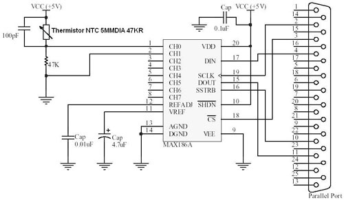
Figure 1: Simple ADC-to-Parallel Port circuit diagram
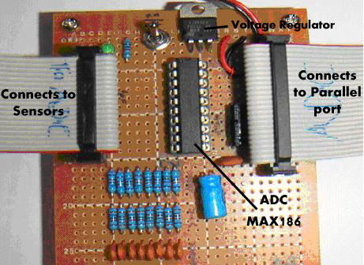
Figure 2: ADC Hardware Example
See ADC_driver.c in the Code
Examples section for the actual program to operate this
circuit.
2. Reading from and Writing To the Parallel Port.
Now that that hardware is built, it is time to develop the
software. However before you begin to write code or even start up
Linux you must gain access to the parallel port. Without this there
is no way you can read or write to the ADC. Refer to "Information
about the Parallel Port and SPI" in the Appendix for a brief overview on the Parallel port
and how it communications to the ADC.
To gain access to the parallel port in Linux you have to setup
the BIOS to support the Simple Parallel Port mode, which
corresponds to the old Centronics standard. This is done by
selecting the SPP or Bidirectional mode in BIOS. With the BIOS set
we enable I/O using the lp_tty_start program, see the “Linux: A Clear
Winner for Hardware I/O” written by Peter Radcliffe.
In addition to running the lp_tty_start program, you also need
the following code snippets below. Both these code snippets are
used in my ADC_driver.c code
example.
source: “Linux: A Clear Winner for Hardware I/O,”
Peter Radcliffe
Function lp_init() saves the current parallel port
state , including register values. lp_restore() restores
the parallel port to the previous state as saved by
lp_init(). Normally lp_init() would be run at the
beginning of main() and lp_restore() would be
used at the end. To read and write from the parallel port use
library functions
inb() and outb() from #include
asm/io.h.
To test a whether the I/O is working, write a simple program
that toggles the output on a pin on the parallel port and use a
multimeter or CRO to read the output. If the pin output toggles
correctly, then the I/O works.
3. Communicating Between the ADC and the Parallel Port
Once the circuit in Figure 1 is constructed and communication
between the parallel ports is established we can begin to program a
simple conversion. The file 'ADC_driver.c' (see Code examples below) contains the C code that
performs the conversions. However if you like to develop your own
software the following paragraphs briefly describe how to initiate
and read a conversion.
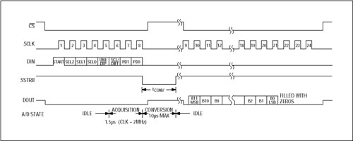
Figure 3: Internal Clock Mode Timing
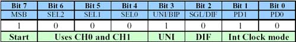
Table 2: Control Byte Configuration
As shown in Figure 3, a conversion is initiated by clocking a
control byte into DIN. The format for the Control Byte is outlined
in the MAX186
datasheet. For our purposes we will use the Control Byte
configuration outlined in Table 2.
Once the control byte is clocked in, the SSTRB will go low which
indicates the start of the conversion and then goes high when the
conversion is complete. After the SSTRB goes high, the next falling
clock edge will produce MSB of the conversion at DOUT, followed by
the remaining bits in the MSB-first format (refer to Figure 3). If
everything works correctly DOUT should clock out a 12 bit BCD which
corresponds to the voltage reading at the temperature sensor. To
convert the BCD to a decimal I used the following code snippet:
---------------------------------------------------------------
int dec = 0;
for(count=0; count<=11; count++)
{ dec = ((tempOut[11-count])*(twopowerof(count)))+dec;
}
---------------------------------------------------------------
* tempOut[] is a 12 integer array which contains 12 bit BCD (where
tempOut[0] = MSB and tempOut[11] = LSB).
If your DOUT outputs strange results, such as all zeros or
erratic readings, (I had these problems) check your circuit wiring
and make sure they follow the circuit diagram outlined in Figure 1.
If you still have problems you can use a CRO to check your parallel
port output to make sure they match the timing outlined in Figure
3.
About the Extreme Comfort System
My first encounter with Linux, parallel ports and ADCs occurred
during my 4th year at University. The project objective was to
interface to a piece of hardware via the parallel port. I decide to build an
Extreme
Comfort System or ECS for our project. The idea for this
project occurred during one cold night at my computer desk when I
noticed my hands were freezing and my eyes were strained from the
poor lighting conditions. From this three main functions were
developed:
1. Thermostat - Three temperature sensors
monitor the ambient temperature near the keyboard and a fan or
heater is activated depending on the user settings. A GUI interface
displays and controls the function of the thermostat.
2. Automatic light Controller - A light sensor
monitors the light level near the keyboard and computer monitor and
a variable light source changes its intensity according to user
settings. A GUI interface displays and controls the functions on
the automatic light source.
3. Data logger - All the readings from the
temperature and light sensors are stored into separate files with
statistical analysis. These files can be displayed on the GUI
interface.
To develop this project we used QT
designer for the GUI development and the MAX186 for the ADC. We
only needed to use one ADC, which converted the analog voltage
signals from the temperature and light variable resistors to
digital signals. The circuit design was very similar to the ADC
circuit in Figure 1, except a bit more complex.
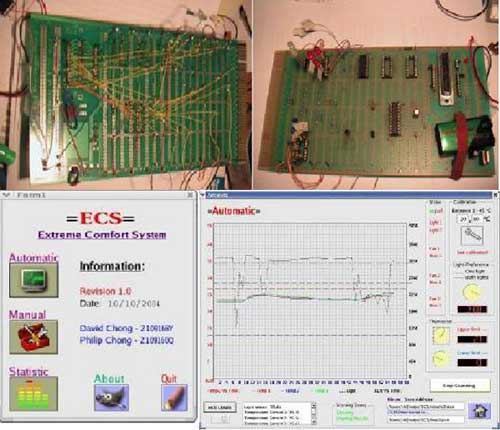
Pictures of ECS hardware and GUI
For more information about the ECS refer to my ECS
website.
Code examples
Here are some real code examples.
lp_tty_start.c: this
file was written by Peter Radcliffe and can be found in his article
“Linux: A Clear Winner for Hardware I/O.” This I/O
enabler allows access to the standard three printer ports and four
serial ports but nothing else. Ensure it is owned by root with the
SUID bit set (refer to Peter Radcliffe's article). To compile, type
gcc -o lp_tty_start lp_tty_start.c. To run, type
./lp_tty_start ./your_program.
ADC_driver.c: will run in collaboration with the “Simple
ADC-to-Parallel Port circuit” (Figure 1). Once in operation
it will output the current voltage of the NTC Thermistor every
second. To compile, type gcc -o ADC_driver ADC_driver.c.
To run, type ./lp_tty_start ./ADC_driver.
The ECS program (complete tarball can be downloaded here) will
perform the tasks described in the section About the Extreme Control System. This includes
the thermostat, automatic light control, data logger and the GUI
involved. To compile, type qmake -o makefile ecs.pro ->
make. To run, type ./lp_tty_start ./ecs.
Appendix
Information about the Parallel Port and SPI
The original IBM-PC's Parallel Printer Port had a total of 12
digital outputs and 5 digital inputs accessed via 3 consecutive
8-bit ports in the processor's I/O space.
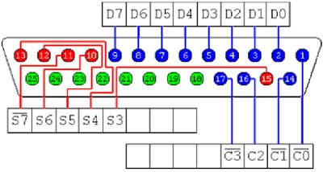
25-pin Female D-Type Connector
• Pins 9-2 (D7-0) are output pins accessed via the DATA Port.
• Pins 17, 16, 14, 1 (C3-0) are output pins, three inverted, accessed via the CONTROL Port.
• Pins 10-13, 15 (S7-0) are input pins accessed via the STATUS Port.
• The remaining pins (25-18) are grounded.
The ADC communicates with the parallel port using the SPI
(Serial Peripheral Interface)
protocol. SPI can be used to talk
to a whole range of integrated circuits such as EEPROMs and
microprocessors, so you may find the SPI part useful for other
projects. In our simple ADC-to-Parallel Port circuit, shown in
Figure 1, there are five wires connecting
the ADC to the parallel port. They include DIN, SCLK, DOUT, SSTRB,
and CS. Together they are used to to establish fast and flexible
communication. For more information about SPI refer to the MAX186
datasheet.
David Chong is a final year student at RMIT University in Melbourne
Australia. Nearing completion of a double degree in Computer Systems
Engineering and Business Administration, his interest in Linux,
microprocessors and integrated circuit was not apparent until about his 3rd
year at the university. Prompted by his senior lecturer, P.J. Radcliffe (also an author of LG)
whose relentless enthusiasm for Linux and electronics revealed how robust
and powerful the Linux operating system can be.
Also a 12-week vacation employment at ANSTO at Lucas Height, NSW
introduced me to the wonderful world of microprocessors and their amazing
applications.
Excited about entering into the workforce and working on some large-scale
projects, David is also interested in Wing Chun Kung Fu and music, in particular
the guitar, and hopes to create a rock band one day.
Philip Chong is a 5th (final) year student studying Computer System
Engineer and Business Administration at RMIT Univeristy in Melbourne
Australia.
He developed a interest in electronics and gadgets at a young age due to
fictional characters such as Batman, Robocop, and Inspector Gadget. However,
it was early in the university where he developed a keen interest in software
and hardware largely due to influence of certain lecturers including P.J. Radcliffe,
who is also an author for LG.
Philip has worked with Linux for the past 3 years and his skills range
from software GUI development to programming assembly code for
microprocessors. In this free time he enjoys practicing kung fu, playing
piano and guitar, woodwork, and rock'n roll.
There have long been three options in developing, testing, and
debugging microprocessor applications.
For hobbyists and enthusiasts, the simple and probably the
most frustrating way of developing an application was to write
and download the program code into the microprocessor, plug the
microprocessor into the circuit, and hope it works. Needless to
say, you could find yourself spending most of your development
time debugging and downloading the program back into the
microprocessor, over and over again.
If you were developing a slightly more advanced application,
you might invest some time into acquiring and learning simulation
software. This technique allows to you to see if the code used
for your program does as it's expected, on a nice and easy to
follow graphical user interface, where registers, memory, and
program execution can be viewed. Then, once you feel the code is
correct, you would perform the option above: Plug and pray.
However, the lack of any interaction with actual hardware during
development and debugging means that how the program performs and
executes on simulation software may be different from how it
performs in a real-world application.
Finally, if you were serious about developing microprocessor
applications in a reasonably short amount of time, you could
invest in an in-circuit emulator that actually gives you an idea
of real-world performance. However, priced in the thousands of
dollars, this option is well out of the means for the average
microprocessor enthusiasts.
We present a fourth option — using your regular IBM PC to run
simulation software that controls real hardware in real time,
through the parallel port. This has been achieved under Linux,
and simply could not have been achieved under Windows due to
lack of access to I/O ports.
We decided to implement this solution using the PIC16F84A, a
popular processor for hobbyists with a simple instruction set
that can run reasonably advanced applications
The difficult bit - The hardware interface
We found plenty of good quality microprocessor simulators for
a wide range of microprocessor families. However, as mentioned
above, the lack of any hardware interaction was seen as a major
drawback, when developing an application. What was the solution?
The parallel port on the PC was seen as an input and output
device that had enough I/O pins to be able to provide enough
support for the 13 I/O pins on a PIC16F84A. (For our simulator, we
don't need the two oscillator inputs, as the clock timing is done
in software.) However, it is not as easy reading and writing data
to the parallel port as we originally thought: In the more recent
versions of Windows, access to I/O ports on the PC is virtually
non-existent, without a hack. In Linux, there is a better way.
First, allow the program to run as a root
application:
su - root # Become root, give password when requested.
chown root your_program # Make root the enabling program's owner.
chmod u+s your_program # Set the SUID bit.
Then, access the I/O ports at the beginning of your
program, and remove root privileges:
/*--- Set access to the ports.*/
if (ioperm(0x378, 3, 1))
perror("Failed ioperm lp0 on") ;
/*--- remove root privileges.*/
setgid( getgid() ) ;
setuid( getuid() ) ;
For more information, read P.J. Radcliffe's article in
Linux Gazette's March 2005 edition ("Linux: A Clear Winner for
Hardware I/O").
However, hardware interaction through the parallel port was
only one feature that we wanted to provide. To properly simulate
a real-world application, using the parallel port as a substitute
for the PIC16F84A's I/O ports, we also wanted to make the
simulation be able to run in real-time.
Typical PIC16F84A applications run off a 4 MHz clock. That
translates to a 1 MHz instruction rate. This means 1000
instructions every millisecond. With release of the Linux
kernel 2.6, we could achieve 1 millisecond time slicing, which
gave us our best chance of running an application in real time.
In our tests on an 800Mhz Pentium 3 laptop, the amount of time
the instruction execution (1000 instructions) take out of the
1 ms. time slice is about 50%.
Reading and writing to the parallel port after every
instruction that accesses the processor's I/O is infeasible:
Perfect real-time simulation could not be done. However, we could
achieve what we dubbed pseudo-real-time, that is, we run as many
instructions as needed in the 1 ms. time slice the Linux
kernel gives our program, and then perform the reading and writing
to the parallel port: input pins are read and output pins are
written to. This meant that, in the time, all the instructions
were executing in the 1 ms. slice, if an output pin went from a 0
to a 1 and then back to 0, the end result would be that the
parallel port pin representing this PIC16F84A pin would not see
the change. That is why we call it pseudo-real-time.
Software side
We wanted the simulator software to have an easy-to-use
graphical interface. One thing lacking from many
microprocessor simulators we found on the Net was a
quality user interface. The ability of these programs to actually
simulate a microprocessor was unquestioned; however, we felt that
users need a program that not only runs correctly but also makes life
easier for a microprocessor developer through its GUI.
For our GUI design, we decided to use Qt Designer, an open
source (for non-commercial products)[1]
and easy-to-use IDE that
uses the Qt graphics library to help users build effective
designs. Coming from a predominantly Windows programming
background, we found Qt Designer to be very powerful, and, in
many ways, very similar to Visual Studio .NET — which made the
learning curve very gentle.
Using Qt Designer also fell into line with another of our
project's goals — being an open source project. We decided early on
that by making the simulator open source, we could use GPL code and
allow users who had an understanding of programming to make their
own changes to our software where they see fit.
Being able to use GPLed code made our job easier, and huge thanks
must be given to Scott Dattalo, the creator of GPSIM. GPSIM is an
open-source microprocessor simulator that simulates the entire
PIC family of processors. Our project took the PIC16F84A
emulation out of GPSIM, and used it for our back-end code. Also,
our thanks go to P.J. Radcliffe, an RMIT academic, whose article
in Linux Gazette on hardware I/O under Linux (March 2005) and
accompanying software (a program called lptty_start) helped us
access the parallel port under Linux, and made the job of reading
and writing to the parallel port a whole lot easier.
A typical example
Now, we will go through a simple application that uses
our simulator's features. Here is a simple segment of code that
flashes an LED on and off (really fast) from Port A, pin 0 on the
PIC16F84A:
list p=16c84
__config _wdt_off
include "p16c84.inc"
org 0
goto start
org 4
start:
bsf status,rp0
movlw 0x10
movwf trisa ; set low 4 bits of port a to output
bcf status,rp0
here:
call turnon
call turnoff
goto here
turnon:
movlw 0x01
movwf porta ;move 1 to bit 0 of port a
return
turnoff:
movlw 0x00
movwf porta ;move 0 to bit 0 of port a
return
end
The ASM code has to be compiled using an external compiler. We
recommend GPASM, an easy-to-use free compiler. To load
this file into our simulator, click on the open icon in the
toolbar. This will open up a file open dialog, from which you can
select either a .hex file or a symbolic .cod file. It is
considered better to load the COD file, because it has more
information associated with it, such as symbol names for variables
declared in your source code and actually being able to view the
original ASM source code.
Once you've selected a file, another dialog pops up to
show what kind of parallel port configuration you want. You have
the option of being able to use 0-13 inputs and 0-4 outputs, or
0-5 inputs and 0-12 outputs — or not use the parallel port (if its
not required). For the above application, we will use the second
option (5 inputs/12 outputs).
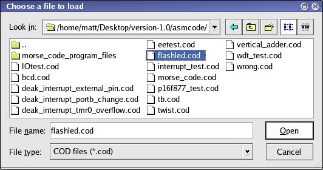
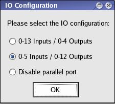
Once loaded, you can see, under the source code tab, that there are
two components: a history list that shows the most recently
executed instructions, and a source code viewer that shows the
associated ASM file with the program. By double-clicking on a
line of source code, you can add and remove breakpoints to a
particular line of code. When executing, a program will stop when
it hits a breakpoint, and this feature can be used to view the
state of the PIC16F84A program during execution.
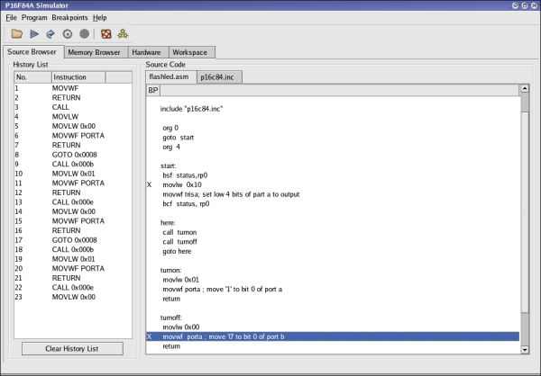
By clicking on the memory viewer tab, we can see three
components. First, we can view the program opcodes in the
memory browser tab, under the opcode viewer component. The current
instruction is highlighted. When executing a program in
single-step mode, the highlighted line changes with each
instruction step. The opcode viewer shows the memory address
where the instruction is located, the 'hex' representation, and
the disassembled (ASM) representation of the code.
Also located under the "Memory Browser" tab is a memory viewer
(bottom half of tab). This graphical component allows users to
view/modify the value of memory. Users can view register memory
(RAM), program memory, or EEPROM memory of the PIC16F84A, by
selecting the appropriate radio button on the bottom of the page.
They can also add break points on the reading and writing of
registers. This is indicated by a yellow and red background on
the register, respectively.
Another simulator feature to aid viewing what
really happens during a PIC application's execution is the Watch
Viewer. It allows the user to right-click on a memory location
(in the memory viewer tab), and, from the menu that pops up, select
to add a 'watch' to a memory location. For instance, if you want
to view an general purpose register that your program uses as an
important variable, you can add a 'watch' to it.
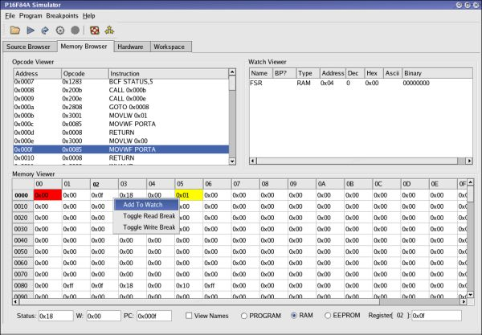The third tab, the Hardware tab, is where you can specify the
mapping between PIC16F84A pin and parallel port pin. To map a pin
to one on the parallel port, you click on the drop-down box associated with
that pin, and select which parallel port pin you want the PIC pin
to be mapped to. For instance, in our above program, if you
wanted Port A Bit 0 (pin 17 on the PIC chip) to be mapped to
parallel port pin 9, you would click on the drop-down box next to
RA0, and select the number 9. Now, any change in the value of RA0
will be reflected on this parallel port pin. By connected an LED
to this parallel port pin, we can run the PIC application. (Also,
note that your parallel port mapping configuration can be saved and
loaded to file).
The mapping of parallel port pins to PIC pins can be saved or
loaded to files, by clicking the corresponding buttons at the bottom
right-hand corner of the screen.
We can run the program in full-speed mode, by clicking
on the run-icon in the toolbar. We stop execution in full-speed
mode, when breakpoint is hit or the user clicks on the stop icon
in the toolbar. We can also run in single step mode where we run
one instruction at a time, by clicking on the step icon. The user
can choose to step over an instruction that they do not want
executed, by clicking the step-over icon.
Conclusion
If you interested in downloading our software, our project can
be found on sourceforge.net. The project name is Microprocessor
Simulator on Linux.
[1] Rick Moen
comments: Because Qt Designer's licence restricts usage,
albeit certainly generous and relatively benevolent for a
proprietary software package, it is actually under what would be termed
a "viewable source" or "source-available" licence, and not a genuinely
open source one. Fortunately, that doesn't prevent using it to create
open source works of your own, as you've illustrated in the article.
Hrvoje Deak is in his final year of a double degree in Computer Systems
Engineering and Computer Science. A final year project on developing a
microprocessor simulator helped explore his interests in software
development and microprocessors. Hrvoje has only recently become an avid
Linux user and in a short amount of time has used Redhat 9, Mandrake 10 and
currently has Fedora Core 2 installed on his home PC.
Jonathan is currently studying in the final year of a double degree
majoring in Computer Science and Computer System Engineering at RMIT
University in Melbourne. He has taken quite an interest towards Software
Engineering in languages such as C, C++ and Java. Jonathan discovered
Linux in his studies and is currently involved in a 3 semester project
developing a Microprocessor Simulator on Linux interfacing with the
parallel port. Jonathan has Fedora Core 2 installed on his PC at home and
uses it frequently to work on various projects.
As part of an eternal quest for knowledge, Matt Edwards is studying for a
computer science and computer systems engineering double degree at RMIT
University in Melbourne. Matt developed an interest in Linux midway through
his degree when he discovered how much better it was than Windows. He now
scoffs at anyone who even mentions the 'w-word'. Aside from computers, he
has a few hobbies including energetic pursuits such as athletics, cycling
and downhill skiing.
A couple of months ago, the combination fax/printer/scanner/copier
stopped using black ink. Right after I bought a new color cartridge,
rats!
This happened about the time the network color laser printer arrived, so
printing was not a problem. And faxing is not particularly common,
certainly not the receipt of something unannounced.
Actually, now that I think about it, it isn't clear whether a fax is
even relevant any more. For me, attachments to e-mail are vastly more
common than anything by fax. I can't even remember when I last sent or
received one.
But it is amazing how dependent one can become on the ability to copy
all kinds of stuff. And the last thing anyone wants to do is to rush
into buying something. What to do?
Well, as it turned out, all the components of a copier were available,
although perhaps not obvious at first. There was no reason to assume
that the combo device suddenly couldn't scan any more. And the new
laser printer works beautifully. We also have: a network, Samba, and
OpenOffice.org. All we need to do is set things up.
Basically the plan is to configure Samba on a PC under GNU/Linux such
that another PC with some flavor of Windows can access a share on it.
Then, the software that came with the combo device can be used on the
Windows machine to scan a document, and save it on a Samba share, in a
directory on the Linux machine. And from there OpenOffice.org can
access the result of scanning, and print it over the network to the
network printer.
Setting up Samba involved nothing more than adjusting a couple of
entries in the configuration file, /etc/samba/smb.conf, and enabling the
user — all of this and the following as root, of course.
This is the configuration file.
Basically it is the file as included with SUSE's 9.2 distribution.
I added a couple of entries, and turned into comments others that
weren't relevant in the current context.
Worth noting are
"encrypt passwords = No" for the Windows 95 client
and
"hosts allow = 192.168.0. 127.0.0.1"
to allow access over the network — the space before "127." is
relevant.
Under Linux, I then issued the following commands:
"testparm | less"
to verify the configuration file
"smbpasswd -a web"
to create a Samba user known on the client Windows machine
"smbpasswd -e web"
to enable this user
"smbd -D" and
"nmbd -D" to start Samba
"smbclient //LohgoPC2b/web"
to verify access to the share defined
On the Windows machine, it was necessary to configure the network
to access the Samba share, something I had done a couple of years earlier.
(This partition on that machine gets almost no use and no modifications.)
For details on that see section 6 of my article, Quick-Start Networking,
in Linux Gazette 87, February 2003.
Having done the above, copying is slightly more complicated than in the
past. The combo device and the network printer both must be on, and the
two participating PCs must have been booted appropriately. I also have
to start Samba, since that doesn't happen on boot, although it would be
quite easy to set that up.
The combo device always had been able to copy brief texts, ca. 2~3
pages, directly. Any more than that required the software and memory of
a Windows machine. So now, copying is initiated as in the past, but not
stand-alone, but rather through the Windows PC. And then, instead of
printing or filing locally, the file is written out to the Samba share
— a folder under Network rather than Desktop. At this point
OpenOffice.org on the Linux PC can read the file, and send it off to the
network printer.
Extremely satisfied with the results, I originally had no intention of
doing anything more, particularly given that Windows is such a pain to
navigate, and it is so difficult to keep keep track of and document what
one has done. But this was easy enough, as has been my experience with
Samba that I decided to create a printer share in order to print
directly from the Windows machine without having to use OpenOffice.org
on the Linux machine.
In well under 30 minutes, the scanner software under Windows
was printing directly to the network printer — well, through Samba on
the Linux machine, but without the steps required with OpenOffice.org.
Essentially, this is exactly the same situation as in the past,
when copying multi-page documents too large for the modest amount of
memory in the combo device.
All that was required was to un-comment the printer share in smb.conf,
and install a network printer under Windows, the same procedure as
described in the article referenced above. It is interesting to note
that the CD-ROM that came with the network printer included a driver for
Windows 95, although I did have to hunt around a bit. So now we have
Samba on SUSE's next-to-latest distribution (9.2) providing a network
printer to a version of Windows that must be something like 10 years
old.
'95 boots about as fast as the network printer can warm up. Perfectly
adequate for a couple of quick copies, when scan quality and color are
not high priority. But an unanticipated consequence of all this is that
the print quality of copying has improved dramatically! The scanner
part of the combo device still works fine, and the laser printer is just
cleaner than the ink-jet ever was.
Let there be no misunderstanding: I'm not suggesting this as an ideal
solution for the need for a copier. But a couple of hours of effort
with the tools that Linux provides and some obsolete hardware and
software (a Pentium 166 with '95) — and no additional expense
— provided a perfectly viable means to copy documents
occasionally. It also bought me the time needed to research the best
way to replace the copier function with a scanner that works well under
Linux.
Edgar is a consultant in the Cologne/Bonn area in Germany.
His day job involves helping a customer with payroll, maintaining
ancient IBM Assembler programs, some occasional COBOL, and
otherwise using QMF, PL/1 and DB/2 under MVS.
(Note: mail that does not contain "linuxgazette" in the subject will be
rejected.)
Using The QEMU Emulator, My Thoughts And Experiences
[ Disclaimer: QEMU comes with support for emulating a full x86,
PowerPC, or SPARC system; because of my own focus and my lack of having
software that needs other architectures, I have stuck to using the
emulator's x86 aspect. It should be remembered that, while I am going
into as much detail as I can about my experience with QEMU, I am leaving
a good portion of the software unaddressed. Simply put, other than
trying to boot a Darwin ISO, I have not used it to run no-x86 OSes. ]
Using QEMU: Introductory thoughts
I have been using Linux, along with Windows, since 1997 — sometimes
alternating; using one for a while and then replacing it with the
other; sometimes dual-booting, with both installed on the same
computer. I'm never quite happy with either arrangement. Regarding
using one at a time, there are applications on one I miss when I use the
other, and Win32 ports and WINE always seem to fall short of using the
application natively. When it comes to dual booting, dividing up hard
drive space is always a problem; especially considering that while
Linux can read NTFS (and read and write to FAT32), any hard drive space
dedicated to Linux is mostly inaccessible to Windows.
I remember using a copy of OS/2 Warp I got in mid-1997, and thinking
the idea of integrating what is essentially a virtual DOS (or
DOS/Windows) computer was neat. This indirectly led me to explore
other virtualisation setups, including running AppleDOS in ApplePC
under DOSEMU on Linux. When VMWare released their software, I tried an
evaluation copy of it, but was unable at that time to get it to work
with the Slackware system I had set up. By that point, emulation, it's
capabilities, and hardware requirements surpassed the underpowered 486
that was the computer I would have to work with for the next couple
of years.
Nowadays, I have a decently modern computer, and I've gone to town
rediscovering emulation and the different modern programs such as
Basilisk II, Bochs, and QEMU; and I can see the potential that is so
close to being able to seamlessly switch from one operating environment to
the next. So far, the program I like best for x86 emulation is
QEMU, and I'd like to write a bit about my experience with it and
thoughts on it.
How I set up and built QEMU under Linux
For those of you who do not know, QEMU is the (fast!) emulation suite
written by Fabrice Bellard (available at
http://fabrice.bellard.free.fr/qemu/). QEMU includes programs to
emulate a number of platforms, including the x86, SPARC, and PowerPC. It
also is capable of running stand-alone programs for various platforms
(much the same way WINE runs Microsoft Windows programs under X).
As you would expect with a sufficiently complex program such as QEMU,
compiling from source requires that a number of other libraries and add-ons
be installed, in order to be successful. Out of the three operating
systems I have used QEMU on, two (NetBSD and Windows) do not gain any
benefit from compiling from source; there, I stick to using pkg_add
or the binary installer, respectively.
However, shortly before the release of QEMU 0.7.0, Fabrice Bellard
wrote and released the closed-source kqemu module for the Linux
kernel, which requires compiling both the module and the QEMU program
from source, in order to install. It's estimated that, without the
module, QEMU performs at roughly 5:1 or 10:1 (that is to say, taking
five or ten native instructions to perform one emulated instruction),
whereas, with the module, the ratio approaches 2:1. Suffice to say, this
performance increase is well worth some minimal fussing about with
compiling sources. (Experimental versions of the kqemu module are
available for FreeBSD and Windows, but, in this article, I will address
using it with Linux.)
Compiling the source, while slightly more complex then the usual
"./configure && make && make install" routine, is still
very do-able for most people. This explanation is based on my experience
with Debian; if you're using another distribution, the specifics will be
different, but the basic idea should be the same. Also, compiling kqemu
is different if you are using the 2.6 kernel, as opposed to the 2.4
kernel I use. (The difference is outlined on the instruction page
for kqemu, which is at
http://fabrice.bellard.free.fr/qemu/kqemu-doc.html).
First, I execute "sudo apt-get install qemu" to get most of the
infrastructure in place (mainly the bochsbios package and whatever SDL
libraries are not already installed). After that, I grab the
libsdl-dev package with apt-get, and then I install the kernel source
tree. The kqemu instruction page gives great step-by-step instructions
on how to configure your Linux kernel source tree for kqemu. The only
thing I will add here is that, on my current system, I have never had a
"home-made" Linux kernel successfully boot, undoubtedly due to something
I'm doing wrong. (I have never been good with rolling my own Linux
kernel.) Fortunately, installing the new kernel is not necessary;
simply building it works. These days, I just extract the source from
the tar archive I made of the compiled source tree, and then create the
appropriate /usr/src/linux symbolic link.
The rest is easy. Obtain the QEMU and kqemu source files, extract the
QEMU source, then change into the newly-created QEMU source directory
and extract the kqemu source there. Then, do the familiar "./configure
&& make && sudo make install" ritual, to build and
install it.
A more knowledgeable person than me will know how to set up the
proper links and scripts in /etc/init.d/. Not wanting to jump into that,
myself, I simply run "sudo insmod kqemu", before running QEMU.
Setting up and using my QEMU environment
After QEMU is successfully installed, it's time to use it. On my
computer, I have my primary HD on one IDE controller, and my DVD and
second hard disk on another; this minimises the amount of seeking the
hard drive heads have to carry out, and increases performance. After
writing them to CD, I copy any interesting ISO images to a directory on
my second hard disk, and use create hard disk images on my primary hard
drive. This gives QEMU a performance boost when it uses these ISO files
as a virtual CD (in addition to the performance boost already gained by
reading from the hard drive instead of the slower CD-ROM drive). From my
home directory, I create a QEMU directory, and then separate directories
for each virtual machine, though there is no practical reason you could
not dump each uniquely named hard disk image into one single directory.
As with Bochs, QEMU includes a separate hard disk creation program;
however, using hard disk images under QEMU is considerably easier than
with Bochs. With Bochs, you have to take note of the sectors, heads,
and sectors per track of each hard disk image (and then save this
information in your ~/.bochsrc); with QEMU, the complexity is in the
number of image formats supported (which currently are vvfat, vpc,
bochs, dmg, cloop, vmdk, qcow, cow, and raw). Myself, I mostly ignore
them, and use the default raw format.
There are front ends for QEMU available, but, personally speaking, I
find it easiest to simply type the command parameters in by hand.
While that may sound weird, there are only a few that are likely to
change:
the virtual device you boot from. (When you install your OS, you
will want to choose to boot from the CD, and then quit QEMU after it
is installed, and then choose to boot from the hard disk.)
the name and location of the virtual CD (or whether or not you use
one at all).
the amount of RAM you assign to the virtual machine. (Often, the
default of 128 megs is fine, but you may need to adjust it, or you may
find that you can free some up.)
Once your OS is installed to the hard disk image, and your settings
are finished, you may want to create a simple shell script that
invokes QEMU with the proper command.
I have installed Windows XP, FreeDOS, FreeBSD, and NetBSD at different
times on QEMU. I have tried to install Windows 2000, but gave up after
it got stuck during the install. My largest gripe about QEMU may well
be a personal failure (to RTFM?) on my part: my network does not work.
If I use the default /dev/net/tun device, DHCP hangs (until I control-c
it); if I use the unprivileged -user-net option, dhcp "works", but the
machine is inaccessible. The work-around I have for this is to use
mkisofs to create ISO images of any files I want to import into the
virtual machine, and attach them as virtual CD-ROMs. I also have odd
focus weirdness (QEMU grabbing the focus in window mode, after I press
Ctrl-Alt to release the cursor).
My experience backing up and sharing virtual hard disks has been hit
and miss. I have had XP complain about data corruption after unzipping
a hard disk image, but had no problems running a NetBSD image after
extracting it. Not having tried many of the image formats, I do not
know if switching from the raw format to another one would improve
matters or not.
One thing to note is that when using floppy images (e.g., the boot
floppies for a Linux distribution), it's better to dd the images to
another file from inside the virtual machine. For instance, if you
want to boot from the file big.fs, you would copy it to your virtual
hard drive, boot the virtual drive with another file attached as the
floppy drive (e.g., specifying "-fda 2.fs" on the command line), and then
running a command such as dd if=big.fs of=/dev/fd0 bs=512 inside the
emulator; then rebooting — but now with 2.fs having the contents
of big.fs arranged in a way that makes QEMU happy. Just trying to boot
from the raw image, in my experience, tends to produce mixed results
(varying from making no difference to not working at all).
Closing thoughts
In closing, I think QEMU is a great program, and a real asset for those
who want to use virtual environments for whatever purposes. It works
great with CLIs and lightweight window mangers, but I would not
recommend it for people who want to use intensive GUI environments such
as XP or GNOME/KDE on a regular basis (e.g., as a second desktop).
Compared to Bochs, it's much faster (in fact, on the QEMU Web page, it
justifiably boasts of being a "fast!" emulator), but it's also worth
noting that its interface is simpler, both on the command line and in
the way that you swap out devices while the program is running. (With
QEMU, you simply type Ctrl-Alt-2, and then use the eject and change
commands).
Compared to VMware, I think that QEMU (when using the kqemu module)
performs nearly as well, but QEMU lacks VMware's flexibility
in managing memory assigned to your virtual machine. This is because
VMware is able to swap out part (or most, depending on your
configuration) of your virtual machine's RAM to disk, but QEMU is stuck
using whatever the size you have allocated to /dev/shm. In QEMU's favor,
QEMU currently does not ship with a GUI front end, but between the
ability to use a key combination (Ctrl-Alt-f) to switch between
full-screen and window modes, and the simplicity of QEMU's internal
console commands, you really do not miss it. I prefer QEMU's interface,
because I feel it strikes the right balance between capabilities and
leanness. (After all, memory and CPU cycles used by a Win32 or
GTK front end are not available to be used by the virtual machine!)
Since 1997 Michael Huff has used Linux and BSD to read and post on the
world wide web, do light programming and to explore his curiosity on
various operating system concepts. Because he fails at programming, he
considers himself a moderate end-user. His hobbies are listening to
music and tinkering with different OS configurations.
Sorry to start off with such a bunch of alphabet soup, but it
seems unavoidable, when trying to make sense of the subject of
digital television. In the USA, terrestrial digital video
broadcasts are transmitted in 8VSB-modulatedATSC-encodedMPEG-2
transport streams, containing high-definition content in
progressive 720p (1280x720) and interlaced 1080i (1920x1080)
formats. I'm still not even sure what the official name for this
stuff is, so let's just call it HDTV.
So How Can I Get This
HDTV Stuff?
There are two aspects to consider. The first is your antenna,
and the second is the card to use in your Linux box. It may
strike you as unusual, in these modern times, for me to suggest
that the most economical way of upgrading the quality of your TV
reception is not to subscribe to some new-fangled "digital cable",
but rather to use an old-fashioned antenna, the kind you probably
used to have up on the roof of the house when you were a kid.
Antenna Considerations
You can
check what sort of antenna you're likely to need by going to
Antenna
Web, and also by looking up the particular stations you find
there in the FCC database, to get an idea of their
transmission power (ERP) and height above the terrain (HAAT). The
FCC provide the antenna locations, in terms of latitude and
longitude. You can find the entire table of stations in this
directory, in the following files: table1.pdftable2.pdftable2a.pdf. For example, doing a search for Zip code
CA94065, you'll find plenty of stations that can be received with
nothing more than a regular indoor TV antenna (i.e., a plain piece
of wire, nothing special). Since the digital TV transmitters tend
to have been installed on the same towers used by
analog TV transmitters, apparently a fairly good indicator of
whether or not you'll be able to receive digital TV is to see
what sort of analog TV reception you currently get with just a
basic VHF antenna. If you can get even a few "snowy" channels
with analog TV, your chances are good for digital TV.
The PC
Card
As of March 2005, there seem to be only three HDTV cards
for use in Linux PCs, the pcHDTV, the Air2PC
card, and the FusionHDTV card. I've tried the pcHDTV card.
Initial
Results
Back in March 2005, to get going and to see what the
pcHDTV card was capable of, I installed one pcHDTV HD-3000 card
into a Dell Dimension XPS, and one into an ASUS Barebone. I installed the KnoppMyth
distribution from KnoppMythR5A12, then built and installed the xine-hd sources provided by pcHDTV on their
accompanying CD, and followed the advice in the very amazing,
accompanying three-page printed handout to use the command:
dtvscan /dev/dtv > $HOME/.xine/channels.atsc
This created a file with the following contents (using only a
wire antenna):
After that, to view HDTV channels, it was only a matter of
configuring xine-hd to use the "xine-hd skin" (by
clicking on the little spanner, and, in the "gui" tab, selecting
"xine-hd" for the "gui skin theme" drop-down box), then launching
xine-hd, using:
xine dtv://
Recording is done by selecting the number from the second
numeric column corresponding to the channel. For example, to record
from KQED-HD, use the command:
getatsc /dev/dtv0 30 > filename.mpg
To play back such recordings, just use either
xine-hd (which is a version of xine patched by pcHDTV for viewing HDTV
streams) or mplayer. It seems that, oftentimes, multiple program
streams are recorded within the MPEG transport, due to the
transmitting station making use of multicasting.
Multicasting is a process whereby a station that is not
broadcasting in HDTV can provide multiple Standard DTV channels.
So what does that mean for us? Essentially, it means that we'll
need to read up in the manuals for our video playback tools, for
info on how to go about selecting the right program stream. For
mplayer, it turns out that the flag to use is
-tsprog followed by the program number. For xine,
use the channel number from the middle column followed by a dot,
followed by the stream number from the third column, and use this
with the uppercase -C flag — according to the pcHDTV
documentation. Depending on when you initiate the recording, one
or other stream may become the default stream played back by xine
or mplayer. For example, to playback substream number 3 from your
recording of channel 30 (KQED-HD in the list above), use the
following:
Some of the digital channels, for
example, KTVUHD (channel 56, program stream 3) and KPIX (channel
29, program stream 1), transmit audio using an A/52 5.1 channel
48000 Hz stream.
Essentially, this means that the audio stream contains five
regular audio channels (center, front left, front right, side
left, and side right) plus one low-frequency effects channel
(subwoofer). It's the same sort of audio stream commonly used for
DVD movies.
If you have an external audio decoder (for example, I tried this
using a Pioneer VSX-D711 receiver), and your sound card supports AC3 pass-through, then you
can simply connect up the digital output from the sound card to
the digital input of the receiver, and let the receiver do all
the work of decoding the audio.
To select AC3 pass-through with xine, just go into
setup, pick the Audio tab, and select AC3
passthrough from the list, then restart xine. Pressing
Ctrl-I in xine will show the info on the audio
stream you're tuned to, and, if it shows A/52 5.1 48000
Hz, then your receiver should indicate that it's decoding a
surround sound stream, usually by lighting up an indicator
displaying the message "Dolby Digital". Most channels transmit
audio in stereo, and xine will indicate this when
you press Ctrl-I with the message A/52 2.0
(stereo) 48000 Hz.
To get mplayer to do AC3 passthrough, use the
-ao alsa -ac hwac3 flags, for example:
mplayer -ao alsa -ac hwac3 -tsprog 3 filename.mpg
Is there a command-line
tool for scheduling recordings?
Inkling's
pchdtvr is probably what you've been looking for. It's an
amazing console application.
Here's a screen shot of pchdtvr in action, showing
the program guide received from off-the-air:
Because full ATSC streams eat up large amounts of disk space,
you'll be happy to see that Inkling's latest release, pchdtvr 1.0-rc7, allows you to select which program
stream to record. Program streams are called Virtual Channels in
the ATSC spec. Inkling also developed atscut, which
you can use to cut out commercials and other junk from your
recordings, to save space and make them more convenient for later
viewing. It can also be used for far more than that, though.
With pchdtvr you can schedule recordings of specific
program streams using a timer. E.g., to record channel 30 virtual
channel 3 (KQED-HD) for thirty minutes every Monday, use an entry
in your /etc/pchdtvr.0.conf like this:
C30:KQED:PBS
T30:20:00:030:0100000:PBS.3
If your machine is a Pentium 4, please turn off
hyperthreading in the BIOS, before recording using
pchdtvr on 2.6 kernels: I'm not sure yet why, but,
while running with hyperthreading enabled, the system would always
lock up shortly after pchdtvr started recording. With
hyperthreading turned off, everything works fine.
Now, with pchdtvr 1.0-rc7, you can enable the use of GNU
screen using pchdtvr -i0 -w, so that,
when you run pchdtvr on the console, you'll still be
able to view it and control it from within X11, without worrying
about X11 crashing and messing up your recording session. Even if
X11 should happen to crash, the screen session will
still be running completely unaffected, and you'll be able to
re-attach to it and resume control using pchdtvr -i0
-R. It also allows you to conveniently control
pchdtvr remotely over ssh.
Electronic Program Guide
In case you've still not quite gotten around to setting up MythTV, Andy Balaam's
freeguide is a nifty Java tool that can download XML
program guides, parse them, and display them in a nice
human-readable channel guide format. On Debian unstable,
freeguide is even available as a package. For the USA, freeguide will
download the program guides from Zap2it. You can create yourself
an account at Zap2it Labs. The freeguide tool displays
the "Certificate Code" needed to create your Zap2it account, or,
if you prefer, you could use the Certificate Code from the
EFF's MythTV Guide.
These ATSC files are
huge. Can I squash them?
Recorded ATSC streams tend to have
the occasional error in them, and, for many video transcoding
tools, this causes them to error out, and stop. One method to get
around this is to use mencoder (from the
mencoder-586 package). The following recipe seems to
work relatively reliably to compress single program-stream video
files recorded using Inkling's pchdtvr, as described above. It uses
the lavc mpeg4 codec, and does two-pass encoding at
a very high 5000 bitrate. This high bitrate is
needed only if you really want to preserve the high resolution. To
determine the resolution of the stream you're viewing, use the
Ctrl-I key with xine-hd. This recipe
also preserves the original audio stream (which could be 5.1
channel), rather than compressing it using lame to
mp3. Some folks may not have lame
support built into their mencoder. Compressing the
audio to mp3 at a low bitrate of 96kbps
would provide quite significant space saving: see the
mencoder manual page for an explanation of the
options to use.
Sometimes, the video itself is of little interest, but
the audio track is worth preserving. So far, the only way I've
found that works to extract the A52 audio stream from ATSC
recordings is to use mplayer's -dumpaudio flag. This
extracts the A52 audio channel (also known as AC3 audio) into a
file called stream.dump, suitable for processing
with a52dec and lame into an
mp3, as follows:
Strangely, using extract_a52, as one would
normally expect to use for this purpose in place of mplayer
-dumpaudio, usually results in audio that plays at the
wrong speed. To hear what it sounds like, use:
mplayer -frames 0 input.atsc 2>&1 |grep "AUDIO A52"
# The mplayer output line we're interested in will look something like this:
#
# VIDEO MPEG2(pid=49)...AUDIO A52(pid=52) NO SUBS (yet)! PROGRAM N. 3
#
# Convert the pid=52 into hex, and give it as "-t 0x34" parameter to extract_a52:
extract_a52 -t 0x34 input.atsc | a52dec -o wav | lame - output.mp3
Multiple monitors
Using two monitors at the same time turns
out to be very convenient when viewing digital TV, as your
primary monitor can be used for other stuff, while keeping the TV
output running on the secondary monitor. For recent ATI graphics
cards, I try to explain the required configurations here. The way KDE makes the virtual desktops
twice as wide, when the MergedFB setting is used,
makes it possible to switch virtual desktops on one monitor while
leaving xine running on your other monitor, as long
as you right-click on xine and select the "To Desktop -> All
Desktops" setting. That way, xine will still be there when you
switch desktops.
Novell SUSE SLES-9 SP1, which has kernel 2.6.5-7.139.
Novell SUSE Linux 9.2 professional (the shrink-wrap bundle,
also installable by ftp,
using SUSE's mini-installation boot CD).
Fedora Core 3 (First remove the line /sbin/modprobe
bttv from the minstall script when building
the pcHDTV-1.6/kernel-2.6.x/driver modules for the
HD-3000 card, as otherwise the cx8800 module won't
work properly).
Red Hat RHEL4, which has kernel 2.6.9-5.EL.
I've tried the newer DVB drivers for the pcHDTV HD3000
card only with:
Debian Unstable, with kernel 2.6.12.3 (see below).
The
Air2PC card
According to the Myth TV project documentation, the Air2PC is an
ATSC card manufactured by BBTI, which makes nothing but digital TV
capture cards. They are the maker of the SkyStar2 card (one of
the best DVB cards available for sale currently). It uses a 4th
generation NXT2002 demodulator. The Air2PC is supported by the
linuxtv-dvb driver set. Support for the pcHDTV cards has also
recently been added (see below). This driver set has been used
for many years, and is designed for Digital TV. The Air2PC driver
should be included in the 2.6.11 kernel, when it comes out. The
Air2PC supports hardware filtering of the transport stream, which
relieves the PCI bus of the entire transport stream, thus making
the burden on your computer less when recording. The Air2PC card
also supports QAM, which allows it to receive unencrypted digital
cable.
ATSC is used for over-the-air (terrestrial) broadcast of TV,
as well as for most digital cable TV in North America (USA,
Canada, and Mexico).
The Air2PC card cannot be used to receive European DVB,
although it does use drivers that are commonly used for European
DVB, hence the confusion.
The Air2PC cannot work with a satellite receiver, because the
Air2PC only accepts 8VSB or QAM-modulated input. This means you
can hook up only a TV antenna or cable TV wire to the Air2PC and
get it to work. Satellite HDTV tends to use QPSK modulation,
rather than 8VSB or QAM modulation.
At the time of writing, March 2005, the Air2PC card was around
$169.95, although it is out of stock until July 2005. More
details may be found on the following pages: Mythic TV and Cyberstore
The
pcHDTV Card
The Linux folks at pcHDTV supply two HDTV cards
with Linux drivers, the HD-2000 and HD-3000 cards. The HD3000 is
an NTSC (analog capture) and ATSC (digital) card for HDTV in
North America. The HD3000 uses a 2nd generation Oren demodulator.
The HD3000 is supported by a modified bttv driver that will
probably not be included in the mainline Linux kernel, as well as
by the new DVB driver, which has been included starting from
kernel 2.6.12-rc1. The HD3000 does not support hardware filtering,
and the entire raw transport stream is sent over the PCI bus. The
HD3000 in theory could support QAM for digital cable, and there
have been some success reports on the pcHDTV forums of doing this
using the new DVB drivers. The HD-3000 card has one RF input, one
S-Video input, one Composite Video/Audio input, and one Stereo
Audio output for NTSC. The HD-3000 card is not a universal PCI
card. The HD-3000 card is a PCI 2.2-compliant 5-Volt card. That
means there may be motherboards (that accept only 3.3 Volt
cards) that the HD-3000 cannot be used with, so check that the
PCI slot on your mother-board has a 5V key/riser toward the
center of the motherboard and not a 3.3V-only key/riser toward
the connector-end of the motherboard.
In March 2005, the HD3000 card was $169.98 plus shipping, with
a volume discount, e.g., you get a $9.96 discount if you buy two,
from pchdtv.
Mythic TV also sells them at $172.50 with free
shipping.
Playback of HDTV streams uses quite a lot of
CPU resources. One possible way to get around the issue of HDTV
playback on slower machines is to use XvMC to
offload the MPEG-2 decoding task to the video card itself.
Apparently, some video cards support XvMC,
have DVI outputs, and work in Linux. For a more
in-depth discussion, check out the Linux HTPC HOWTO.
More Antenna
Considerations
The frequencies for the channels used for ATSC
broadcasts tend to be higher, so the UHF antennas used for HDTV
reception tend to be physically a lot smaller than the VHF
antennas used for NTSC analog reception, because the wavelength
of the signal is shorter.
If the signal strength at your location is high enough, you
may be able to receive HDTV just fine using a plain loop of wire
hooked up to a piece of coaxial feed line. To get an idea of the
frequencies corresponding to the mysterious FCC channel numbers,
refer to the following list. This list of channels allotted by the FCC for digital
television may also be of interest. Either use the
TAB key followed by several presses on the
w key in Inkling's pchdtvr to display the wavelength, or
use this handy little calculator. (Ideally, the antenna loop diameter
should match the wavelength of the channel you want to
receive.)
If you are planning to really go all-out and design an
antenna, it may be best to start by having a professional
spectrum analysis performed at your location. Most satellite
installation technicians will have the equipment to do this, and
it will help to know whether you need to consider multipathing
(reflections) of the received signals in your design.
Redistribution Control
Descriptor
The Redistribution Control Descriptor, also known
as the broadcast flag, is described on page 79 of the ATSC
Standard A_65B. To check whether the transport stream you are
receiving has this 0xAA flag set, you can build the NIST DASE ATSC/MPEG2 parser, which will print
out Content_Protect_Copy_Mngt_descr when it sees the
0xAA flag set in the stream. Inkling's pchdtvr, now
at rc7, conveniently strips the RC flag from single VC captures,
and the atscut tool can display its setting and can
also strip the flag from existing captures. During capture,
pchdtvr indicates the RC flag's setting by causing
the packet statistics display PMT to turn an ominous
glowing red color. If statistics are not switched on, then the
presence of the RC flag is indicated by a red R
appearing in the bottom line of the display, to the left of the
TEVM summary display. For more info on the RC flag,
how it may affect your rights, and what you can do before the 1st
of July 2005 deadline, see the EFF.
Update: The U.S. Court of Appeals in Washington ruled in May 2005 that the FCC does not have
the authority to require manufacturers to implement the broadcast
flag.
DVB with the pcHDTV HD3000
The DVB driver for the pcHDTV HD2000 and HD3000 card is now in
kernels 2.6.12-rc1 and up. This guide tries to explain the steps
to using this new DVB driver. The initial thread about DVB driver
support in kernel 2.6.12-rc1 in the pcHDTV forums is here, and the Linuxtv folks also have this page about it. But let's go slow, and I'll try to
explain all the steps in detail as best I can.
For a similar guide showing how to configure the Air2PC
card, see here instead.
Build kernel 2.6.12.3
I built
kernel 2.6.12.3, downloaded on July 30,2005,
using this.config file on this machine, and booted it with great optimism.
The module to load for terrestrial digital HDTV (8VSB ATSC) is
cx88-dvb, and the module to load for analog NTSC is
cx8800. More on how to load the modules and what to
expect later, first let's look at what needs to be configured in
the kernel .config file to build them.
When compiling your kernel, DVB_OR51132 needs to
be set to "m". If that gives you the following
problem when you boot:
cx88_dvb: Unknown symbol cx22702_attach
then it means you're missing the DVB_CX22702
from your .config file. Also,
CONFIG_VIDEO_CX88 and
CONFIG_VIDEO_CX88_DVB both need to be set to
"m" for the analog (NTSC) driver cx8800
to be built.
The config make gconfig graph goes like this:
Device-drivers ->
Multimedia devices ->
[-] Video for Linux ->
Video for Linux ->
Video Adapters
[-] Conexant 2388x (bt878 successor) support (CONFIG_VIDEO_CX88=m)
[-] DVB support for cs2388x based TV Cards (CONFIG_VIDEO_CX88_DVB=m)
Digital Video Broadcasting Devices ->
[-] DVB for Linux (DVB=m)
[-] DVB Core Support (DVB_CORE=m)
Customise DVB Frontends ->
[-] Conexant cx22702 demodulator (OFDM) (DVB_CX22702=m)
[-] OR51132 based (pcHDTV HD3000 card) (DVB_OR51132=m)
Build the kernel however you usually build your kernel. On
Debian, I used Manoj Srivastava's amazing make-kpkg
tool, as follows:
tar jxvf linux-2.6.12.3.tar.bz2
cd linux-2.6.12.3
make gconfig
fakeroot make-kpkg --initrd kernel_image modules_image
This produces a file called
kernel-image-2.6.12.3_10.00.Custom_i386.deb in the
directory containing linux-2.6.12.3 (i.e., the parent
directory). I installed it using apt-get as follows:
During installation, the initial RAMdisk is created. The
contents of the initrd.img-2.6.12.3 can be viewed by
loopback-mounting it, to check it has all the modules you expect or
to edit the /mnt/test/loadmodules script to change the
sequence the modules will be loaded in, as follows:
mount -t cramfs -o loop initrd.img-2.6.12.3 /mnt/test
For more details on how to decide which modules will be
included, and the order they'll be loaded, see here. If you need to remove the kernel package,
because you have rebuilt it and want to try with a new one, use:
Probably all these details will seem excessive if you're
already familiar with Debian, but this is one the first kernels
I've built since I've been using Debian, so it's still fairly new
to me.
Download the Firmware
If you're
behind an HTTP application proxy firewall, set up your
$HOME/.wgetrc with your proxy as follows:
http-proxy=http://your-proxy.your-domain:80
Download the firmware using the scripts contained in the
Linux kernel sources Documentation/dvb directory,
e.g.:
cd ~/linux-2.6.12.3/Documentation/dvb
perl ./get_dvb_firmware or51132_qam
perl ./get_dvb_firmware or51132_vsb
You can also download the firmware files from here on the pcHDTV downloads page. Now copy the files
dvb-fe-or51132-vsb.fw and
dvb-fe-or51132-qam.fw to either
/lib/firmware or
/usr/lib/hotplug/firmware/ (depending on your hotplug
version). For Debian, I copied them as follows:
Sometimes, even though the firmware is present in the correct
location, it still doesn't get uploaded by the hotplug system. If
this is the case for you, it may be because of the same problem
as described here and here.
The fix I used on Debian was to add the following line to my
/etc/udev/udev.rules file:
To load the module for digital over-the-air 8VSB ATSC,
use the following sequence of commands. The reason for all the
"remove" commands is that, after a reboot, you may find that some
modules you don't want have been loaded. It's safest to
really clean things up, before loading the cx88-dvb
module, as follows:
This should cause the device directory
/dev/dvb/adapter0 to appear. It should contain the
following devices: demux0, dvr0,
frontend0 and net0. The list would be
as follows (this is for two pcHDTV HD3000 cards), showing the
major/minor numbers and permissions like this:
crw-rw---- 1 root video 212, 4 2005-07-31 22:42 /dev/dvb/adapter0/demux0
crw-rw---- 1 root video 212, 5 2005-07-31 22:42 /dev/dvb/adapter0/dvr0
crw-rw---- 1 root video 212, 3 2005-07-31 22:42 /dev/dvb/adapter0/frontend0
crw-rw---- 1 root video 212, 7 2005-07-31 22:42 /dev/dvb/adapter0/net0
crw-rw---- 1 root video 212, 68 2005-07-31 22:42 /dev/dvb/adapter1/demux0
crw-rw---- 1 root video 212, 69 2005-07-31 22:42 /dev/dvb/adapter1/dvr0
crw-rw---- 1 root video 212, 67 2005-07-31 22:42 /dev/dvb/adapter1/frontend0
crw-rw---- 1 root video 212, 71 2005-07-31 22:42 /dev/dvb/adapter1/net0
To unload the cx88-dvb driver (this also
conveniently unloads all of the modules it depends on), use:
modprobe -rv cx88-dvb
Output of the load command modprobe -v cx88-dvb
should be as follows:
Get the latest dvb-apps from the
linuxtv
CVS, using:
cvs -z3 -d ':pserver:anonymous@cvs.linuxtv.org:/cvs/linuxtv' co -P dvb-apps
If you're behind an HTTP application proxy firewall, you'll
need to add the proxy to the command like this:
cvs -z3 -d ':pserver;proxy=your-proxy.your-domain;proxyport=80:anonymous@cvs.linuxtv.org:/cvs/linuxtv' co -P dvb-apps
Some distributions include a dvb-utils package
that has tzap. Don't use tzap; it is
not a replacement for azap. If you can't find
azap, it probably means you have an old version of
the dvb-apps, so just build the
dvb-apps from CVS, and use them locally, as shown in
the examples here.
Build the dvb-apps by running make
in the top directory.
Go into the util/scan directory, and run the following
example:
cd dvb-apps/util/scan && ./atscscan atsc/us-NTSC-center-frequencies-8VSB
The kernel module will try to load the firmware for the HD3000
card, at this point. Check your "dmesg" output. If you see this in
"dmesg", then the firmware isn't being uploaded by the hotplug
subsystem:
or51132: Waiting for firmware upload(dvb-fe-or51132-vsb.fw)...
or51132: No firmware uploaded(timeout or file not found?)
As described in the section above, even though the firmware is present in
the correct location, it may still not get uploaded by the hotplug
system. Please try the fix described in that section.
Once the firmware loads successfully, dmesg will
show the following message:
Once the firmware is loaded, the atscscan runs as
follows. The reason to include the full output is to give an idea of what to
expect. This is for area code 94065 (for which the
atsc/us-CA-SF-Bay-Area file might be a better choice
for scanning with, but I didn't notice it until just now). Please
scroll on down to the end, where the summary of the run is
output: that's the part we use to make our
$HOME/.azap/channels.conf file, as it contains the
PIDs for the audio and video subchannels.
cd dvb-apps/util/scan && ./atscscan atsc/us-NTSC-center-frequencies-8VSB
The full output of the above command is here, but only the summary section
dumping lists at the end is what we're interested
in:
Put the last section
from the above output from atscscan into
$HOME/.azap/channels.conf. (You may need to edit the
first column to remove spaces and unusual characters, as you'll
need to pass the contents of the first column as a command-line
parameter.) Use the "-r" option to
./dvb-apps/util/szap/azap to tune to a terrestrial
8VSB ATSC channel:
./dvb-apps/util/szap/azap -r KNTV-HD
This will show output something like the following. The thing
to look for is the FE_HAS_LOCK, which means that the
frontend kernel module has tuned to the channel.
using '/dev/dvb/adapter0/frontend0' and '/dev/dvb/adapter0/demux0'
tuning to 207000000 Hz
video pid 0x0041, audio pid 0x0044
status 00 | signal 3999 | snr cd37 | ber 00000000 | unc 00000000 |
status 1f | signal cb84 | snr f8cf | ber 00000000 | unc 00000000 | FE_HAS_LOCK
status 1f | signal cb84 | snr f8b3 | ber 00000000 | unc 00000000 | FE_HAS_LOCK
While azap is running in one terminal, you can
launch mplayer on /dev/dvb/adapter0/dvr0 to watch
the stream. This will display the video without de-interlacing
(not pretty), and output the audio using AC3 passthrough. Remove
the -ac hwac3 flag, if you're not using an external
Dolby decoder.
mplayer -ac hwac3 /dev/dvb/adapter0/dvr0
To save the individual stream to the hard drive, one way is to
use:
You can playback $HOME/test.mpg with
mplayer, or use xine.
Viewing
the PIDs
When a channel is tuned using azap, you
can view the PIDs multiplexed within that channel using
./dvb-apps/util/dvbtraffic/dvbtraffic by just
running it and watching which PIDs it shows having a lot of
bandwidth associated with them:
For example, with KNTV-HD tuned using azap, the
PIDs 0x0041 and 0x0044 (65 and 68 decimal) as well as the PIDs
0x0051 and 0x0054 (81 and 84 decimal) show a lot of
bandwidth.
You can also find the PIDs by running
./dvb-apps/util/scan -c while the channel is tuned,
which may be easier than viewing the dvbtraffic
output especially if your signal is somewhat noisy.
These PIDs can be seen in your
$HOME/.azap/channels.conf in columns four and five.
They correspond to the audio and video PIDs for the two
"stations" (actually referred to as virtual channels, or VCs in
the ATSC spec) being transmitted with the 207000000
frequency, as follows:
The 4 and 5 in the last column at
the end are the subchannel numbers, which can be selected using the
mplayer option -trprog. E.g., to play subchannel 4,
use:
In the avsforum, the post by JarginAU is well worth checking out, as
it provides additional insight to using the DVB tools.
Recording a full ATSC
stream
Although it's possible to dump the output from
/dev/dvb/adapter0/dvr0 to the hard drive, sometimes
you want to save the entire raw ATSC stream. To do this, use
./dvb-apps/test/test_dvr as follows:
The regular xine-ui package
with Debian is able to play back full ATSC recorded streams. E.g.,
to playback the stream recorded above, you'd use:
xine $HOME/test.mpg
There's also a tempting-looking "DVB" button in the
xine GUI. Jack Kelliher recently posted this
patch to the xine-devel mailing
list. It has a small typo in the following line, where the second
(") should be replaced with a single quote
('), but otherwise it applies fairly cleanly:
+ _("input_dvb: dvbc mrl specified but the tuner doesn"t appear to be QAM (DVB-C)\n"));
To apply Jack's patch to xine-lib, proceed
something like this:
The magical result of Jack's patch is that, once you copy your
channels.conf file into your $HOME/.xine
directory, and launch xine, now, when you press the
"DVB" button in the GUI, it actually plays the first channel it
finds. It works great on standard-definition DTV channels, and on
1280x720 channels.
With the default xine settings, the HDTV
1920x1080 channels had a lot of breakup and glitches, which can
be fixed by increasing the setting for Number of video
buffers under the engine tab in the
xine configuration dialog box. (First, make sure you
have selected the Master of the known universe
setting on the gui tab, then click the right-arrow
at the top of the dialog box to reveal the engine
tab.)
Pressing the KP9 (keypad "9"/"PgUp") and KP3 (keypad
"3"/"PgDn") keys in xine will switch channels to
whatever you have in your $HOME/.xine/channels.conf.
You can also tune directly to a channel by giving the channel
name (from the first column of your
$HOME/.xine/channels.conf, like this:
xine dvb://KQED-HD
It's a little bit slow to switch channels, but it's far more
reliable than with the non-DVB drivers, which tended to lose audio
or get into a sort of slow-video mode when changing channels, so
this is a very useful patch for xine, and well worth
trying out. It's fairly short, so it's well worth reading, with a
view to patching other applications for the American/Canadian ATSC
market.
Compiling xine-hd
The only "gotcha" with plain
xine is that you can't select the subchannel in the
way mplayer can (using its -tsprog
flag). The pcHDTV folks provide a patched version of xine called
"xine-hd" which can select the subchannel using the "-C" option,
e.g.:
xine -C 52.4 $HOME/test.mpg
The xine-hd download provided by pcHDTV hasn't yet been
patched to compile with gcc4, nor for ATSC DVB support (yet), so,
if your system is using gcc4 by default, it's easiest to just
compile xine-hd using gcc3 instead. Set your PATH to
pick up gcc3 first.
You may run into the following compile problem with building
the xine-hd library:
input_dtv.c: In function `dtv_plugin_set_channel':
input_dtv.c:266: error: `VIDEO_MODE_ATSC' undeclared (first use in this function)
The above is what happens if you try to compile
xine-hd and haven't yet patched your
videodev.h file as it says in the pcHDTV readme file
within the pcHDTV 2.6.12 extras (04/09/05). Look in the
pcHDTV-extras/v4l2-driver directory, and notice that
the make install target of the Makefile in that
directory does the following:
How about good old Analog (NTSC) with these new DVB
drivers?
The "cx8800" module implements the V4L2 driver, used
for analog NTSC reception with the pcHDTV HD3000 card. It seems
to be safest to first clean things up, before loading it, so I use
the following sequence:
It works very fine with the tvtime application,
to view local analog NTSC broadcasts. To get sound in
tvtime, apparently one is supposed to use the special
proprietary magical cable provided by pcHDTV (just kidding; any
cable will work) to connect the HD3000's line-out to the line-in on
one's sound card, but I haven't tried that yet. In
tvtime, use the up/down arrows to change the TV
channel, to see if all of your usual broadcast NTSC channels are
there.
The difference in the "dmesg" output is that loading the
cx8800 module gives:
I studied engineering at Université de Liège for a year, then at Trinity
College Dublin for four more (and where I wish I had paid more attention
during the networking lectures). I've always been curious about audio and
video on computers, and Linux has been truly an amazing platform for learning
about these areas.
Last month, we danced around with joy at achieving our goal of
compiling and installing snort_inline, the IPS modification to
the common snort package. This month, however, we turn our
attention to some of the maintenance tasks that will keep our
Intrusion Prevention System running and up to date.
This second installment will focus on the following tasks;
Automatically updating snorts rules.
Designing a script to enable snort to be restarted easily,
and started at boot time.
In last month's article, we converted all of our snort rules
from accept to drop. It is useful to peruse the logs from time to
time, as there are always false positives being offered in the
snort community. If you do discover that a rule is causing normal
traffic to be dropped, you can always change the rules action
type from drop back to alert.
Whilst your snort_inline box at the end of last month may have
been reasonably up to date, a lot has happened since then. Virus
writers have been busy and shell coders have been feverishly
coding. The world being the place it is, it is is important that
you keep the rules on your snort_inline box up to date. This
process can be performed manually, or with the help of a small
package called OinkMaster.
The snort.org website offers three different types of rule
update downloads: subscription, i.e., payed for, registered, and
unregistered. Since the unregistered rules are updated only at
the time of the latest major release from snort.org, and
subscription rules require payment, we have opted to use the
registration rules for this article.
You will need to create an account with snort.org, before you
can continue. At the bottom of your user preferences page, click
the add code button to generate your unique snort code. We are
going to use a fictional code for purposes of this article,
587cba039g9f03300f9e98b.
You unique snort code is used to allow you to download the
latest snort rules as a registered user. We will need to modify
the configuration file for OinkMaster, for it to download these
latest rules for us. Please follow the steps below to obtain
OinkMaster, and begin configuration. For reference, we used the
file
oinkmaster-1.2.tar.gz. As in the previous article, we will be
assuming that all files will be downloaded to /home/snort/
mv /home/snort/oinkmaster-1.2.tar.gz /usr/src/
cd /usr/src
tar xzvf oinkmaster-1.2.tar.gz
cd oinkmaster-1.2
cp oinkmaster.pl /usr/local/bin/
cp oinkmaster.conf /etc/
Above, we have moved the oinkmaster script to the
/usr/local/bin directory. This can be moved to any location you
desire, but, for the rest of this article, we will assume that it
is residing in /usr/local/bin/. The same applies to the
oinkmaster.conf file, except this has been moved to /etc/. We are
now ready to begin editing the OinkMaster configuration file, to
take advantage of our snort registration. Open the file
/etc/oinkmaster.conf in your favorite editor. At around line 61,
your should modify the line...
This should now make OinkMaster able to download all available
snort updates. We will perform one more modification, in order to
make OinkMaster change all alert rules to drop rules. The
implications of this have already been discussed previously.
There may in fact be some rules that you do not want to be of the
type "drop".
At around line 292 in the oinkmaster.conf file, you should see
the comment below:
# Example to make SID 1378 a 'drop' rule (valid if you're running
# Snort_inline).
# modifysid 1378 "^alert" | "drop"
This makes a direct reference to our implementation of snort,
and gives us an example of how to modify a rule from alert to
drop. It is worth noting, at this stage, that all official snort
rules come with an SID. This is a unique value used to identify
the rule against others, and allow release notes for each rule.
In this way, we can perform a modification to a specific rule. We
will now add a line below this, to convert all of our alert rules
to drop rules.
modifysid * "^alert" | "drop"
The star in the line above tells OinkMaster to apply the
modification to all rules it downloads.
If we now create a temporary directory, we can test our
OinkMaster configuration, and see if our rules have been
downloaded and modified.
cd /usr/src/oinkmaster-1.2
mkdir temp_rules
/usr/local/bin/oinkmaster.pl -o /usr/src/oinkmaster-1.2/temp_rules/
After issuing the commands above, you should see some output,
similar to that below. This output has been abbreviated to save
space.
Loading /etc/oinkmaster.conf
Downloading file from http://www.snort.org/pub-bin/oinkmaster.cgi/
5266c89575f91010b2315c594281c4b1baebd965/snortrules-snapshot-2.3.tar.gz... done.
Archive successfully downloaded, unpacking... done.
Setting up rules structures... done.
Processing downloaded rules... disabled 0, enabled 0, modified 3190, total=3304
Setting up rules structures... done.
Comparing new files to the old ones... done.
Updating rules... done.
[***] Results from Oinkmaster started 20050811 11:06:44 [***]
[*] Rules modifications: [*]
None.
[*] Non-rule line modifications: [*]
None.
[+] Added files (consider updating your snort.conf to include them if needed): [+]
-> attack-responses.rules
-> backdoor.rules
-> bad-traffic.rules
-> chat.rules
...
From the output above, we can tell that OinkMaster modified
all 3190 rules, and added all rules that weren't already
present: In our case, this was all of them. Now, issue the
command below;
head /usr/src/oinkmaster-1.2/temp_rules/web-attacks.rules -n 20
After some comments about licensing, you should see two rules,
as below. Notice that the first word of each line is drop,
indicating that our SID modification has worked.
drop tcp $EXTERNAL_NET any -> $HTTP_SERVERS $HTTP_PORTS
(msg:"WEB-ATTACKS /bin/ps command attempt"; flow:to_server,established;
uricontent:"/bin/ps"; nocase; classtype:web-application-attack; sid:1328; rev:6;)
drop tcp $EXTERNAL_NET any -> $HTTP_SERVERS $HTTP_PORTS
(msg:"WEB-ATTACKS ps command attempt"; flow:to_server,established;
uricontent:"ps%20"; nocase; classtype:web-application-attack; sid:1329; rev:6;)
We are in a position to download these rules into our proper
snort_inline rules directory from last month. I strongly advise
that you take a backup of your rules directory, before continuing
beyond this point. I also suggest you move all custom rules that
you may have been experimenting with into a file called
local.rules. This is because OinkMaster will remove any rule that
is not in the offical release, unless it is present in a separate
file. This will constitute a modification to the
snort_inline.conf file, which we will perform in a little while.
Issuing the following command will perform the same process as
before, but will now modify our actual snort_inline rules.
ERROR: FLOWBITS ERROR: The number of flowbit IDs in the current ruleset exceed the maximum
number of IDs that are allowed. Fatal Error, Quitting..
This is because the new rule set uses a rule where the number
of flowbit tags exceeds snort_inline's configuration. Flowbits are
used to keep track of the state of a TCP/IP connection. We can
modify a line in the snort_inline configuration, to overcome this
problem.
Load /etc/snort_inline/snort_inline.conf in your favorite
editor, and add a line reading:
config flowbits_size: 256
If you now try running snort_inline again, you should be
presented with the familiar;
--== Initialization Complete ==--
If so, you have just used OinkMaster to update your
snort_inline ruleset to the latest available from snort.org.
It would be beneficial, though, to have these updates happen
automatically, so that the process is transparent to us. We are
going to add this process to the cronjob routine and ensure that
it happens every night. To do this, we will run the following
command:
crontab -e
This will open cron's nightly jobs for the current user, this
being root. We are going to use a slightly modified version of
the command line used previously to start OinkMaster. Usually,
when running a process as a cronjob, any output from this process
is emailed to the cronjob's owner. Whilst this can be useful, it
can also be annoying to receive an email every night, saying the
same thing. We are going to suppress the output from the
OinkMaster process, in order to save on mailbox space. You will
need to add a line similar to the following to your crontab
file:
The line above will run the update at 00:55 every night. Since
most people are asleep at this time (apart from the ones writing
this article), this is a good time to perform maintenance tasks.
The '> /dev/null 2>& 1' appended to the end of this
line routes all output to the /dev/null device, effectively
ignoring it. On saving and exiting, you should see a line similar
to the following:
crontab: installing new crontab
This indicates that your new cronjob has been successfully
installed.
This would be a good time to try creating the local.rules
file, and linking it in to your snort_inline configuration file.
Follow the steps below to create a local.rules file:
touch /etc/snort_inline/rules/local.rules
Edit this file in your favorite editor, and add the following
line to it;
drop tcp any any -> any 80 (classtype:attempted-user; msg:"Port 80 connection initiated";)
This will function in much the same way as the test performed
in Part I: It would be useful to refer back to this article to
help you here. We must restart the snort process as before.
To digress slightly from the topic at hand, it is worth noting
that some portions of snort_inline are, as yet, not fully
complete. I am referring to snort_inline's handling of certain
shell-based connections. At the time of writing this article,
there is a problem with, for example, telnet rule matching. The
problem occurs because of the order in which the packets are
processed. In the original snort, the network card is placed into
promiscuous mode, allowing it to see all of the network traffic,
but not alter it.
This is analogous to watching a conveyor belt of items
whizzing past a man with a clipboard. The man sits down and
notes any items that he believes are defective or troublesome,
and reports these to his supervisor. Once the parts reach the end
of the conveyor belt, they are assembled together to make a
complete item.
In contrast, snort_inline actually interferes with the
conveyor belt process. snort_inline picks the items up and
examines them itself. This is where snort_inline does its content
matching. The original snort also has a mechanism called
stream4_reassemble. This is analogous to having a second man
watching over the parts as they are assembled, at the end of the
conveyor belt. This second quality-control checker can then
check the whole assembly, to see if there are any problems.
The problem is that snort_inline functions with only one man
in the middle of the conveyor belt. This has the effect that
connections like telnet, where each character typed is sent as a
separate packet, can bypass certain rules.
This occurs because dropping a connection when, for example, a
user types 'to su root' (an actual snort rule, SID 715), would
require the stream to be reassembled before the content matching
can be performed. The man in the middle will just see, t - o - -
s - u - - r - o - o - t, all of which seem perfectly acceptable.
The original snort would see the finished stream at the end of
the conveyor belt 'to su root', which would trigger an alert to
the supervisor.
It is because of this that some of the snort_inline rules do
not actually work, even at an alert level. Some people have
suggested running two versions of snort, one for dropping and one
for alerting. How you choose to implement and overcome this
problem is up to you. However, there is word that the developers
of snort_inline are working on this. It would require the
handling of out-of-sequence packets.
Wouldn't it be nice if we could start, stop, and restart snort
at the push of a button? Well, maybe we can't do it with just one
button, but the current method takes too much time. It would be
nice to have a startup script that would take care of loading
ip_queue, creating the iptables rules, and starting the
snort_inline daemon. I have written a very simple script to take
care of this procedure. The script has been written with a Red
Hat/Fedora system in mind. This being the case, it will not work
on many of the other distributions. It is not difficult to create
an init.d script. Use a current one as reference, and edit as
necessary to learn the basics.
Let us take a brief look at the script below, to determine
what each portion does and how it relates to our usual process,
for starting and stopping snort_inline. The first few lines, with
a # in front of them are comment lines. These will be ignored
when the script is run, but a few are required in order to put
snort_inline into the boot sequence. There are two source
commands that load standard libraries. The first line of real
interest is:
[ -f /usr/local/bin/snort_inline ] || exit 0
This checks to see if the snort_inline binary file actually
exists. If the file is not present, the script aborts.
The start function first checks to see if the ip_queue module
is loaded. If the module is not present, then it uses modprobe to
load the module. As you will see, most of the commands in the
startup script are similar, if not identical, to those used in
last month's article. The echo statements in this script are
simply there to produce the [ OK ]/[ FAILED ] lines that are
displayed when an init.d script is run.
The next few commands differ from our standard procedure.
Instead of simply creating a single rule for iptables, as we did
previously, we are going to create an iptables group. This group
will serve as a collection for all our iptables rules for
snort_inline. Why you ask? When it comes to stopping the
snort_inline service, we want our iptables rules to be removed as
well. Instead of flushing the entire iptables rule set, we can
simply flush our new group to remove our snort_inline rules.
These three lines accomplish the following;
Line 1: Creates a new iptables group called ip_queue
Line 2: Routes all tcp input to this new group
Line 3: Adds our default rule for port 80 to be sent to the
ip_queue
Last, the snort_inline binary is loaded via a fairly typical
command line. Notice the word daemon has been added to the front.
This starts snort_inline in background mode mode, detaching it
from the terminal.
The stop function performs all of this, but in reverse. In
other words, first the snort_inline process is stopped, then the
iptables rules are flushed before finally removing the ip_queue
module. Notice the way the iptables rules are flushed.
Line 1: Flushes (deletes) all rules in the ip_queue group
Line 2: Removes the link from the INPUT queue to the ip_queue
group
Line 3: Removes the ip_queue group
As can be seen from the script below, there is also a restart
function, which performs the stop function, quickly followed by
the start function. This will make our life much easier from now
on. We are now able to add snort_inline to the startup sequence,
allowing it to be run at boot time. The script should now be
copied from below, or from this link, and should be
placed in the /etc/init.d/ directory, and should be called
snort_inline. The file must also be chmod 755 and both owned and
group owned by root, else service will not use it. If you are
unsure how to do this, once the file is created in /etc/init.d/,
run the following commands;
You should now test the startup script, to make sure it is
running effectively. First, ensure that snort_inline
isn't running and that iptables rules have been
removed and ipqueue has been stopped. Then, run the following
command:
service snort_inline start
Your snort_inline box should then display the lines below:
[root@localhost ~]# service snort_inline start
Starting ip_queue module: [ OK ]
Starting iptables rules: [ OK ]
Starting snort_inline: Reading from iptables
Initializing Inline mode [ OK ]
[root@localhost ~]#
Providing you see OKs down the line, you should be fine. If
there are some [ FAILED ] remarks, you should run each command
individually again. If you have typed the script out again by
yourself, check for mistakes. If not, check to see if you have
made any changes to directories, or last month's
configuration.
We are now going to allow snort_inline to be run at boot time.
It is important that you remember to add the chkconfig and
description comment lines, as these are required by chkconfig in
order to add it to the startup sequence. Issuing the command
below will add snort_inline to the services handler in Red
Hat/Fedora;
chkconfig snort_inline --add
This line adds snort_inline into the services database.
Further, issuing...
chkconfig --levels 2345 snort_inline on
...will instruct the init daemon to load snort_inline, in run
levels 234 and 5. In order to test this, you are going to have to
reboot the server. You should, during the boot sequence, see the
output from before flash by, indicating that the services have
been started correctly. Incidentally, the...
# chkconfig: 2345 20 40
...line determines the initial run levels in which snort_inline
should be started, followed by the minimum start and stop
priorities. These values work fine on this testing server, and
shouldn't present a problem to you.
Please note that this is a very simple script, and should not
be taken as a definitive init.d script. It just takes care of the
essentials, and allows easy restarting of the snort_inline
process.
As a final step, we will instruct crontab to restart the
snort_inline daemon, once the downloading of the rules via
OinkMaster has been completed. The OinkMaster script was set to
run at 55 minutes past midnight. We will set snort_inline to
restart half an hour later. Run the following command:
crontab -e
Now, edit this document, putting the snort_inline restart line
below the OinkMaster command, as shown below.
The above lines redirect all of their output to the null
process, thus basically ignoring it. It may be that you would like
to see the output from these processes, in which case remove the
'> /dev/null 2>&1' from the lines above. You are quite
welcome to alter the times, also. Indeed, for testing purposes,
it is probably best that you do.
So, in summary, I must apologize for not getting to custom
rules. It is on next month's agenda for snort_inline Part III. I
had several emails about both custom rules and, indeed, simple ways
to start and restart snort_inline.
Pete has been programming since the age of 10 on an old Atari 800 XE.
Though he took an Acoustical Engineering degree from the world-renowned
ISVR in Southampton UK, the call of programming brought him back and he
has been working as a Web developer ever since. He uses both Linux and
Windows platforms. He still lives in the UK, and is currently living
happily with his wife.
Many moons ago we published excerpts from a
Salon contest for computer-related haiku. I read them again recently and
they're still as hilarious as ever. To make Linux a little more fun, I'd like
to start a column of reader-submitted senryu and haiku. (The difference is
explained below.) Here's my own mediocre set of
poems to start things off, with some help from The Answer Gang.
vi guy time to fly
5 insert foo, escape yank paste
:wq
Bottom of the world
Fat, dark and handsome
Herring taste great
--HS 2nd line
Biff is too noisy
All he does is yacc yacc yacc
Bash kill lead pipe
'who am i' commands
existential quandary
should I log out now?
--JOR
ps grep more
I see thirty zombies
Parents have left
--K-H 3rd line
Icarus spreads his wings
Error: Access out of bounds
Segmentation fault
--JOR 2nd line
Clippy the MS Office Assistant says:
"Looks like you're writing a contract
Want me to pretty it up?
Oops I deleted it"
Office assistant:
"I see you're writing haiku"
"Want fries with that text?"
--JOR
Sleep deprivation
Enhanced imagination
So I write haiku
--JOR
Linuxbierwanderung
Drunken geeks marching en masse
Oh, you said /haik/u
--JOR
A snake in the woods
Chomping down a can of spam
Life's better without braces
Code blazes across my lap
Almost ready for flight
Awaken when we land
If you seek fame and fortune (or at least fame), send your Linux-related
haiku to and you
may see them in the next issue. Read on for background and guidelines.
Senryu vs. haiku, and the syllable myth
Astute readers will notice these are really senryu rather than haiku. A haiku is traditionally about a
season of the year. A senryu
has the same form but is dark humor. Most of what has been called haiku in the
Unix and Perl worlds is senryu.
The second thing to note is, the 5-7-5 syllable thing you learned in
school is rubbish. I was taught that a haiku is a poem with five syllables in
the first line, seven in the second, and five in the third. That was just a
trick to get us to learn syllables. In the original Japanese form the 5-7-5
are not syllables but
morae.
A mora is a linguistic unit smaller than a syllable, which doesn't apply in
English well. 'cat' has two morae, does that make sense? So haikus with 5-7-5
syllables end up being longer than the form intended. To keep to the spirit of
the original, author William Higginson and others recommend approximately
eleven syllables total for American English, and six stressed syllables for
British English. (The difference is because American speakers "give fuller
value to each syllable than British speakers do. Their tone is more even.
British speakers emphasise some syllables, swallow others to nothing, and their
sentences come out with lifts and dips like the flight of a sparrow. In
consequence, American poets can make successful use of syllabics as the basis
of a rhythm, and many have done so, but British poets have not. British
speakers use a stress-patterned prosody.") Note that 11 suggests 3-5-3
syllables, and 5+7+5 = 17.
Guidelines
Here are some general guidelines for LG senryu/haiku:
The main goal is to be short and sweet, to express a
complete thought in as few words as possible.
Poems should have three lines of approximately eleven syllables
total / six stressed syllables total.
Line breaks should be at natural pauses. Do not add filler words
to reach the magic 5-7-5 number, or worse, break the sentence in an awkward
place.
Poems that break in
awkward places suck ass. This
would be rejected.
It's better to delete words than add them.
The most important thought (the climax) normally goes on the last line.
The other two lines set the stage.
To add elements of traditional haiku:
Include a season word (spring, summer, fall, or winter) or a word
associated with a season (awakening, suntan, harvest, snow).
Make line 1 or 3 very different, so that two consecutive lines go
together, with a greater pause around them. In Japanese there would be a
grammatical particle at the break (like verbal punctuation), but English has no
such thing.
Include some Zen philosophy.
Often line 1 sets the scene, line 2 introduces the character, and line 3
shows the action.
Other poems
Here are some hilarious haiku cartoons (non-Linux):
123456
Mike is a Contributing Editor at Linux Gazette. He has been a
Linux enthusiast since 1991, a Debian user since 1995, and now Gentoo.
His favorite tool for programming is Python. Non-computer interests include
martial arts, wrestling, ska and oi! and ambient music, and the international
language Esperanto. He's been known to listen to Dvorak, Schubert,
Mendelssohn, and Khachaturian too.
Speed control of an Industrial motor may sound complicated, but it's not as
complex an affair as it sounds. What's interesting is that a PC powered
with a Linux based RTOS can be used to control anything from a small motor
to a complex industrial drive with the utmost reliability. This article
presents the implementation of a Digital PI (Proportional+Integral)
Controller on a PC running RTAI (Real Time Application Interface).
Control Systems
Control Systems can be broadly divided into two categories: open loop
systems and closed loop systems. Systems which do not automatically correct
the variations in their output are open loop systems. This means that the
output is not fed back to the input for correction. For instance, consider a
traffic control system where the traffic signals are operated on a time
basis. The system will not measure the density of the traffic before giving
the signals, thereby making it an open loop system.
Consider now a temperature control system, say an air conditioner. Output
of this system is the desired room temperature. Obviously this
depends on the time for which the supply to heater/cooler remains ON.
Depending on the actual temperature sensed by sensors and the desired
temperature, corrective measures are taken by the controller. Thus
the system automatically corrects any changes in output by monitoring
the input, hence making it a closed loop system.
An open loop system can be modified into a closed loop system by providing
feedback. The provision for feedback automatically corrects the changes
in the output due to disturbances. Hence, the closed loop system is also called
an automatic control system. The general block diagram of an automatic
control system is shown below.
Automatic controller
A controller is a device introduced into the system to sense the error
signal and to produce the required control signal. An automatic controller compares
the actual value of the plant output with the desired value, determines
the deviation, and produces a control signal which will reduce the
deviation to zero or to a smaller value. According to the manner in which
the controller produces the control signal (called control action)
controllers are classified as proportional(P), integral(I), derivative(D)
and their combinations( PI, PD and PID).
The proportional controller is a device that produces a control signal
u(t), which is proportional to the input error signal, e(t) (error signal,
the difference between actual value and desired value), i.e.:
u(t) = Kp * e(t)
where
Kp = proportional gain or constant; a proportional controller amplifies
the error signal by an amount Kp.
The drawback of the P-controller is that it leads to a constant steady
state error. Integral control is used to reduce the steady state error
to zero. This device produces a control signal u(t) which is proportional
to the integral of the input error signal:
u(t) = Ki * integral { e(t)*dt }
where Ki = integral gain or constant.
Integral control means considering the sum of all errors
over an interval, so this always gives us a measure of variation
over a constant interval. The other choice is derivative control where the
control signal (u(t)) is proportional to the derivative of the input error
signal (e(t)). We consider the derivative of e(t) at a given instant as
the difference between present and previous errors. A large positive
derivative value indicates a rapid change in output variable (here, the
speed of the motor). In other words, the rate of change of speed is greater.
The drawback of the integral controller is that it may lead to oscillatory
response. For these reasons combination of P, I and D are used. Most
(75-90%) of controllers in current use are PID. In this article,
we shall look at the design of a PI controller.
The PI controller looks at:
The current value of the error,
The integral of the error over a recent time interval.
This not only determines how much correction to apply, but for how long.
Each of the above two quantities are multiplied by a `tuning constant'( Kp and
Ki respectively) and added together. Depending on the application, one may want a
faster convergence speed or a lower overshoot. By adjusting the weighting
constants, Kp and Ki, the PI can be set to give the most desired performance. The
implementation of software PI controller is discussed later in this article.
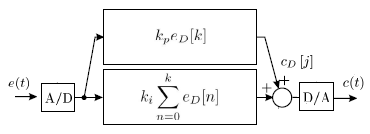
Today, digital controllers are being used in many large and small-scale
control systems, replacing analog controllers. It is now common
practice to implement PI controllers in its digital avatar, which means
the controller algorithm is implemented in software rather than in
hardware. The trend toward digital control is mainly due to the
availability of low-cost digital computers. Moreover, as the complexity
of a control system increases, demands for flexibility, adaptability
and optimality increases. Digital computers used as compensators
are a better option in such cases. A general purpose computer, if used,
lends itself to time-shared use of other control functions in the
plant.
Why real time
Using general purpose computers puts us at a disadvantage, if the operating
system (OS) employs various tasks to be
executed on a time shared basis. An example of such an OS is the standard
version of GNU/Linux,
where the time constraints required by the control system are not met.
The systems that ensure timing requirements are termed Real-Time (RT)
systems. An appropriate OS should be used to satisfy time constraints.
Real-Time Systems
A real time system can be defined as a "system capable of guaranteeing
timing requirements of the processes under its control". It must be fast
and predictable. Fast means that it has a low latency, ie it responds
to external, asynchronous events in a short time. The lower the latency,
the better the system will respond to events which require immediate
attention. Predictable means that it is able to determine a task's
completion time with certainty. It is desirable that time-critical
and non time-critical activities coexist in a real time system. Both
are called tasks and a task with a hard timing requirement is called
a real time task.
What is RTAI?
RTAI stands for Real Time Application Interface. Strictly speaking, it is
not a real time operating system, such as VXworks or QNX. It is based on
the Linux kernel, providing it with the ability to make itself fully
pre-emptable. RTAI offers the services of the Linux kernel core,
adding the features of an industrial real time operating system. It lets you
write applications with strict timing constraints for your favourite
operating system. Like Linux itself, this software is a community effort.
You can follow this link
to get more articles on experiments with RTAI.
PC parallel port as analog I/O interface
The PI Controller described in this article uses the PC parallel port
as an analog I/O interface. Just two bits are used as analog interfaces
through a technique called Pulse Width Modulation (PWM). This technique
allows an analog interface to be built without the use of A/D or D/A
converters, and analog voltages and currents can be used to control
processes directly. As intuitive and simple as analog control may seem,
it is not always economically attractive or practical. Analog circuits
tend to drift over time and can, therefore, be very difficult to tune.
By controlling analog circuits digitally, system costs and power
consumption can be drastically reduced. Pulse Width Modulation (PWM)
is a powerful technique for controlling analog circuits with digital
signals. PWM is a way of digitally encoding analog signal levels.
The duty cycle of a square wave is modulated to encode a specific
analog signal level, as shown in this figure:
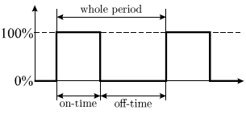
The PWM signal is still digital because, at any instant, it is either
on or off. The relation between the on time and the off time varies
according to the analog level to be represented. Given a sufficient
bandwidth, any analog value may be encoded with PWM.
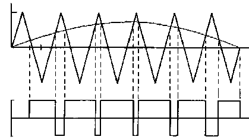
In this work, PWM technique is used to generate the gating signals for
the chopper circuit. The speed of a DC motor can be controlled by varying
its input voltage. A DC chopper circuit can do this job.
DC Chopper
A chopper is a static device that converts a fixed DC input voltage
to a variable DC output voltage. A chopper may be thought of as
a DC equivalent of an AC transformer since they behave in an identical
manner. Chopper systems offer smooth control, high efficiency, and fast
response.
Power semi-conductor devices used for a chopper circuit can be
power BJT and/or power MOSFET. Like a transformer, a chopper can be used to
step up or step down the fixed DC input voltage. Here, for motor speed
control, a step-down chopper circuit with a power MOSFET is used. It is
basically a high speed semiconductor switch. It connects source to load
and disconnects the load from source at a high speed according to the
gating signal. The average load voltage is given by
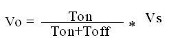
where Vs is the source voltage, Ton is the on-time,
Toff is the off-time, T (the sum of Ton and
Toff) is the chopping period, and Ton/T is the duty
cycle.
Preparing The Parallel Port
Although the parallel interface is simple, it can trigger interrupts.
This capability is used by the printer to notify the lp driver that
it is ready to accept the next character in the buffer.
A simple outb() call to a control register
makes the port ready to generate interrupts; the parallel interface
generates an interrupt whenever the electrical signal at pin 10 (the
so-called ACK bit) changes from low to high. The simplest way to force
the interface to generate interrupts is to connect pins 9 and
10 of the parallel connector. A short length of wire inserted
into the appropriate holes in the parallel port connector
on the back of the system will create this connection. Pin 9 is
the most significant bit of the parallel data byte.
Real time speed controller
The figure below represents the
closed loop speed control of a 6V DC motor controlled by a chopper
circuit. The duty cycle of the chopper is controlled using gating
signals (PWM) from the PC parallel port. The PC is running the speed
sensing (shaft encoder) module to read the current speed measured by
the encoder. This device works by generating a square wave pulse produced
when a perforated disc (keyed onto the shaft of the motor) cuts an IR beam.
This square wave pulse train is fed back to the 10th pin of the parallel
port. The controller program is running as a hard real time user program.
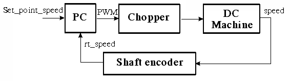
The well-implemented PI controllers are usually hard real time
systems. I have implemented a Digital PI Controller in a standard
PC running Linux/RTAI (Linux-2.4.24 kernel
patched with the RTAI-3.1). The I/O was done by PWM through two pins
of the parallel port: one for input and the other for output, dispensing
with the need for an A/D converter which is the most expensive component
in a data-acquisition system. The PWM coding/decoding is handled
by software routines implemented in Linux threads with LXRT RTAI hard
real time constraints. The main routine, which is responsible for the
actual PI calculation has also been implemented in a thread with hard
real time constraints. The communication between threads was made through
global variables. The controller program produces the necessary actuating
signal (in terms of a PWM pulse), which in turn depends on an error
signal produced by the difference of the set speed (a constant in the
program) and the present speed. The chopper varies the average DC output
voltage, used to control the speed of the DC motor. The motor used here
is a small 6/12 V motor commonly found in most tape recorders. The
following sections present the speed sensing (shaft encoder) module
and the controller program followed by a brief description of the same.
Speed sensing (shaft encoder) module
Once interrupts are enabled, the parallel port generates an interrupt
whenever there is low to high transition at pin 10 (ACK bit). This module
includes the operations that should be performed when the interrupt occurs.
The 'init_module' function registers a handler for interrupt
number 7 (IRQ number). In the first execution of function
'lpt_irq_handler (void)' the count is zero; the control
enters the if statementi, and the 64-bit time stamp counter (tsc) value is obtained
by rdtsc macro function defined in 'msr.h'. By getting two tsc values at
consecutive interrupts, the number of CPU clock cycles in between these
interrupts can be calculated and hence the frequency. Frequency thus
measured is communicated with a userspace program via a FIFO. Thus the
userspace program can calculate the real-time speed. Here is the code
which implements this idea:
The rt_request_global_irq and rt_enable_irq functions together instruct
the RTAI kernel to service IRQ 7 (which is the parallel port interrupt).
After compiling this module, insert it into the kernel address space using
the "insmod" or the "modprobe" command, and check "/proc/modules" to ensure
that it loaded successfully.
Controller program
The controller program is responsible for three things:
Reading the current cpu_clock_count from the speed sensing module,
ie from the FIFO, which is stored in an array for future reference;
The PI task, and,
Encoding the PI digital output, which is stored in a variable,
into an external PWM wave signal which is the gating signal for
chopper circuit.
The algorithm used for implementing the PI controller can be summarized as
follows:
Create a periodic task with period Tc
Read the state of the parallel input pins
Compute the control signal and update PWM signal
Update the output-write thread
Wait for the next task period Tc.
The main function creates five hard real-time threads which are shown in
listings 1-4. An LXRT task starts out as an ordinary POSIX thread. It gets
transformed to a hard, real-time thread by calling a function available as
part of the LXRT library. The effect of this transition is that the thread
is no longer managed by the normal Linux Scheduler - it comes under the
supervision of the RTAI Scheduler, which guarantees that its timings do not
get disturbed by activities taking place within the Linux kernel or in other
user-space threads. The main() thread runs as a low priority task.
The PI task is the core of the application, where the controller
calculation is actually made. The PI controller receives as input the
error, given by e(t) = r(t) - y(t) and computes the control variable c(t)
which is its output. The control signal c(t) is calculated from the
discrete PI equation given below:
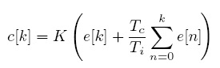
The PI thread looks at
The current value of the error;
The integral of the error over a recent time interval;
Compute control signal and update PWM signal;
Update output-write thread
This thread has been assigned the fifth highest priority among the
five hard real time tasks.
Listing 2 shows a hard Real-time LXRT program
generating a PWM running at a frequency of 50Hz on a parallel port pin to feed the motor
drive (DC chopper). The PWM is generated by comparing the instantaneous values
of a sine wave and a triangular wave of required frequency. The instantaneous
values of the sine wave and the triangular wave are generated in the threads
given in Listing 3. These instantaneous values are compared in the thread
rt_task_out_put to generate the PWM. This thread has been assigned the third
highest priority.
Listing 3, below, shows the code
for generation of sinusoidal and triangular function values used in the
output thread for generating the PWM gating signals.
This task continuously reads values from the FIFO (note that the
shaft encoder writes real-time speed to the FIFO) and stores it in the
`cpu_clock_count' variable. The value of cpu_clock_count is
converted to speed in RPM and is stored in `rt_speed'. This
thread has been assigned the second highest priority. The code for this
process is shown in Listing 4:
The real-time speed of the motor can be displayed either by running
the code below as a thread, or by running main() as a GUI application by
using FLTK/GTK.
/*Print Real Time Speed*/
void* task_show_report(void *arg)
{
while(!stop) {
printf("%d\n",rt_speed);
}
}
The above experiment illustrates the use of a PI controller
for closed loop speed control of a small DC motor. The performance of this
PI controller was found to be acceptable for such a motor. However, in
attempting to model a converter along similar lines for a real large-scale
industrial drive, I found that the large number of control parameters
required a more in-depth and detailed controller design using the concepts
of Control System theory.
I am a Linux enthusiast living in India. I enjoy the freedom and power that
Linux offers. I must thank my mentor Mr. Pramode C. E. for introducing me to
the wonderful world of Linux.
I completed my B-Tech in Electrical and Electronics Engineering from Govt.
Engineering College, Thrissur (Kerala, India) (2001 - 2005). Presently I am
working in inDSP Audio Technologies Pvt. Ltd, Trivandrum, India as an
Embedded Systems Engineer.
I spend my free time reading books on Linux and exploring the same. My
other areas of interest include device drivers, embedded
systems, robotics and process control.
Back a few years ago, some friends of mine got very interested in
creating audio CDs from *.mp3 files. At the time, they had access to
a large directory structure with numerous directories (read: CDs), each
containing around 10-13 mp3 audio files. At first, when the need
arose to create a CD, one of the many "interactive CD burning software"
packages would be used. This entailed selecting the relevant mp3
files with a mouse, dragging them to another "window", selecting any
CD-specific options, and then finally pressing the "go" button. In
addition to this manually intensive process, the software itself
usually took a good deal of time to complete the "burn", during which
one dare not do any serious work on that computer, for the CD buffer
may run dry, and the burn process would be ruined. Because of the
amount of effort that went into creating a single CD from a set of MP3
files, only the most "important" CDs were created in this way.
At this same time, I began to wonder if I could use Linux to script the
entire burn process. My idea was to write a script that would
operate on a text file containing a list of directory one wanted CDs
burned from. When the script executed, the first directory on the list
would be used, and a CD would be burned. This directory would then be
removed from the list. A user could run the script from the command
line, and a CD would be produced without the use of a graphical user
interface. As an additional bonus, this script could be run by
cron in the middle of the night. Then, the user would need only
leave a blank CD in the drawer at the end of the day, and come back to a
newly created CD the next morning. One wouldn't get a huge number of
CDs created at one time, but, over weeks and months, one naturally would
obtain a sizable collection. In addition, running this script at
night meant all the cycle-time is done when the computer is idle, so
there is no disruption of one's daily routine.
</begin legal blub/>
Before I begin this article, I want to state that in no way am I
endorsing any illegal behavior. This article is for educational
purposes only. I do not support, endorse, or approve of the illegal
copying of music or other media.
</end legal blub/>
Before I began the task of scripting this burn process, I had a
relatively good knowledge of shell scripting, but no understanding of
the audio CD format, audio file formats, etc. Luckily, one doesn't need to
know too much: One is able to find all the audio pieces on the Web,
so the scripting was not too difficult.
Before I go into the scripting, there were some pieces of software that
must be installed on your system, to perform the tasks we need to do.
Most of these pieces come standard with a great number of Linux
distributions, but I've included the links here, just in case a reader
doesn't have them in his/hers. By the way, a person can check if they
have the program named "programName" by typing at the shell prompt:
$ type programName
If you see something like "programName not found in blah blah blah",
then you do not have this program, and you need to download the
program from the links below, and install it.[1]
The first required program is the CD burning program itself, called
"cdrecord". This program will interact at the device level with your
CD-ROM drive, and perform the actual burning process. It can be
obtained at
http://cdrecord.berlios.de/old/private/cdrecord.html.
The next is an audio normalization program called "normalize". This
program is used to ensure that all of the tracks on the audio CD play
at the same "volume level". This is also delivered standard with
several Linux distributions, but can also be downloaded at
http://www1.cs.columbia.edu/~cvaill/normalize/.
Next is a program called mpg321, which will allow one to decode mp3
into WAV files. This can be found at
http://mpg321.sourceforge.net/.
Next is a program called cdrdao, which is used to write audio or data
CD-Rs in disk-at-once (DAO) mode, based on a textual description of the
CD contents:
http://cdrdao.sourceforge.net/
The final required program is a Perl script that implements all of the
suggestions in "Greg Wierzchowski's" Linux MP3 CD Burning mini-HOWTO.
This Perl script basically glues all the above programs together. By
the way, the Linux MP3 CD Burning mini-HOWTO is an excellent tutorial on
all of the issues encountered in burning CDs, and I highly recommend reading
it. The HOWTO can be found at
http://tldp.org/HOWTO/MP3-CD-Burning/index.html.
The first step I performed was to create a text file containing the
lists of the desired directories. A very simple one would look like
the following:
% cat desiredCDs.txt
Aerosmith/Greatest Hits
3 Doors Down/Under The Sun
ZZ Top/Greatest Hits
I broke this task up into two scripts. The first (called
"mp32AudioCD") is a wrapper for mp3cd that will create a audio CD,
given a directory of *.mp3 files. The second script (called
"checkForCD_N_Burn.sh") is a wrapper to mp32AudioCD that extracts a
single directory from the "desiredCDs.txt" file, and passes it to
mp32AudioCD. The script checkForCD_N_Burn.sh is called from cron,
every morning. I'll present the scripts below, and then explain the
various pieces separately.
With that introduction, the shell script checkForCD_N_Burn.sh looks
like the following. Note I've appended line numbers to the left of
the code:
1 #! /bin/sh
2
3 CDLIST=~/desiredCDs.txt
4 TOPDIR=/mnt/mp3s
5
6 # Check if the file exists:
7 if [ ! -e $CDLIST ]; then
8 exit 1
9 fi
10
11 # Read the first directory to burn:
12 read currentCD < $CDLIST
13
14 # Check to make sure this directory is present on disk:
15 if [ ! -d "$TOPDIR/$currentCD" ]; then
16 echo "$0: CD $currentCD not found"
17 exit 1
18 fi
19
20 echo "Attempting to burn: $currentCD"
21
22 if ! ~/bin/mp32AudioCD "$TOPDIR/$currentCD"; then
23 echo "$0: CD burn failed"
24 exit 1
25 else
26 # Delete this line from the CD list
27 sed '1d' $CDLIST > /tmp/cdListOneLess
28 mv /tmp/cdListOneLess $CDLIST
29 fi
In this code, we declare the two variables: CDLIST, which points to the
text file above, and TOPDIR, which points to the top of the directory
structure that contains the subdirectories desired. After some
argument checking, on line 12, we read the first directory, specified
in the text file desiredCDs.txt, into the variable currentCD. This
would be the string "Aerosmith/Greatest Hits", in the above example.
Lines 15-18 check to make sure that we have requested a valid
directory, and line 20 calls the function "mp32AudioCD" with the
correct argument. If this command succeeds, we remove this directory
from the desiredCD.txt list on lines 27-28.
Next, I show the code for the routine mp32AudioCD
1 #!/bin/sh
2
3 iso_dir=/tmp/isoimage_dir
4
5 echo "Removing data in $iso_dir"
6 # Clean up anything in the $iso_dir:
7 rm -f $iso_dir/*
8
9 echo "Copying data into $iso_dir"
10 cp "$1"/*.mp3 $iso_dir
11 # Exit if we have an error coping MP3 files:
12 if [ $? -ne 0 ]; then
13 exit 1
14 fi
15
16 # Got to mp3 directory:
17 cd $iso_dir
18
19 # Call mp3cd script:
20 $HOME/bin/mp3cd -E -c "--driver generic-mmc --speed 1" *.mp3
21
22 exit 0
Here, on line 3, we define a temporary directory "iso_dir" to copy the
mp3 files to. This needed is because mp3cd converts the mp3 files
into WAV files, and I needed this done on a local machine. On line 17,
we change into this directory, and run mp3cd with some command flags.
The flags I use here are:
-E, --no-eject Don't eject drive after the burn.
-c, --cdrdao ARGS Pass the option string ARGS to cdrdao.
Here the -c command switch stores some specific options that I pass to
cdrdao.
With this introduction, we can perform a test run. With all the
directories set correctly, at a shell prompt enter:
$ ~/bin/checkFor_CD_N_Burn.sh
You should see some statements explaining what CD you are about to
burn, followed by the burn process beginning. When the process
finishes, you should have a new CD in your drive.
All that remains to be done is to create a cron script that will run
this program every night, creating a new CD every morning. I choose to
run this program only on Monday through Friday evenings, at 1:30 A.M. (Even
computers need rest!) To have this happen at a shell, enter the
following:
crontab -e
This should open an editor with your existing crontab file. In this
file, put the following line:
30 1 * * 1-5 /home/wax/bin/checkForCD_N_Burn.sh
Save the file and you are done. The line above runs the
checkFor_CD_N_Burn.sh script every Monday through Friday evening, at
1:33 AM. Thus, every Monday-Friday morning, you should have a new CD in
your drive. I think you'll find that a great number of CDs can be
created from *.mp3 very easily, this way.
Write, if you have any questions or suggestions for improvements to this
script. I'd love to hear them. Flames to /dev/null.
[1] Rick Moen comments: While it's
useful and worthwhile to know about a program's "upstream" development
site, where (among other things) the author's latest source code can
be downloaded, there are a few disadvantages that should be noted,
(and some alternative locations that should be usually be preferred,
instead, if such are findable):
1. Absent extraordinary measures on your part, your Linux distribution's
package-tracking system won't know about the program's presence on your
system. Therefore, it won't know to avoid installing conflicting
programs, removing libraries it depends on, etc.
2. You won't get any tweaks and enhancements that may be normal (or
necessary!) for applications on your Linux distribution — unless
you yourself implement them. You won't get security patches, either,
except those written by the upstream author.
3. Along those same lines, the desirable version to compile and run may
well not be the author's latest release: Sometimes, authors are trying
out new concepts, and improvements & old bugs fixed are outweighed by
misfeatures & new bugs introduced.
4. As a person downloading the upstream author's source code directly,
you have to personally assume the burden of verifying that the tarball
really is the author's work, and not that of (e.g.) a network intruder
who cracked the download ftp site substituted a trojaned version.
Although this concern applies mostly to software designed to run with
elevated privilege, it's not a strictly academic risk: Linux-relevant
codebases that have been (briefly) trojaned in this fashion, in recent
years, on the upstream author's download sites, include Wietse Venema's
TCP Wrappers (tcpd/libwrap), the util-linux package, sendmail, OpenSSH,
and the Linux kernel (CVS gateway's archive, only). Unless you are
prepared to meaningfully verify the author's cryptographic signature
— if any — on that tarball, you risk sabotaging your
system's security.
All of the above are problems normally addressed (and the burden of
solving them, shouldered) by Linux distributions' package maintainers,
so that you won't have to. It's to your advantage to take advantage of
that effort, if feasible. The memory of when a thousand Linux sysadmins,
circa 1993, would need to do all of that work 999-times redundantly, is
still fresh to us old-timers: We call those the Bad Old Days, given
that today one expert package maintainer can instead do that task
for a thousand sysadmins. And yes, sometimes there's nothing
like such a package available, and you have no reasonable alternative
but to grab upstream source tarballs — but the disadvantages
justify some pains to search for suitable packages, instead.
Depending on your distribution, you may find that there are update
packages available directly from the distribution's package updating
utilities, or from ancillary, semi-official package archives (e.g.,
the Fedora Extras and "dag" repositories for Fedora/RH and similar
distributions), or, failing that, third-party packages maintained by
reputable outside parties, e.g., some of the Debian-and-compatible
repositories registered at the apt-get.org and backports.org sites.
Although those are certainly not unfailingly better than tarballs,
I would say they're generally so.
The smaller, less popular, and less dependency-ridden a package is, the
more you might be tempted to use an upstream source tarball. For
example, I use locally compiled versions of the Leafnode pre-2.0
betas to run my server's local NNTP newsgroups, because release-version
packages simply lack that functionality altogether. On the other hand,
that package's one dependency, the Perl PCRE library, I satisfy from my
distribution's official packages, for all the reasons stated above.
John Weatherwax started running Linux when his undergraduate Physics
laboratory switched to it from a proprietary UNIX system. He was
overwhelmed with the idea that by individual donations of time and
effort such a powerful operating system could be created. His
interests are particularly focused on numerical software and he is
currently working on some open source software for the solution of
partial differential equations. He hopes to complete that project
soon.
When he is not working on his various scientific endeavors he spends
his free time with his wife and their 9 month old daughter.
Part computer programmer, part cartoonist, part Mars Bar. At night, he runs
around in a pair of colorful tights fighting criminals. During the day... well,
he just runs around. He eats when he's hungry and sleeps when he's sleepy.
The Ecol comic strip is written for escomposlinux.org (ECOL), the web site that
supports es.comp.os.linux, the Spanish USENET newsgroup for Linux. The
strips are drawn in Spanish and then translated to English by the author.
These images are scaled down to minimize horizontal scrolling.
To see a panel in all its clarity, click on it.
These cartoons are copyright Javier Malonda. They may be copied,
linked or distributed by any means. However, you may not distribute
modifications. If you link to a cartoon, please notify Javier, who would appreciate
hearing from you.
One of the methods used by normal humans to send other (normal humans) on the "guilt trip" is to use the cliche "every time you do THIS or THAT god kills a kitten. Please, think of the kittens..." For an even bigger guilt-trip, you can use "every time you do THIS , somewhere a kitten gets run over by a Monster truck. given not ten minutes ago to the five year old girl standing by the side of the road, spattered, red, and crying as she fumbles with her inhaler" (Thanks to Brian Bilbrey, member of The Answer Gang for the picturesque description )
Frankly, the whole killing of the kitten part leaves me rather unmoved. Having lots of free time on my hand lately, I thought of things that would send me on a guilt trip.
every time you do THAT, your email id gets harvested by Mr. Joseph Adisa of Lagos, Nigeria
every time you do THAT, Microsoft issues ten critical updates
every time you do THAT, some clueless bastard says "Linux has less viruses because it is less popular " (my veins are throbbing just writing this)
every time you do THAT, some luser says "IE is better than Firefox since IE supports advanced features like ActiveX"
every time you do THAT, someone starts building a new Linux distro
I know I am not normal
[Jimmy]
Hmm... expand the list...
Every time you do THAT:
Some poor admin has to configure sendmail
Someone decides to write a new implementation of Scheme
Someone writes a new "open source" licence
(Oh, and by the way, Firefox (and Mozilla) does support ActiveX. (I would say on both Linux and Windows, but it turns out that Wine requires the use of the Windows version). Konqueror also does (or, at least, did), using the reaktivate module from kdenonbeta)
[Jimmy] I could add "Jimmy starts another off-topic thread"...
When the first server was turned on, it booted all the way to the
standard AIX login prompt. It was later discovered that the root
(master account) password was indeed set to root.
...
Keep in mind that these servers came from the State Transit Authority
of NSW, how is it possible and acceptable in this day of age that
governmental servers be decommissioned and sold without wiping the
contents of the drives?
...............
[Martin]
Good grief how the heck did that happen... ?
"If we, the free-software proponents, had lost [the July 6 vote in the
European Parliament], it would have been a final defeat in Europe. The
relevant part of the European commission works hand in glove with the
Business Software Alliance (BSA), and a BSA lawyer actually wrote much of
the text of the draft directive the commission proposed. (We know this
because they were so foolish as to publish it as a Word file, which
contained information about who wrote what.)"
"Our years-long fight has shown how undemocratic the EU is."
"Bullying a whole national government appears to be easy, but there is
usually no need to go that far: it suffices to convince one minister, or
the minister's representative, to vote as desired. The Hungarian
representative voted for software patents even as his prime minister said
Hungary was against them. The German representative voted in favour even
after the German parliament voted unanimously against. The Dutch
government pushed software patents through the council of ministers after
its parliament ordered it to reject them."
"Decided that the CollabNot infrastructure must have been stolen
whole-sale from some bad D&D
game: if ye wish to attain commit-level
access for project foo, ye must first - request the 'Acolyte' role in
the foo project. If approved, ye need to accumulate power-points - the
path lies through stealing the magic sword of Blag and killing the
evil goblin of Nurg. When ye hast won through: heft your stone of
Bling, and publicly crunch the bones of Nodab (for luck) - while
requesting stewardship of the Can-Commet relic. Be warned - only the
few get this far, and the process must be repeated for each 'project'.
Many fall at the next mighty hurdle to await you: the mind-deadening,
spine chilling Specification task, with it's many difficult stages:
iTeamus-formationus-from-nothingus, QAEducationus,
endless-pointless-discussionus, and acutely-delayed-resultus. The real
shame is Sun didn't choose Collab to help strangle their OpenSolaris
baby."
"The third big lesson we can learn from open source and blogging is
that ideas can bubble up from the bottom, instead of flowing down from
the top. Open source and blogging both work bottom-up: people make
what they want, and the the best stuff prevails.
Does this sound familiar? It's the principle of a market economy.
Ironically, though open source and blogs are done for free, those
worlds resemble market economies, while most companies, for all their
talk about the value of free markets, are run internally like
commmunist states."
[Thomas]
Ugh.
"Look, Mike, I'm like, just so like impressed."
"The word like may be the only word in English that can be a noun,
verb, adverb, adjective, preposition, conjunction, and interjection."
[Thomas]
Not in the 'Pocket Thomas Adam Dictionary'.
I'm, like, no way! What's in your dictionary?
[Thomas]
Some ha'pennies.
What they call a hedge is what I've meant by "softening" the sentence.
"Like" shows a measure of doubt or approximation, and is a polite way of
saying something negative. Contrast:
...............
'
He was wrong. -vs- He was, like, wrong.
That dress is ugly. -vs That dress is, like, ugly.
'
...............
[Thomas]
Oh, sure. I understand its usage, I just... there's something about it
that I don't like. It's wrong of me, I know, but whenever I read
sentences written like [1] that, I can't help but read it in a flippant
way. Pah. It's just me.
[1] There's that word again.
"Some are pressing to have valley speak (also known as Valspeak or
mallspeak) of which the uses of /like/ illustrated above are a telltale
sign, recognized as an American dialect."
[Thomas]
Indeed. Oh, don't get me wrong, I'm just very old before my time, and
don't agree with it.
Like, bitchin.
[Warning: vulgar language ahead. Last chance to press 'delete'.]
They have now diversified into other lines of business including My
Pussy and There's No Place Like Home. My Pussy is for girls with cats
("every girl wants to spoil her pussy").
http://girlmeetsdog.com/pussy.html
There's No Place Like Home is a charity for bringing boas to homeless
dogs in animal shelters. No, really. It "enhances the natural beauty"
of the pet, which I guess raises the pet's self esteem.
http://girlmeetsdog.com/noplace.html
[Thomas]
Ha! A most... hmm. "American" site, is a most fitting description for
it.
Although you have made me laugh, Mike. Hehehehe, thanks.
Slashdot interview with the manager of MS's Linux lab
I was pleased to see your reasonably candid responses to the moderated
questions that were posed on the Slashdot "interview".
I'd like to ask a more pointed question [set] related to Question 2:
Open Standards
"How does Microsoft internally deal with Open Standards and Open
Document Formats?"
It strikes me that you could have interpreted the question to mean "It
appears that Microsoft practices customer lock-in through proprietary
data formats. What progress do you see Microsoft making on reversing
these practices? Is Microsoft going to provide reasonable data-
interchange tools? If so, then why would Microsoft be patenting features
of their future document formats?
That would really be a stellar set of questions to hear the answer to.
It's the number one reason why I can't recommend MS products to clients
- data formats win out over user interface every time I lay the issues out.
Thanks again,
.brian
...............
end of copied message. Do you think I'll get an answer? If I do, I'll
let you know.
I have been back and forth via email with Bill Hilf of Microsoft's Linux
Lab, following his interview on Slashdot [1]. In question two, he was
asked about Open Standards, and weaselled a bit, to my way of thinking.
So I wrote and asked:
...............
I was pleased to see your reasonably candid responses to the
moderated questions that were posed on the Slashdot "interview".
I'd like to ask a more pointed question [set] related to Question 2:
Open Standards
"How does Microsoft internally deal with Open Standards and Open
Document Formats?"
It strikes me that you could have interpreted the question to mean
"It appears that Microsoft practices customer lock-in through
proprietary data formats. What progress do you see Microsoft making
on reversing these practices? Is Microsoft going to provide
reasonable data-interchange tools? If so, then why would Microsoft be
patenting features of their future document formats?"
That would really be a stellar set of questions to hear the answer
to. It's the number one reason why I can't recommend MS products to
clients - data formats win out over user interface every time I lay
the issues out.
***
...............
He sent me a link to Microsoft Office Open XML Formats Overview [2], and
stated "I think this is a great step forward in the right direction. -Bill"
Hmm, thinks I, after following the link and reading for a fair piece.
Then I write to him again:
...............
So, by "royalty-free" does Microsoft mean that use of the format will
be licensed to all comers?
Well, open patented format is less good than open public domain
format. I can hear the argument for "keeping control" of the format,
but as MS is the 800 pound gorilla on this issue, I'd imagine that
actual baseline control of the format would remain with the vendor
who has such a large percentage of the desktops, world-wide. Hmmm.
***
...............
Bill, game as ever, comes back with this stellar response: "[Bill Hilf]
Yes, 'royalty free' means you can use it without paying us a royalty fee."
Well, color me surprised, I'd have never come to that on my own. </sarcasm>
Then I replied:
...............
Yah, I know what royalty-free means. That's why I asked the key
other question, if MS would license it to anyone (OpenOffice,
Koffice, StarOffice, anyone). You didn't answer that. If you don't
know the answer, that's okay.
***
...............
Bill, ever resourceful, pops yet another link into the mix, and doesn't
answer my question: "It depends on the license terms of the program -
each program and license is available at MS' Shared Source Initiative.[3]
Office isn't among the "programs" listed in the Shared Source Initiative
pages, so I am lead to believe that Microsoft does not in fact intend
its Open XML Formats to be open in any real sense of the term. I'll
desist in my game of Whack-A-Hilf, as it appears that as usual, the game
is rigged.
I just thought TAG would be interested in the interchange.
Then Hare came out with a startling proposal. He said that the recent
corporate scandals could have been prevented if CEOs were screened for
psychopathic behavior. "Why wouldn't we want to screen them?" he asked.
"We screen police officers, teachers. Why not people who are going to
handle billions of dollars?"
It's Hare's latest contribution to the public awareness of "corporate
psychopathy." He appeared in the 2003 documentary The Corporation,
giving authority to the film's premise that corporations are
"sociopathic" (a synonym for "psychopathic") because they ruthlessly
seek their own selfish interests -- "shareholder value" -- without
regard for the harms they cause to others, such as environmental damage.
(Apologies if the title offends anyone, but I couldn't resist.)
Radio piece about Moby Dick and the King James Bible, two classic books that weren't well regarded when they were published. The KJB was commissioned, it says, both to unite England's Protestants and Catholics,
[Jimmy]
Well that's just plain wrong. At the time the Catholic church considered it heresy to translate the Bible. The point of the King James Bible was to have a Church of England approved translation -- it's the King James Bible, King James was the head of the English church. (Though, IIRC, he was generally regarded as a closet Catholic, so maybe...)
and because James objected to the Geneva Bible, which was strongly Calvinist and anti-monarchic.
[Jimmy]
Erm... I doubt it. There had already been several attempts at translating the Bible into English by then. "The Story of English" has quite a bit about the importance of English translations of the Bible and rates Tynesdale's highest.
[Jimmy (again)]
Whoops. The book is "The Adventure of English", the translator was
Tyndale. There was an earlier attempt to translate the Bible, by John
Wycliffe.
[Rick]
Tyndale got a rather... hot reception for it.[1]
/me halts, Austin Powers-style, to emphasise his rather laboured bon mot,
and wonders where his Mod backup band went.
[1] For the historically challenged: Tyndale was burned at the stake
by the Hapsburg regime in Belgium, which had arrested Tyndale there —
at the urging of a rather shadowy Englishman named Henry Philips, who
may have been acting on Henry VIII's behalf — as he was consulting with
scholars on the Continent.
[Jimmy]
Hmm. That reminds me that I should have thrown in a few Wikipedia links:
[Jimmy]
"From within the sanctioned, clerical, deeply traditionalist honeyed
walls of Oxford, Wycliffe the scholar launched a furious attack on the
power and wealth of the Church, an attack which prefigured that of
Martin Luther more than a hundred years later."
"[M]any familiar phrases do have their English origin in this
translation: 'woe is me', 'an eye for an eye' are both in Wycliffe, as
are such words as 'birthday', 'canopy', 'child-bearing',
'cock-crowing', 'communication', 'crime', 'to dishonour', 'envy',
'frying-pan', 'godly', 'graven', 'humanity', 'injury', 'jubilee',
'lecher', 'madness', 'menstruate', 'middleman', 'mountainous',
'novelty', 'Philistine', 'pollute', 'puberty', 'schism', 'to tramp',
'unfaithful' and 'zeal'."
Also mentioned are: 'humanity', 'pollute', 'profession', 'multitude',
and 'glory'.
[Jimmy (yet again)]
Oh, while I'm at it...
"Tyndale's words and phrases influenced between sixty and eighty
percent of the King James Bible of 1611 and in that second life his
words and phrases circled the globe.
"We use them still: 'scapegoat', 'let there be light', 'the powers
that be', 'my brother's keeper', 'filthy lucre', 'fight the good
fight', 'sick unto death', 'flowing with milk and honey', 'the apple
of his eye', 'a man after his own heart', 'the spirit is willing but
the flesh is weak', 'signs of the times', 'ye of little faith', 'eat,
drink and be merry', 'broken-hearted', 'clear-eyed'. And hundreds
more: 'fisherman', 'landlady', 'sea-shore', 'stumbling-block',
'taskmaster', 'two-edged', 'viper', 'zealous' and even 'Jehovah' and
'Passover' come into English through Tyndale. 'Beautiful', a word
which had meant only human beauty, was greatly widened by Tyndale, as
were many others."
"The word 'king' appears not once in the Old Testament of the Geneva Bible. Instead it used the word 'tyrant'." Oops. By the time James's translation appeared ten years later, it was virtually ignored, and the king himself had gone on to other things.
"By the time the bible was published in 1611, King James was pretty well losing it. He'd spent so much money on his boyfriends and his palaces and his parties, and had alienated such wide branches of Puritan opinion, and he was drinking so much, that his star was waning anyway." Then after a civil war, it became an object of consolation, a reminder of an era that was lost.
Willy Wonka
From Adam Engel
Hence, it must be doable and I merely can't
figure out how to do it, or it's doable but not worth the time/effort
and was a silly idea in the first place." On the other hand, if the
numbers can be deconstructed in Perl, and reconstructed, why not? They
laughed at Willy wonka, and look at him NOW.
[Jimmy]
Hey, as long as the snozberries still taste like snozberries, I'll be
happy.
[Jimmy]
Dang. No snozberries, but it does have Christopher Lee!!
[Jimmy] I'd like to point out that I'm partial to snozzberries after the
scene in "Super Troopers".
I saw his name on the opening credits, but once the movie started I
forgot to look for him, and since I haven't seen him in anything but
old 1960s horror movies, I probably wouldn't recognize him. But I'll
give it a shot: was he the grouchy old "grandpa," the one who didn't go
to the Factory but counseled young Charlie not to be a "dummy?"
[Lew]
Nope.
Christopher Lee was Willie Wonka's father, the dentist.
It took me a few good minutes to figure that out
[conspire] OT (somewhat) Linux perspective on "Zotob's"
From Rick Moen
I'm going to go to Hell for this, I know, but I'm succumbing to the
temptation to post about the latest Windows virus, here -- sort of. But
this won't be your standard "update your $WHATEVER" MS malware advisory,
I hope: I have in mind some points within spitting distance of
topicality for a Linux user group.
Here's a summary of the current one-day wonder. Feel free to compare &
contrast it against mass-news coverage:
Yesterday's worm, called Zotob, is an automated remote exploit against
insufficiently paranoid input routines in a Win2k (& some WinXP) "Plug and
Play" network daemon (in msdss.dll[1]) reachable over TCP port 445 (the
"Microsoft Naked CIFS" port). This weakness in the daemon's input
validation routines was discovered and disclosed four days before, in
MS Security Bulletin MS05-039, which was accompanied by a binary patch
to close the hole.
The exploit feeds the msdss.dll network interface aberrant data to cause
a -- yes, you guessed it -- stack-based buffer overflow (failing to check
the length of the network message[2] before passing it on to some
buffer), found recently by Neel Mehta of ISS[3], which somehow permits the
remote attacker to locally escalate privilege on the vulnerable machine
and then carry out assorted mischief and attacks on additional hosts.
The news stories and "virus advisories" tell people gruesome tales about
the aforementioned mischief, argue over which Win$FOO releases are and
are not vulnerable, and warn to install $WHATEVER without delay,
but what's invariably missing are obvious concerns like these:
Why the frell are all Win2k-and-later Microsoft machines offering open network access from anywhere at all to a Plug and Play "service" (daemon) -- even on Aunt Marge's desktop box? Who exactly thought that adding network-aware capabilities to Plug and Play was a good idea? (Note that this isn't the same as Microsoft's equally worrisome but distinct "Universal PnP" architecture.)
Why aren't machine admins/owners made aware that they're running such network daemons and exposing them to the entire world as attack targets? What does each of them do? How would one turn each of them off, or limit one of them to be reachable from (say) localhost only, i.e., running them bound only to the loopback network interface, or alternatively from just one's local IP subnet? What would be the consequences of disabling each of them? (I might point out that there's a frightening forest of network daemons enabled by default on such boxes, not just this one Plug and Play daemon on 445/tcp -- and Windows users are told nearly nothing about what, why, and how.)
Given the eyebrow-raising assumption that such a daemon has to be left running by default and accessible outside localhost, why can't Microsoft manage to make it validate its input correctly? I mean, this isn't brain surgery, guys.
And given that such a thing must be running, etc., why is the library allowed such apparently trivial access to escalate privilege? Why should it be able to escalate privilege *at all*? Haven't the Microsoft guys ever heard of role separation and dropping privilege in a process?
Linux relevance: Please note the difference in coverage and emphasis,
compared to *ix vulnerabilities
99% of the news coverage -- even in the allegedly technical press -- of
this "virus" (worm) included basically none of the relevant technical
details about the attack mechanism, and what is being attacked, and what
that is, and why that software is running in the first place... let
alone what would happen if you were to turn that software off, how you
would do so, etc. And my finding that information was like pulling
teeth. (I eventually found most of it at SANS.)
If this were a remotely exploitable buffer overflow and privilege
escalation in the *ix world -- say, in NFS's rpc.statd -- there would be
copious information easily findable about all of the above matters.
In fact, there is such information routinely available, when such
things emerge.
[1] The filename suggests that the library probably is primarily
concerned with the Microsoft Directory Synchronization Services, which
are an external interface for Active Directory. But it's really rather
disturbing and shocking that searching Google on this filename turns up
zero hits. (It's mentioned only in a few very new articles that Google
hasn't yet found.) The file's reportedly (per one recent article) not
provided by the OS itself, but rather silently installed and activated
when you install this-or-that additional software.
[3] http://xforce.iss.net/xforce/alerts/id/202 Interesting quotation:
"The Plug and Play service is a Windows DCE-RPC service that is designed
to handle device installation, configuration, and notification of new
devices. It starts automatically on modern versions of the Windows
operating system, and runs in default configurations. On Windows 2000,
this service is reachable via named pipes and a NULL session. It is
not possible to disable this service without adversely affecting system
operation.
This Plug and Play service contains a remotely exploitable stack-based
overflow. It has been proven to be trivially exploitable...."
[Deirdre Saoirse Moen]
From the Google translation of wakwak.com:
We inform about circumstance below from the trend micro corporation, in
regard to the Troy wooden horse type virus TSPY_BANCOS.ANM which is
announced on July 8th of 2005.
1. TSPY_BANCOS.ANM
The TSPY_BANCOS.ANM with the virus which is classified into Troy wooden
horse type, being something which transmits the information which from the
personal computer which is infected is inputted with the online bank of
specification, to the URL of specification, it does.
From other sites (auto-translated from Japanese) over the last day:
[probably about buying domain names]
Internet is enjoyed 100 times!
To the name store which with the television hides from the prestige store
of topic the decoy of the cake and the harmony candy
[probably about phishing]
Information leakage from the personal computer which it abolishes is
prevented, concerning the data method of elimination.

 Hello kid ..etc
Hello kid ..etc-- Heather

[Heather] On the cheerful recommendation of our host (more notably, the lack of complaints from otherwise noisy clients of his that have switched) we will be switching to this backend midmonth, after we publish.
 2-cent-tip: Monospaced fonts on gmail
2-cent-tip: Monospaced fonts on gmail

 Greetings from Heather Stern
Greetings from Heather Stern![[BIO]](../gx/authors/dchong.jpg)

![[BIO]](../gx/2002/note.png) Edgar is a consultant in the Cologne/Bonn area in Germany.
His day job involves helping a customer with payroll, maintaining
ancient IBM Assembler programs, some occasional COBOL, and
otherwise using QMF, PL/1 and DB/2 under MVS.
Edgar is a consultant in the Cologne/Bonn area in Germany.
His day job involves helping a customer with payroll, maintaining
ancient IBM Assembler programs, some occasional COBOL, and
otherwise using QMF, PL/1 and DB/2 under MVS.
![[BIO]](../gx/authors/huff.jpg)

![[BIO]](../gx/authors/knaggs.jpg) I studied engineering at Université de Liège for a year, then at Trinity
College Dublin for four more (and where I wish I had paid more attention
during the networking lectures). I've always been curious about audio and
video on computers, and Linux has been truly an amazing platform for learning
about these areas.
I studied engineering at Université de Liège for a year, then at Trinity
College Dublin for four more (and where I wish I had paid more attention
during the networking lectures). I've always been curious about audio and
video on computers, and Linux has been truly an amazing platform for learning
about these areas.
 and you
may see them in the next issue. Read on for background and guidelines.
and you
may see them in the next issue. Read on for background and guidelines. Mike is a Contributing Editor at Linux Gazette. He has been a
Linux enthusiast since 1991, a Debian user since 1995, and now Gentoo.
His favorite tool for programming is Python. Non-computer interests include
martial arts, wrestling, ska and oi! and ambient music, and the international
language Esperanto. He's been known to listen to Dvorak, Schubert,
Mendelssohn, and Khachaturian too.
Mike is a Contributing Editor at Linux Gazette. He has been a
Linux enthusiast since 1991, a Debian user since 1995, and now Gentoo.
His favorite tool for programming is Python. Non-computer interests include
martial arts, wrestling, ska and oi! and ambient music, and the international
language Esperanto. He's been known to listen to Dvorak, Schubert,
Mendelssohn, and Khachaturian too.
![[csblockdiagram]](misc/sreejith/system.png)
![[BIO]](../gx/authors/sreejith.jpg)
![[BIO]](../gx/authors/weatherwax.jpg)
![[cartoon]](misc/collinge/526idiom.jpg)

{kind=link}
{kind=link}
{kind=link}
{kind=link}
{kind=link}
{kind=link}
{kind=link}
{kind=link}
{kind=link}
{kind=link}
{kind=link}
{kind=link}
{kind=link}
{kind=link}
{kind=link}